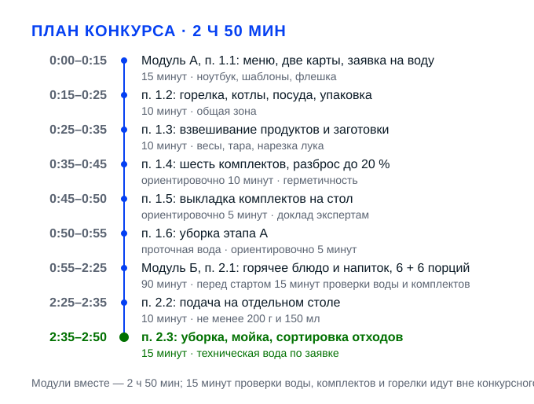
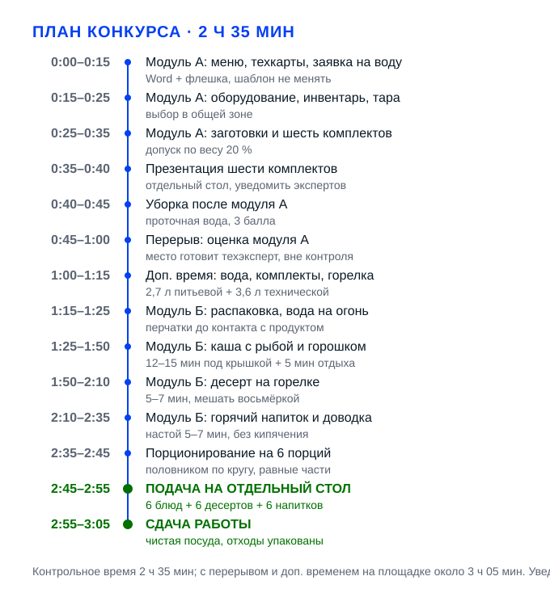

Походная кулинария (Р)
Задания ниже — официальные файлы «Абилимпикс» (источник: abilympics-russia.ru), разложенные по категориям. Решения написаны по тексту задания, регламенту и критериям оценки; в них указано, что именно проверяет эксперт.
Школьник
14–16 лет, базовый уровень заданияВыдержка из официального конкурсного задания: страницы, относящиеся к категории «Школьник» (стр. 5–10 источника).
Пошаговое решение
У школьников «Походная кулинария» длится 2 часа 50 минут и состоит из двух модулей, и первый из них вообще не про готовку. Сначала вы за 15 минут переносите в официальный шаблон технологическую карту своего блюда, за 10 минут выбираете в общей зоне горелку, котёл, нож и упаковку, за 20 минут взвешиваете продукты и раскладываете их на шесть герметичных комплектов, а за 10 минут выкладываете эти комплекты на демонстрационный стол. И только потом 90 минут готовите на туристической газовой горелке горячее блюдо на шесть человек, 10 минут подаёте шесть порций и 15 минут убираете место и сортируете отходы. Исходные данные жёсткие: обед на шесть участников похода, 450 (±50) ккал на человека, не более 250 г продуктов с упаковкой на человека, не менее 200 г готового блюда на человека, весна, Москва, горелка. Меню вы придумываете дома, а на площадке защищаете его цифрами: если калорийность или вес расходятся с заданием, теряются 5 баллов за энергоценность и 5 за вес, даже когда блюдо вкусное. Ниже — весь путь по шагам, с точными окнами времени, критериями и баллами из конкурсного задания.

Задача 1. Разработать технологическую карту и заявку на водуМодуль А · п. 1.1 · 21 балл
Первые 15 минут модуля А решают судьбу всей подготовки: в шаблон технологической карты нужно перенести домашнюю разработку так, чтобы в ней сошлись энергетическая ценность 450 (±50) ккал на порцию, вес продуктов не более 250 г на человека с упаковкой и выход не менее 200 г, а рядом заполнить заявку на воду отдельно по питьевой и технической. Это домашнее задание по заданию, то есть карта продумана заранее, а на площадке вы только приводите её к формату шаблона, проверяете арифметику и сдаёте файл на флеш-носителе техническому эксперту. За шаблон, флешку, энергоценность, соответствие продуктов карте и заявку на воду здесь дают 21 балл из 100.
Действие 1.1. Войти в модуль и подготовить документы
Шаг 1.1.1
Надеваем полный комплект формы до того, как сядете за ноутбук: белый китель, белый фартук с грудкой, тёмные поварские брюки, белый колпак и закрытую обувь с фиксированной пяткой. Колпак садится так, чтобы волосы были убраны и спереди, и на затылке, китель застёгивается на все пуговицы, рукава не свисают на клавиатуру. На груди слева должен читаться логотип «Абилимпикс», под ним — ваша фамилия и имя, поэтому форму проверяем и на себе, и на бирке, а не только «на глаз».
Спецодежда — отдельный критерий в каждом модуле, по 2 балла, то есть 4 балла из 100 набираются ещё до первой закладки продукта. Оценивается не «поварской вид», а соответствие перечню из раздела 3.1 задания: китель, фартук, брюки, колпак, обувь. В модуле Б вы работаете с открытым пламенем горелки, и закрытая обувь с фиксированной пяткой там нужна уже по охране труда, поэтому форма надевается сразу, а не «к моменту готовки».
Пройдите по пяти позициям перечня и попросите волонтёра посмотреть со спины: волос не видно, фартук завязан, брюки не просвечивают, обувь закрытая и сухая. Спереди виден логотип и фамилия. Если чего-то не хватает, у вас есть несколько минут до старта, чтобы это исправить.
Самая частая ошибка — прийти в футболке и спортивных штанах, рассчитывая надеть китель «к готовке»: в модуле А эксперт уже смотрит, и 2 балла уходят сразу. Вторая — одноразовый колпак на макушке, из-под которого на затылке видны волосы: спереди всё аккуратно, а замечание есть.
Эксперт осматривает участника на входе в модуль А и ещё раз перед модулем Б, отмечая комплектность и опрятность. Пятна от муки и брызги жира на кителе к концу конкурса тоже идут в оценку.
Шаг 1.1.2
Организуем место под документы: ноутбук разворачиваем экраном к себе, рядом кладём флеш-носитель, ручку и распечатанный список продуктов с краткими характеристиками. Список напечатан шрифтом Times New Roman, кеглем 16, с интервалом 1,5 — он ваш единственный источник наименований и характеристик, поэтому его не убираем в сумку, а кладём слева от клавиатуры. Проверяем, что на рабочем месте нет чужих файлов и открытых документов: шаблон открывается с нуля.
За 15 минут модуля А нужно успеть перенести карту, проверить арифметику и сдать файл, и каждая лишняя минута на поиск флешки или распечатки съедает время из этого окна. Критерий «тайминг соблюдён» стоит 5 баллов в каждом модуле, а на подготовке он теряется чаще всего именно на суете с документами. Кроме того, характеристики продуктов из списка нужны для расчёта калорийности, и брать их «из головы» нельзя.
На столе лежат: ноутбук, флешка, ручка, распечатка списка продуктов и пустой бланк заявки на воду. Шаблон технологической карты открыт, курсор в первой ячейке. Если чего-то из этого нет, идёте к техническому эксперту сразу, а не через десять минут.
Разложить бумаги по сумкам и искать их в середине модуля — типичная потеря трёх-четырёх минут, которых потом не хватает на проверку калорийности. Вторая ошибка — начать печатать в первом попавшемся файле, а не в шаблоне: формат менять нельзя, и работу придётся переделывать.
Эксперт наблюдает, как организовано место, и отмечает, работает участник по распечатке или импровизирует. Это видно по тому, сверяется ли он с характеристиками продуктов.
Шаг 1.1.3
Открываем шаблон технологической карты и просматриваем его целиком, не меняя структуру: наименование блюда, таблица с массой брутто, массой нетто или полуфабриката, массой готового продукта и массой на шесть порций, строка выхода на одну порцию, строка выхода на килограмм, информация об энергетической ценности, описание технологического процесса, перечень оборудования и подпись участника. Ширину столбцов, порядок строк и шрифт оставляем как есть — только заполняем поля.
За использование шаблона дают 3 балла, и они снимаются, если участник «улучшил» таблицу, удалил строку выхода на килограмм или переставил столбцы. Логика простая: эксперты сравнивают карты разных участников построчно, и любое отклонение от шаблона ломает это сравнение. За сохранённый и переданный файл дают ещё 3 балла, а файл не по шаблону могут просто не принять к оценке.
Прокрутите документ от начала до конца и убедитесь, что все строки шаблона на месте, ни одна не удалена и не переименована. Сверьте с пустым бланком, который лежит у технического эксперта: структура должна совпадать до последней графы.
Соблазн удалить «ненужную» строку выхода на килограмм или объединить ячейки ради красоты стоит 3 баллов и часто приводит к тому, что карту возвращают на переделку. Вторая ошибка — заполнять шаблон в другом редакторе и сохранять в формате, который потом не открывается.
Эксперт сверяет присланный файл с эталонным шаблоном: наличие всех граф, отсутствие лишних строк, корректное наименование блюда в заголовке.
Действие 1.2. Заполнить технологическую карту
Шаг 1.2.1
Вписываем наименование блюда так, как оно звучит в вашем домашнем меню, и сразу под ним — состав из перечня продуктов на рабочем месте. Например, если вы выбрали гречку с консервированной горбушей и зелёным горошком, в заголовке пишем «Каша гречневая с консервированной горбушей и зелёным горошком», а в таблицу заносим семь позиций: крупа гречневая, горбуша консервированная, горошек консервированный, лук, масло растительное, соль, чабрец сушёный.
Критерий «соответствие выбранных продуктов перечню продуктов из технологической карты» стоит 5 баллов и проверяется буквально: эксперт берёт вашу карту и ваши упаковки и смотрит, совпадает ли состав. Если в карте семь позиций, а в комплекте появился лишний продукт «для вкуса», балл снимается. Название блюда тоже важно: по нему оценивают соответствие заявленной тематике походного обеда.
Прочитайте состав карты и разложите перед собой те упаковки, которые планируете брать: каждая позиция должна найтись и в карте, и на столе, и наоборот. Количество строк в таблице должно совпадать с количеством продуктов, которые вы реально упакуете.
Дописать в карту «соль, перец, зелень» общим списком, а потом положить в комплект ещё и сухарики: состав перестаёт совпадать, и 5 баллов уходят. Вторая ошибка — назвать блюдо обобщённо, «походный обед», и потерять балл за тематику.
Эксперт сопоставляет наименование блюда, состав карты и содержимое комплектов. Особенно внимательно смотрит на позиции, которых в карте нет, но которые лежат в упаковке.
Шаг 1.2.2
Заполняем таблицу закладки на шесть порций, двигаясь по каждой строке слева направо: масса брутто, масса нетто или полуфабриката, масса готового продукта, масса на шесть порций. Для гречки с горбушей арифметика выглядит так: крупа 60 г на порцию, то есть 360 г на шесть; горбуша 60 г нетто на порцию, то есть около 370 г, что соответствует двум банкам; горошек 40 г на порцию, или 240 г; лук 15 г на порцию, или 90 г; масло 10 г на порцию, или 60 г; соль 3 г и чабрец половина грамма на порцию.
Масса на шесть порций — та самая цифра, по которой вы будете отвешивать продукты в следующем действии, и любая ошибка здесь тянется дальше: недовес даёт выход меньше 200 г на порцию, перевес выбивает из нормы 250 г с упаковкой. Оба параметра оцениваются отдельно, по 5 и по 3 балла, поэтому таблица должна сходиться до грамма, а не «примерно».
Сложите массу нетто всех строк: у нашего примера получается около 1140 г на шесть порций, то есть 190 г продуктов на человека без упаковки. Умножьте выход на шесть и сравните с требованием не менее 200 г на порцию: 1140 г сырья при разваривании крупы примерно в два с лишним раза даёт около 1500 г готового блюда, то есть 250 г на порцию.
Считать «на глаз» и получить в карте 300 г крупы на шесть человек: каша выйдет жидкой, выход на порцию не дотянет до 200 г, и 3 балла за вес готового блюда снимаются. Обратная ошибка — заложить 500 г крупы, не влезть в 250 г с упаковкой и потерять 5 баллов за вес продуктов.
Эксперт пересчитывает одну-две строки на калькуляторе и сверяет сумму с итогом таблицы. Расхождение в пределах пары граммов допустимо, ошибка в сто граммов — нет.
Шаг 1.2.3
Описываем технологический процесс по шагам, с температурой и временем у каждого этапа: промыть крупу в питьевой воде, залить водой в пропорции один к двум, довести до кипения на сильном пламени горелки, варить под крышкой 12–15 минут на слабом пламени до полного впитывания воды, добавить размятую горбушу вместе с жидкостью из банки и горошек, прогреть 3–4 минуты, посолить, всыпать чабрец и дать постоять под крышкой 5 минут. Пишем так, чтобы по этому тексту мог приготовить другой человек.
Критерий «соответствие технологии приготовления технологической карте» — 5 баллов, и эксперт в модуле Б стоит рядом с горелкой с вашей распечаткой в руках. Если в карте написано «варить 15 минут», а вы через семь минут сливаете воду, это фиксируется как отклонение. Памятка к шаблону прямо требует указывать температуру и время на каждом этапе, а не общее «приготовить до готовности».
Прочитайте описание и мысленно пройдите его на горелке: понятно ли, сколько воды, какой огонь, сколько минут, в какой момент солим. В тексте должны быть минимум три конкретных времени и хотя бы одно указание на режим пламени.
Написать «сварить кашу до готовности, добавить консервы»: такой текст невозможно сопоставить с действиями, и эксперт трактует это как отсутствие технологии. Вторая ошибка — описать домашнюю кастрюлю на плите вместо горелки: оборудование в карте не совпадёт с реальным.
Эксперт читает описание до старта модуля Б и потом сверяет с ним ваши действия у горелки. Отдельно отмечает, совпадает ли порядок закладки.
Шаг 1.2.4
Вписываем в карту оборудование, инвентарь и посуду ровно в том объёме, который собираетесь взять: туристическая газовая горелка с баллоном, ветрозащитный экран, котёл или кастрюля на 3 литра с крышкой, половник, нож, разделочная доска, весы, одноразовые перчатки, шесть мисок и шесть ложек для раздачи, салфетки, пакеты для упаковки. Каждая позиция должна быть названа так, как она называется в общей зоне, чтобы потом не искать «что-то похожее».
Соответствие выбранного оборудования и инвентаря карте — 5 баллов, и проверяется оно простым сличением: что написано, то и должно стоять на рабочем месте. Кроме того, перечень в карте дисциплинирует сборы: с ним вы за десять минут следующего действия берёте именно то, что нужно, и не тащите в рюкзак лишний вес, который потом скажется на критерии веса продуктов.
Сверьте список с заданием: тепловое оборудование по условиям — именно туристическая газовая горелка, а не плитка. Посуда должна вмещать весь объём блюда: полтора килограмма каши в литровую кружку не влезут, и на раздаче вы будете черпать по стенкам.
Вписать в карту «плита электрическая», потому что дома готовите на ней: оборудование не соответствует условиям задания, и 5 баллов уходят. Вторая ошибка — не указать крышку и половник, а потом искать их по всей площадке в середине варки.
Эксперт смотрит на стол участника с картой в руках и отмечает лишние или недостающие позиции. Отсутствие весов при заявленном взвешивании фиксируется отдельно.
Действие 1.3. Свести энергоценность и сдать файл
Шаг 1.3.1
Считаем энергетическую ценность порции по каждой строке: калорийность ста граммов продукта умножаем на массу нетто и делим на сто, затем складываем и делим на шесть. Для нашего примера гречка даёт около 1235 ккал, горбуша около 665, горошек около 130, масло около 540, лук около 35, итого примерно 2600 ккал на шесть порций, то есть 435 ккал на порцию. Это попадает в коридор 400–500 ккал, заданный как 450 (±50).
Соответствие энергетической ценности указанным параметрам — 5 баллов, и это самый частый способ потерять их незаметно для себя: блюдо вкусное, порция большая, а калорийность 320 или 560. Коридор считается на одного человека, то есть на шесть порций допустимо от 2400 до 3000 ккал, и выходить за него нельзя ни вниз, ни вверх.
Пересчитайте сумму ещё раз, взяв калорийность из распечатки характеристик, а не из памяти. Разделите итог на шесть: результат должен лежать между 400 и 500, а идеально — 430–470, чтобы запас был с обеих сторон. Если получилось 390, добавьте ложку масла или немного сухарей и пересчитайте.
Считать калорийность только по крупе, забыв про масло и консервы: цифра занижается на двести с лишним килокалорий, и в карте появляется 300 ккал вместо 450. Вторая ошибка — указать калорийность на сто граммов вместо порции.
Эксперт выборочно пересчитывает энергоценность по вашей же таблице. Если цифра в карте не выводится из состава, это трактуется как недостоверный расчёт.
Шаг 1.3.2
Проверяем второй жёсткий параметр — вес продуктов не более 250 г на человека с учётом упаковки. Складываем массу нетто всех позиций, делим на шесть и прибавляем вес упаковки: пакет с зип-замком на порцию весит 5–8 г, маленький контейнер заметно больше. У нашего примера 1140 г продуктов дают 190 г на человека, плюс примерно 20 г упаковки — 210 г, то есть запас до предела около 40 г.
Соответствие веса продуктов с упаковкой заявленным требованиям — 5 баллов, причём взвешивают именно комплект целиком, вместе с пакетом и подписью. Логика походная: рюкзак несёт человек, и 250 г на обед — это уже продуманный лимит, в который входят и крупа, и консервы, и упаковка. Запас в 30–40 г нужен, чтобы не провалиться из-за веса скотча и маркировки.
Возьмите калькулятор и посчитайте по строке «масса на шесть порций»: сумма делится на шесть, к результату прибавляется вес одной упаковки. Полученное число должно быть меньше 250. Если вы близко к пределу, замените тяжёлые консервы на более лёгкие или уменьшите количество лука.
Забыть про упаковку и получить на весах 265 г вместо 250: критерий формальный, допуска нет, 5 баллов снимаются. Вторая ошибка — упаковать продукты в тяжёлые контейнеры «чтобы не помялось» и выйти за лимит в полтора раза.
Эксперт взвешивает один комплект на поверенных весах и сверяет с вашей картой. Расхождение с заявленным весом больше десяти граммов отмечается.
Шаг 1.3.3
Сохраняем файл в формате Word с именем, в котором есть фамилия и название блюда, копируем его на флеш-носитель, проверяем, что копия открывается, и передаём флешку техническому эксперту под запись. Флешку не оставляем на столе и не передаём экспертам напрямую — по заданию её принимает именно технический эксперт, он же потом распечатает карту к модулю Б.
Готовая технологическая карта, сохранённая на флеш-накопителе и переданная техническому эксперту, — 3 балла, и они теряются целиком, если файл остался на рабочем столе ноутбука. От этой же флешки зависит модуль Б: распечатанная карта лежит у вас на столе как контрольный документ, и без неё вы готовите «по памяти», что сразу видно при сверке технологии.
Откройте флешку, найдите файл, откройте его и пролистайте до конца: таблица цела, подпись на месте, формат не поплыл. Убедитесь, что это именно тот файл, а не черновик с похожим именем, и что копия одна.
Сохранить документ в формате, который на площадке не открывается, и узнать об этом при распечатке перед модулем Б. Вторая ошибка — держать флешку при себе до конца модуля: время передачи фиксируется, а опоздание читается как нарушение тайминга.
Технический эксперт фиксирует факт передачи флешки, а эксперты оценивают карту по распечатке. Отсутствие файла означает ноль по трём критериям сразу.
Действие 1.4. Рассчитать воду и заполнить заявку
Шаг 1.4.1
Считаем питьевую воду по операциям, а не «на глаз»: на варку крупы при пропорции один к двум уходит около 720 мл, на промывку крупы 300 мл, на разогрев консервов и горошка 200 мл, на ополаскивание ложки и половника при раздаче 100 мл, плюс запас 300 мл на потери при кипении. Итого получается примерно 1,6 л, округляем до 2 л — вода в походе расходуется быстрее, чем кажется, а добавка «на глаз» из чужой канистры запрещена.
Заявка на воду — 5 баллов, и оценивается не только наличие заполненного бланка, но и то, сходится ли заявленный объём с реальным расходом. Питьевая вода идёт только на приготовление пищи, и её не хватит, если вы посчитаете лишь воду для варки: промыть крупу и ополоснуть инвентарь тоже нужно питьевой, потому что посуда контактирует с готовым блюдом.
Сложите объёмы по операциям и сравните с объёмом котла: воды должно быть примерно вдвое больше крупы по объёму. Проверьте, что заявленное число кратно удобной таре — двухлитровая бутылка на площадке есть, а «1,6 литра» вам никто не отмерит.
Заявить полтора литра «как дома» и остаться без воды на промывку: крупа варится в мутной воде, вкус блюда страдает, а баллы за вкус и подачу уже не вернуть. Вторая ошибка — заявить десять литров на всё, включая уборку, и получить отказ.
Технический эксперт сверяет заявку с фактической выдачей воды и фиксирует расхождение. Эксперты смотрят, использована ли вода по назначению.
Шаг 1.4.2
Отдельно считаем техническую воду на уборку: мытьё котла 1,5 л, шести мисок и ложек около 1 л, разделочной доски и ножа 0,5 л, протирание стола 0,3 л, мытьё рук 0,3 л. Сумма выходит около 3,6 л, и в заявке пишем 4 л. Техническая вода идёт только на уборку и мытьё инвентаря, в пищу она не используется, и путать эти два объёма нельзя даже в уме.
Критерий использования категории воды по назначению стоит 5 баллов в модуле Б: питьевая — для пищи, техническая — для уборки. Если вы варите на технической воде или моете котёл питьевой, это фиксируется как нарушение, а заявленный объём технической воды ещё и определяет, хватит ли вам чем вымыть посуду в конце.
Проверьте пропорцию: технической воды обычно вдвое больше, чем питьевой, потому что мытьё котла и шести мисок съедает больше, чем варка. В заявке две отдельные строки, и в каждой стоит число, а не прочерк.
Заявить только питьевую воду и в конце мыть посуду ею же: к уборке вода кончается, посуда остаётся жирной, и 3 балла за чистое место теряются вместе с 5 баллами за категорию воды. Вторая ошибка — посчитать техническую воду на глаз, «литра хватит».
Эксперт проверяет, из какой ёмкости вы берёте воду на варку, а из какой — на мытьё, и сверяет объёмы с заявкой.
Шаг 1.4.3
Заполняем печатный бланк заявки: две строки — питьевая и техническая вода, напротив каждой объём в литрах, внизу фамилия и подпись. Пишем разборчиво, печатными цифрами, чтобы технический эксперт не переспрашивал, и сдаём бланк сразу, не дожидаясь конца модуля: от этого зависит, подготовят ли воду к модулю Б.
Наличие заполненной заявки на воду с разделением на питьевую и техническую — 5 баллов, и это единственный документ, по которому вам выдадут воду. Сдавать её нужно до конца модуля А, потому что в перерыве технический эксперт готовит заявленный объём, и заявка, поданная в последнюю минуту, ставит под угрозу весь модуль Б.
В бланке заполнены обе строки, стоят единицы измерения, есть подпись и фамилия. Попросите технического эксперта подтвердить, что объём понятен и будет выдан, — это занимает десять секунд.
Оставить заявку на столе «на потом» и вспомнить о ней перед перерывом: воду не подготовят, и вы начнёте модуль Б с выпрашивания лишнего литра вместо готовки. Вторая ошибка — вписать суммарный объём одной цифрой без разделения.
Эксперт проверяет бланк на наличие двух категорий и подписи. Пустая строка технической воды — типичная потеря балла.
Задача 2. Подобрать снаряжение и собрать шесть комплектовМодуль А · п. 1.2–1.4 · 28 баллов
Следующие 40 минут модуля А — это переход из кабинета в поход: 10 минут на выбор оборудования, инвентаря, посуды и упаковки в общей зоне, 20 минут на взвешивание продуктов, заготовки и упаковку шести комплектов, 10 минут на презентацию результата и уборку. Смысл этапа в том, чтобы шесть участников похода получили шесть одинаковых по весу наборов, каждый не тяжелее 250 г с упаковкой, герметично закрытых и пригодных к перевозке в рюкзаке. Здесь дают 28 баллов: пять за оборудование, пять за тару, пять за герметичность, пять за вес, пять за распределение по участникам и три за убранное место.
Действие 2.1. Выбрать оборудование, инвентарь и посуду
Шаг 2.1.1
Идём в общую зону с технологической картой в руках и берём то, что в ней записано: туристическую газовую горелку с баллоном, ветрозащитный экран, котёл на 3 литра с крышкой, половник, нож, разделочную доску, весы, пару полотенец и упаковку одноразовых перчаток. Горелку несём за корпус, а не за шланг, баллон ставим отдельно и не кладём на него ничего тяжёлого. Всё переносим на своё рабочее место одним рейсом, чтобы не растянуть выбор на полмодуля.
Соответствие выбранного оборудования и инвентаря технологической карте — 5 баллов, и оценивается буквальное совпадение: в карте горелка, на столе горелка, в карте котёл на три литра — на столе котёл, а не ковш. Кроме того, на площадке могут стоять аналоги с похожими характеристиками, и брать первый попавшийся предмет, который внешне нравится, значит потом объяснять расхождение с картой.
Разложите взятое на столе и пройдите по списку из карты пальцем: каждая строка должна найтись на столе. Отдельно проверьте, что котёл вмещает весь объём блюда — полтора килограмма каши в литровую посуду не влезут, и мешать будет нечем.
Взять вместо горелки электрическую плитку, потому что она привычнее: оборудование не соответствует условиям задания, и 5 баллов снимаются. Вторая ошибка — унести половину инвентаря и обнаружить, что не хватает крышки или половника, уже на горелке.
Эксперт сверяет стол участника с технологической картой построчно. Лишний инвентарь не наказывается, недостающий — фиксируется как расхождение.
Шаг 2.1.2
Отдельно собираем посуду для раздачи: шесть мисок или глубоких тарелок, шесть ложек, шесть кружек под питьевую воду, салфетки и небольшой отрез ткани, чтобы накрыть готовое блюдо до подачи. Посуду берём из общей зоны, а не приносим свою: по разделу 3.2 участник может привезти с собой только спецодежду, оборудования и инвентаря в списке «не требуется». Миски ставим в отдельный лоток, чтобы не таскать их по одному.
Шесть порций по заданию — это не только шесть порций в котле, но и шесть комплектов для раздачи: критерий «количество порций соответствует заданию, порционировано равными частями» стоит 5 баллов в модуле Б. Если мисок пять или они разного объёма, ровно разложить блюдо не получится, и это видно на подаче. Посуда из общей зоны ещё и гарантированно допущена к использованию на площадке.
Пересчитайте посуду вслух: шесть мисок, шесть ложек, шесть кружек. Миски должны быть одинаковыми по объёму — приложите их друг к другу, разница должна быть видна только на глаз и быть незначительной.
Взять четыре миски и рассчитывать, что «две обойдутся»: на раздаче блюдо раскладывается неравномерно, и 5 баллов за порционирование уходят. Вторая ошибка — принести свою походную посуду, которая не входит в разрешённый перечень.
Эксперт пересчитывает посуду перед подачей. Несовпадение количества порций с заданием фиксируется сразу, а не после дегустации.
Шаг 2.1.3
Выбираем упаковку под каждый вид продукта: для крупы плотный зип-пакет, для консервов отдельный пакет с замком, чтобы жидкость не вытекла, для горошка и лука маленькие пакеты, для соли и чабреца отдельные крошечные пакетики, для масла небольшой завинчивающийся контейнер. Упаковку берём с запасом в два-три пакета: порвать замок на герметичности легко, а заменить нечем.
Соответствие тары и упаковки продуктам — 5 баллов: сыпучее требует одного типа упаковки, жидкое и влажное — другого, и если консервы лежат в бумажном пакете, балл снимается независимо от того, доехали они или нет. Герметичность — ещё 5 баллов, и она напрямую зависит от того, правильно ли подобрана тара: замок, который не держит жидкость, герметичным не станет.
Разложите упаковку по кучкам и подпишите мысленно, что в какой пойдёт: жидкости и влажное — только в пакеты с замком или контейнер, сыпучее — в плотные пакеты, специи — в отдельные маленькие. Ни одна позиция не должна остаться без своей тары.
Ссыпать соль и чабрец в один пакет: специи смешиваются, дозировать их невозможно, и блюдо получается пересоленным. Вторая ошибка — положить открытую банку консервов в рюкзачный пакет, где она протечёт на крупу.
Эксперт смотрит, во что упакована каждая позиция, и отдельно проверяет влажные продукты на предмет протечки.
Действие 2.2. Взвесить продукты и подготовить заготовки
Шаг 2.2.1
Ставим весы на ровную поверхность, кладём на чашу пустую тару и обнуляем показания, и только потом отвешиваем продукт по строкам карты. Крупу отвешиваем 360 г, горбушу выкладываем из банки и взвешиваем нетто около 370 г, горошек 240 г, лук 90 г, масло 60 г, соль 18 г, чабрец 3 г. Каждую порцию сразу перекладываем в подготовленную упаковку, а не оставляем кучками на столе.
Весовое оборудование — единственный способ доказать, что комплект соответствует карте, а критерии веса продуктов и соответствия перечню вместе стоят 10 баллов. Обнуление тары — не формальность: если взвешивать вместе с миской, разница в тридцать-сорок граммов на каждой позиции превратит 190 г на человека в 250 и выбьет из нормы.
После каждой позиции сверяйте показание с картой: расхождение больше пяти граммов лучше сразу исправить, чем объяснять на защите. В конце сложите всё взвешенное и сравните с суммой по карте — около 1140 г.
Взвешивать «на глаз», потому что весы далеко: продукты уходят в комплекты с перевесом, и на защите вы не сможете назвать вес ни одной позиции. Вторая ошибка — не обнулить тару и завысить каждую строку на вес миски.
Эксперт смотрит, пользуется ли участник весами и обнуляет ли тару. Комплекты, собранные без взвешивания, обычно расходятся по весу больше чем на 20 процентов.
Шаг 2.2.2
По желанию делаем заготовки: промываем крупу в питьевой воде до прозрачности, перебираем и чистим лук, нарезаем его кубиком примерно пять миллиметров, открываем банку с горбушей и разминаем рыбу вилкой вместе с жидкостью, сливаем горошек. Все операции с продуктами, которые потом не будут вариться, выполняем только в одноразовых перчатках.
Предварительная подготовка разрешена заданием и экономит 10–15 минут в модуле Б, где на всё 90 минут, включая розжиг и раздачу. Перчатки при контакте с продуктами без последующей обработки обязательны: за их использование дают 3 балла в модуле Б, а нарушение фиксируется отдельно. Мыть крупу лучше здесь, потому что в модуле Б питьевой воды считается впритык.
Проверьте заготовки по трём признакам: крупа без тёмных крупинок и мусора, лук нарезан ровным кубиком без крупных кусков, рыба размята так, что нет целых позвонков. Вода после промывки должна быть почти прозрачной.
Нарезать лук крупными кольцами: он не успеет приготовиться за 15 минут и будет хрустеть в каше. Вторая ошибка — трогать рыбу и лук голыми руками, а потом брать соль: перчатки не надеты, 3 балла за их использование потеряны.
Эксперт отмечает, надеты ли перчатки в момент контакта с продуктами, и оценивает качество нарезки на глаз.
Шаг 2.2.3
Сводим весь взвешенный набор на весы одной кучей, чтобы увидеть общий вес: получается около 1140 г нетто, делим на шесть и получаем 190 г продуктов на человека. Прибавляем вес упаковки, которую уже выбрали, — примерно 15–20 г на комплект — и получаем около 210 г, то есть внутри лимита 250 г. Если вышло больше 235 г, пересматриваем состав сейчас, а не в рюкзаке.
Критерий веса продуктов с упаковкой — 5 баллов, и проверяют его на одном комплекте на поверенных весах. Запас в 30–40 г нужен из-за скотча, маркировки и подписей, о которых забывают при расчёте. Кроме того, тяжёлый комплект противоречит самой идее похода: обед на человека должен весить меньше четверти килограмма.
Разделите общий вес на шесть на калькуляторе и прибавьте вес пустого пакета, взвешенного отдельно. Полученное число должно быть меньше 250. Полезно записать его на бланке: на защите вы называете цифру сразу.
Проверить вес продуктов без упаковки и успокоиться: на защите комплект с пакетами весит 258 г, и 5 баллов уходят. Вторая ошибка — уменьшить количество продуктов вместо упаковки и получить выход меньше 200 г на порцию.
Эксперт взвешивает комплект целиком и сверяет с вашей цифрой. Расхождение больше десяти граммов означает, что расчёт делался не по факту.
Действие 2.3. Собрать шесть герметичных комплектов
Шаг 2.3.1
Делим каждый продукт на шесть равных частей: крупу раскладываем по 60 г, рыбу по 60 г, горошек по 40 г, лук по 15 г, масло по 10 г, соль по 3 г, чабрец по половине грамма. Удобно сначала разложить всё по шести кучкам на столе, пересчитать их и только потом упаковывать. Если делите на глаз, взвешивайте первую и последнюю порцию: они показывают разброс.
Критерий распределения продуктов, оборудования и инвентаря по количеству участников похода — 5 баллов, и допускается расхождение комплектов по весу не более 20 процентов. Это значит, что при комплекте около 210 г разброс допустим в пределах сорока граммов, но лучше держаться пяти. Ровные комплекты — это ещё и честная логистика: никто в группе не останется без каши.
Взвесьте два комплекта из шести — самый тяжёлый и самый лёгкий на вид. Разница должна быть в пределах 20 процентов от среднего, а в идеале — в пределах 10 г. Количество пакетов должно быть кратно шести по каждой позиции.
Разложить крупу на шесть частей, а рыбу — «как получится»: два комплекта оказываются по 250 г, четыре по 180, и критерий распределения не выполняется. Вторая ошибка — сделать пять комплектов и «докомплектовать» шестой остатками с краю.
Эксперт выборочно взвешивает два комплекта и пересчитывает пакеты. Разброс больше 20 процентов фиксируется как невыполнение условия.
Шаг 2.3.2
Упаковываем герметично: сыпучее высыпаем в пакет с замком, выдавливаем воздух, застёгиваем замок до конца и дополнительно подгибаем край, влажное и консервы — в отдельный пакет, у которого замок застёгнут по всей длине, масло — в завинчивающийся контейнер, специи — в маленькие пакетики, завязанные узлом. Каждый комплект складываем в один общий пакет, чтобы в рюкзаке он был одним предметом.
Обеспечение герметичности упаковки для транспортировки — 5 баллов, и проверяют её практически: переворачивают пакет и смотрят, не сыплется ли и не течёт ли. Требование задания прямо говорит, что упакованные продукты должны обеспечивать складирование и транспортировку в рюкзаке, то есть быть максимально герметичными. Промокшая крупа в походе не варится, а в конкурсе стоит пяти баллов.
Переверните каждый пакет над столом и встряхните: ничего не должно просыпаться. Проведите пальцем по замку — он должен быть закрыт по всей длине, без расходящихся участков. Пакет с рыбой проверьте отдельно, надавив на него.
Застегнуть замок наполовину и оставить в пакете воздух: при переворачивании крупа высыпается, герметичность не выполнена, 5 баллов уходят. Вторая ошибка — положить консервы вместе с крупой в один пакет, и при протечке вся крупа оказывается в рыбном рассоле.
Эксперт берёт комплект, переворачивает и слегка встряхивает. Это самая быстрая проверка герметичности, и она проводится у каждого участника.
Шаг 2.3.3
Подписываем каждый комплект маркером: номер от первого до шестого и состав сокращённо, например «1: крупа, рыба, горошек». Подпись ставим на самом пакете, а не на отдельной бумажке, которую потом потеряют. Если маркер не предусмотрен, используем наклейки или пишем на полоске малярного скотча, наклеенного на пакет.
Требования к равномерному распределению комплектов по составу в задании нет, но нумерация нужна вам самим: на демонстрационном столе шесть одинаковых пакетов сливаются, и эксперт должен видеть, что их ровно шесть и они пронумерованы. Кроме того, в модуле Б вы возьмёте один комплект и по подписи сразу убедитесь, что взяли полный набор, а не половину.
На столе шесть пакетов с номерами от одного до шести, ни один номер не повторяется и ни один не пропущен. Подпись читается с расстояния вытянутой руки и не смазана.
Не подписывать комплекты вообще: на презентации невозможно показать, что их шесть, и эксперт считает пакеты сам, теряя время. Вторая ошибка — подписать два комплекта первым номером и запутаться при раздаче.
Эксперт пересчитывает комплекты на демонстрационном столе и проверяет, что они одинаковы по виду и весу.
Шаг 2.3.4
Проверяем комплект на пригодность к рюкзаку: он должен быть плоским или компактным, не иметь торчащих углов, не греметь и занимать не больше литра объёма. Складываем шесть комплектов в стопку, кладём сверху ладонь: стопка не должна разваливаться. Острые предметы — нож и открывашку — в продуктовые комплекты не укладываем, они едут отдельно в инвентарной части.
В задании сказано, что упакованные продукты должны обеспечивать складирование и транспортировку в рюкзаке участника похода, и это входит в те же 5 баллов за герметичность. Комплект с торчащим углом рвёт соседние вещи в рюкзаке, а нож в продуктовом пакете — уже вопрос безопасности при переноске. Компактность оценивается и на презентации результата.
Стопка из шести комплектов устойчива и не разъезжается, объём каждого примерно с литровую банку, посторонних предметов внутри нет. Встряхните один комплект у уха: должно быть глухо, а не звякать.
Упаковать так, что каждый комплект раздут воздухом вдвое против нужного: в рюкзаке шесть человек не смогут их уложить, и замечание по транспортабельности неизбежно. Вторая ошибка — положить в продуктовый пакет ложку или открывашку и порезать пакет.
Эксперт оценивает внешний вид и компактность комплектов на демонстрационном столе, иногда просит участника показать, как он уложил бы их в рюкзак.
Действие 2.4. Презентовать комплекты и убрать место
Шаг 2.4.1
Переносим шесть комплектов на отдельный демонстрационный стол, выкладываем в ряд по номерам, рядом кладём распечатанную заявку на воду и короткую записку с общим весом и калорийностью. Подходим к техническому эксперту и сообщаем, что подготовительный этап завершён и комплекты готовы к оценке. Стоим рядом, пока эксперт считает и взвешивает, но не мешаем и не переставляем пакеты.
Презентация результата подготовительного этапа — отдельный пункт на 10 минут с ожидаемым результатом «шесть готовых комплектов». Комплекты, оставленные на рабочем столе в куче, могут вообще не попасть в поле зрения эксперта, который обходит демонстрационную зону. Уведомление о готовности тоже важно: оценка идёт по факту презентации, а не по факту упаковки.
На демонстрационном столе ровно шесть пронумерованных комплектов, они стоят в ряд, подписи читаются. Рядом лежат заявка на воду и записка с цифрами. Эксперт уведомлён и подошёл к столу.
Оставить комплекты на своём столе и заняться уборкой: эксперт оценивает то, что лежит на демонстрационном столе, и результат может быть не засчитан. Вторая ошибка — переставлять пакеты в момент взвешивания и мешать оценке.
Эксперт подходит к демонстрационному столу, пересчитывает комплекты, взвешивает один-два и сверяет с картой и заявкой на воду.
Шаг 2.4.2
Убираем рабочее место до состояния «до работы»: сметаем крошки со стола в отходы, моем весы, доску, нож и миски проточной водой с моющим средством, вытираем насухо и ставим на место. Отходы делим сразу: очистки лука и бумага от упаковки — в разные пакеты, органика отдельно, неорганика отдельно. Нож убираем в футляр, горелку не трогаем — она понадобится в модуле Б.
Чистое рабочее место и чистый инвентарь — 3 балла, и эта оценка ставится до перерыва, а не в конце конкурса. По пункту 1.6 задания уборка выполняется проточной водой, а отходы сортируются по категориям, и то же требование повторится в модуле Б на 3 балла. Крошки на столе в момент оценки выглядят как незавершённая работа.
Стол сухой и чистый, на нём нет крошек и капель, инвентарь вымыт и лежит на месте. Мусор разделён на два пакета, раковина свободна. Пройдите по столу рукой — она должна остаться чистой.
Смахнуть крошки на пол и считать уборку законченной: эксперт смотрит и на пол, а балл за чистоту уже не вернуть. Вторая ошибка — свалить всё в один мусорный пакет, хотя органика и неорганика сортируются отдельно.
Эксперт проходит по рабочему месту перед перерывом и отмечает чистоту стола, инвентаря и наличие раздельных пакетов с отходами.
Задача 3. Приготовить горячее блюдо на горелкеМодуль Б · п. 2.1 · 23 балла
Модуль Б — это 90 минут на горелке, и в них входит всё: приём места после перерыва, распаковка шести комплектов, розжиг, варка, доведение до вкуса и удержание блюда горячим до подачи. Готовить нужно строго по своей технологической карте, потому что соответствие технологии оценивают отдельно и с распечаткой в руках. Из 23 баллов этой задачи пять дают за соответствие блюда заявленной тематике походного обеда, пять за соблюдение технологии, пять за правильное использование питьевой и технической воды, три за перчатки, три за вес готового блюда и два за готовность.
Действие 3.1. Принять рабочее место после перерыва
Шаг 3.1.1
За 15 минут до контрольного времени принимаем место: пересчитываем бутылки с питьевой и технической водой и сверяем объём с заявкой, проверяем, что шесть комплектов на месте и не разукомплектованы, и берём у технического эксперта распечатанную технологическую карту. Карту кладём на стол так, чтобы она не намокла и не запачкалась, — по ней вы будете сверять каждый шаг. Результат проверки подтверждаем техническому эксперту и он его фиксирует.
Эти 15 минут даются до начала контрольного времени именно для приёмки, и всё, что вы не проверили сейчас, исправить потом будет нельзя: вода уже выдана, комплекты опечатаны оценкой. Если во время оценки модуля А комплектацию нарушили, технический эксперт обязан вернуть её в исходное состояние, но обнаружить недостачу нужно именно сейчас. Отсутствие распечатанной карты означает, что сверять технологию вам будет не с чем.
Сверьте три вещи: объём воды в бутылках совпадает с заявкой, комплектов ровно шесть и они те же по составу, карта на столе и читается. Всё подтверждено техническому эксперту, замечания записаны.
Пропустить приёмку и начать готовить: обнаружив нехватку продукта через двадцать минут, вы уже не докажете, что он пропал не по вашей вине. Вторая ошибка — оставить карту в сумке и готовить по памяти, теряя баллы за соответствие технологии.
Технический эксперт фиксирует результат проверки воды и комплектов, участник подтверждает его. Эксперты отмечают, на столе ли распечатанная карта.
Шаг 3.1.2
Проверяем горелку вместе с техническим экспертом: он показывает, как крепится баллон, как открывается вентиль, где регулируется пламя, и подтверждает исправность. Перед розжигом ставим горелку на ровную негорючую поверхность, разворачиваем ветрозащитный экран с наветренной стороны, проверяем, что рядом нет полотенец и упаковки. Работаем с горелкой в перчатках, а при работе с горячим котлом используем сухое полотенце, а не мокрую тряпку.
Пункт 3.12 инструкции по охране труда требует пройти дополнительный инструктаж у технического эксперта перед работой с газовой горелкой, и без этого к розжигу не допускают. Самостоятельное подключение баллона и любые манипуляции с электричеством запрещены. Кроме того, ветрозащита — не украшение: на сквозняке пламя срывается, вода закипает вдвое дольше, и 90 минут модуля Б уходят на ожидание.
Инструктаж пройден и подтверждён, горелка стоит устойчиво, экран развёрнут, баллон закреплён, вокруг нет горючих предметов. Пламя при пробном розжиге ровное, синее, без жёлтых языков и хлопков.
Самостоятельно прикрутить баллон «побыстрее»: это прямое нарушение, за которое отстраняют от работы до выяснения. Вторая ошибка — поставить горелку на край стола без экрана и получить сорванное пламя и ожог.
Технический эксперт стоит рядом при розжиге и фиксирует, соблюдены ли правила. Нарушение техники безопасности может остановить работу модуля.
Шаг 3.1.3
Разбиваем рабочее место на три зоны: слева продукты и разделочная доска, в центре горелка с котлом, справа чистая посуда для раздачи и половник. Отдельно ставим два пакета для отходов: в один идёт органика — очистки лука, бумага от рыбы, остатки крупы, во второй неорганика — пакеты, крышки, банки. Нож кладём на доску рукояткой к себе, полотенце — на сухую часть стола.
Сортировка отходов на органические и неорганические оценивается в 3 балла, и делать её в конце, когда всё перемешано, уже невозможно: грязный пакет с очистками и фольгой придётся разбирать руками. Зоны нужны и для скорости: в модуле Б каждая перестановка посуды стоит секунд, а их за 90 минут набегает на несколько минут. Порядок на столе виден эксперту в любой момент, без всяких измерений.
На столе три читаемые зоны, два пакета для отходов открыты и подписаны, нож на доске, половник рядом с котлом. Пройдите глазами по столу: чтобы взять соль, не нужно переступать через пакеты.
Свалить пакеты, банки и очистки в один мусорный пакет «разберу потом»: к концу модуля разбирать уже нечего, 3 балла за сортировку потеряны. Вторая ошибка — поставить горелку так, что до неё нужно тянуться через всю столешницу.
Эксперт оценивает организацию места в первые минуты модуля и потом смотрит, поддерживается ли разделение отходов по ходу работы.
Действие 3.2. Распаковать комплекты и начать варку
Шаг 3.2.1
Распаковываем комплект за комплектом и выкладываем продукты по порядку закладки: сначала крупа, потом лук, масло, затем консервы, горошек, соль и чабрец. Пакеты не рвём, а аккуратно раскрываем за замок, чтобы потом использовать их же для отходов. Сверяем состав с распечатанной картой: крупа 360 г, рыба 370 г, горошек 240 г, лук 90 г, масло 60 г, соль 18 г, чабрец 3 г на шесть порций.
Критерий соответствия горячего блюда заявленной тематике — 5 баллов, и он держится на составе: походный обед на горелке из крупы, консервов и овощей читается сразу, а вот блюдо из случайных остатков — нет. Сверка на этом шаге ловит недостачу до того, как продукты окажутся в котле, где уже ничего не исправить. Кроме того, разложенные в порядке закладки продукты экономят время у горящей горелки.
Все семь позиций на столе, каждая в своей ёмкости, и количество совпадает с картой. Пакеты пустые и целые, ничего не просыпалось. Если чего-то меньше, вы говорите об этом сразу, а не после варки.
Высыпать всё сразу в котёл «чтобы не мешало»: порядок закладки из карты нарушается, лук не обжаривается, и 5 баллов за технологию уходят. Вторая ошибка — порвать пакет с крупой и потерять часть крупы на столе.
Эксперт подходит к столу в начале модуля и сверяет состав с картой. Порядок закладки он отслеживает по ходу варки.
Шаг 3.2.2
Наливаем в котёл питьевую воду из заявленной бутылки: 720 мл на 360 г крупы, то есть пропорция один к двум по объёму. Ставим котёл на горелку, накрываем крышкой и доводим до кипения на сильном пламени — при исправной горелке с экраном это 4–6 минут. Соль добавляем в воду до закладки крупы: 18 г на шесть порций, примерно чайная ложка без горки на литр.
Использование категории воды по назначению — 5 баллов: на приготовление пищи идёт только питьевая вода, и брать её нужно из бутылки с соответствующей маркировкой. Соль в воде, а не в готовой каше, — вопрос распределения: крупа впитывает солёную воду равномерно, а досаливание сверху даёт солёные и пресные участки. Пропорция один к двум даёт рассыпчатую кашу, а не размазню.
Вода кипит крупными пузырями по всей поверхности, крышка стоит, пара выходит ровно. Крупа под рукой, соль отмерена. На бутылке с водой видно, что взято из питьевой, а не из технической.
Налить воду из технической канистры, потому что она стоит ближе: это прямое нарушение критерия, и 5 баллов уходят вместе с репутацией блюда. Вторая ошибка — засыпать крупу в холодную воду и ждать закипания вместе с ней: каша пригорает ко дну.
Эксперт смотрит, из какой ёмкости наливается вода. Это одна из самых быстрых проверок на площадке.
Шаг 3.2.3
Надеваем одноразовые перчатки до того, как возьмём продукты, и меняем их после контакта с сырой рыбой, если он был. Засыпаем промытую крупу в кипящую воду ровным слоем, не размешивая сразу, добавляем лук и масло, накрываем крышкой и убавляем пламя до слабого. Перчатки снимаем только тогда, когда переходим к работе с горелкой и горячим котлом.
Использование перчаток при работе с продуктами и готовым блюдом — 3 балла, и проверяется это в моменты контакта, а не по наличию упаковки на столе. Крупу не размешивают сразу, потому что при перемешивании выделяется крахмал и каша превращается в клейстер. Слабый огонь после закипания нужен, чтобы вода впитывалась, а не выкипала.
Перчатки на руках и не порваны, крупа лежит ровным слоем, вода едва кипит мелкими пузырями, крышка закрыта. Через минуту проверьте, не прилипло ли содержимое ко дну — проведите половником по дну с краю.
Работать голыми руками «потому что так удобнее»: 3 балла за перчатки снимаются, и это фиксируется в протоколе. Вторая ошибка — оставить сильный огонь и получить кашу, которая выкипела и пригорела снизу.
Эксперт подходит в момент закладки и смотрит на руки. Ему важно видеть перчатки именно при контакте с продуктами и готовым блюдом.
Действие 3.3. Сварить блюдо по технологической карте
Шаг 3.3.1
Варим под крышкой на слабом пламени 12–15 минут, ориентируясь на время из своей карты, а не на память. Крышку поднимаем не чаще двух раз: каждый подъём выпускает пар и удлиняет варку. Если вода выкипает раньше времени, доливаем понемногу кипятка из питьевой бутылки, а не холодную воду — холодная останавливает разваривание.
Соответствие технологии приготовления технологической карте — 5 баллов, и проверяется оно по времени и режиму, которые вы сами записали. Если в карте 12–15 минут, а вы держите 25, блюдо получается переваренным, и критерий готовности снижается до одного балла из двух. Удержание пара под крышкой — единственный способ сварить крупу на горелке без плиты.
Вода впиталась, крупа увеличилась в объёме, на поверхности появились «лунки» от пара, крышка горячая. Крупинка, взятая с краю, разжёвывается без хруста.
Открыть крышку и размешать «чтобы быстрее»: каша становится вязкой, а на дне образуется пригар, который потом чувствуется на вкус. Вторая ошибка — долить холодной воды и получить крупу, которая варится ещё десять минут.
Эксперт сверяет ваши действия с картой по времени и режиму пламени. Отклонение больше пяти минут от заявленного времени фиксируется.
Шаг 3.3.2
Открываем банку с горбушей, разминаем рыбу вилкой прямо в банке вместе с жидкостью, выкладываем в котёл и перемешиваем один раз половником снизу вверх. Следом добавляем горошек, слитый от жидкости, и прогреваем всё вместе 3–4 минуты под крышкой. Перемешиваем аккуратно, чтобы не превратить кашу в однородную массу.
Консервированная рыба и горошек — та часть блюда, которая даёт и вкус, и энергетическую ценность: без них калорийность падает ниже 400 ккал на порцию, и пять баллов за энергоценность оказываются под угрозой. Жидкость из банки не сливают, потому что в ней жир и вкус, и на горелке она работает как подлива. Горошек прогревают отдельно от долгой варки, чтобы он не разварился в пюре.
Рыба распределилась по каше ровными кусочками, горошек целый и горячий, лишней жидкости на дне нет. Попробуйте одну ложку с краю: вкус должен быть рыбный, но не резкий.
Вывалить рыбу вместе с банкой в котёл и забыть про кости: в готовом блюде остаются позвонки, и эксперт на дегустации это заметит. Вторая ошибка — варить горошек вместе с крупой все пятнадцать минут, он разваривается в кашу.
Эксперт смотрит на порядок закладки и на то, прогреты ли консервы. Кости в блюде считаются грубым дефектом.
Шаг 3.3.3
Солим по расчёту, а не по вкусу: 18 г на шесть порций уже частично в воде, поэтому добавляем примерно половину оставшейся соли, перемешиваем и пробуем. Всыпаем чабрец — половину грамма на порцию, то есть три грамма на котёл, — растирая его между пальцами над котлом. Если каша кажется сухой, добавляем две-три ложки кипятка из питьевой бутылки.
Вкус блюда и подача оцениваются по шкале от нуля до трёх баллов, и ноль ставится за несбалансированный вкус, а три — за яркий и насыщенный. Пересол на горелке исправить нечем: воды впритык, картошки для «спасения» нет. Чабрец в походных условиях работает как замена свежей зелени и даёт тот самый «походный» аромат, который читается в тематике задания.
Попробуйте ложку с краю и ложку из середины: вкус одинаковый, соль не «выпирает», аромат чабреца слышен, но не перебивает рыбу. Консистенция — влажная, но не жидкая: каша держится на ложке.
Досолить «на глаз» в конце и получить пересол: исправить его нечем, три балла за вкус уходят целиком. Вторая ошибка — всыпать весь чабрец сразу, он становится горьковатым и перебивает рыбу.
Эксперт пробует блюдо на дегустации, но обращает внимание и на то, когда добавлялись специи: вкус специй, добавленных в конце, отличается от проваренных.
Шаг 3.3.4
Снимаем котёл с горелки, ставим на деревянную доску или сухое полотенце, закрываем крышкой и даём постоять 5 минут — за это время крупа добирает влагу и блюдо становится однородным. Горелку закрываем по инструкции: сначала перекрываем вентиль на баллоне, ждём, пока пламя погаснет само, и только потом закрываем регулятор.
Отдых под крышкой — это те пять минут, которые отделяют «кашу с крупинками» от готового блюда, и они прямо влияют на критерий готовности в 2 балла. Порядок выключения горелки важен для безопасности: если сначала закрыть регулятор, в шланге остаётся газ и при следующем розжиге возможен хлопок. В модуле Б горелка больше не нужна, но отключать её самостоятельно нельзя — это делает технический эксперт.
Каша однородная, крышка на месте, котёл не на весу и не на краю стола. Пламя погашено, вентиль закрыт, баллон не нагрет. Котёл остывает ровно, без шипения.
Подать блюдо сразу с огня: каша ещё «догоняет» и на тарелке выглядит жидкой, порции расплываются. Вторая ошибка — самостоятельно отсоединить баллон: это запрещено, отключение делает технический эксперт.
Эксперт отмечает, дали ли блюду отстояться, и проверяет, соблюдён ли порядок отключения горелки. Нарушение фиксируется техническим экспертом.
Шаг 3.3.5
Пока блюдо стоит, готовим зону раздачи: вытираем насухо шесть мисок, раскладываем ложки, ставим рядом половник и салфетки. Отдельно наливаем в шесть кружек питьевую воду — она не входит в задание школьников как отдельный напиток, но на столе раздачи положена. Проверяем, что на столе нет пакетов и упаковки: они переезжают в зону отходов.
Подача занимает всего 10 минут и оценивается вместе с вкусом, поэтому зона раздачи должна быть готова заранее: искать шесть чистых мисок в момент, когда каша уже готова, значит подать остывшее блюдо. Упаковка на столе раздачи мешает и выглядит небрежно. Чистая сухая посуда нужна ещё и потому, что вода на стенках остужает порцию быстрее.
Шесть мисок сухие и одинаковые, шесть ложек на месте, половник под рукой, салфетки рядом. На столе раздачи нет упаковки и мусора. Кружки с водой стоят отдельной группой.
Ставить порции в мокрые миски: вода на дне разбавляет блюдо и портит вид. Вторая ошибка — начать искать ложки после того, как каша разложена, и подать блюдо остывшим.
Эксперт оценивает подготовку зоны раздачи и аккуратность стола в момент подачи. Лишние предметы рядом с порциями снижают впечатление.
Действие 3.4. Проверить готовность и удержать блюдо горячим
Шаг 3.4.1
Проверяем готовность по трём признакам: крупа разжёвывается без хруста и не размазывается в пасту, рыба прогрета и не развалилась в волокна, горошек целый, но мягкий. Пробуем с краю котла, а не из середины, и не той ложкой, которой потом будете раскладывать. Если крупа хрустит, добавляем две ложки кипятка и держим под крышкой ещё три минуты.
Готовность оценивается по шкале: ноль — есть сырые ингредиенты, один — блюдо готово частично или имеет признаки переваренного, два — полностью готово. То есть недоваренная и переваренная каша стоят одинаково, и баланс здесь важнее старания. Проверка идёт до порционирования: в мисках уже ничего не исправить.
Возьмите три крупинки из разных мест: все разжёвываются одинаково. Горошек раздавливается ложкой, но держит форму. На дне нет слоя жидкости, а на стенках нет пригара.
Проверить только верхний слой и подать кашу с сырым дном: в порции попадают хрустящие крупинки, и оценка готовности падает до нуля. Вторая ошибка — «доготавливать» десять минут и получить разваренную массу.
Эксперт пробует блюдо на дегустации и отдельно оценивает готовность, обращая внимание на равномерность проварки.
Шаг 3.4.2
Проверяем вес готового блюда: перекладываем кашу в миску на весах и смотрим общий вес — он должен быть не меньше 1200 г на шесть порций, то есть не менее 200 г на человека. В нашем примере выходит около 1500 г, значит на порцию придётся примерно 250 г, и запас есть. Если вес меньше, проверяем, не выкипела ли вода и не осталось ли чего-то в котле.
Вес готового блюда соответствует условиям задания — 3 балла, и условие звучит как «не менее 200 г на человека». Недовес обычно означает, что воды было мало или часть блюда осталась на стенках котла, и это видно по консистенции. Перевес тоже нехорош: порция больше нормы выбивает расчёт энергетической ценности, который вы сдавали в карте.
Общий вес не меньше 1200 г, на порцию выходит 200–250 г. Разделите вес на шесть на калькуляторе и сравните с картой: расхождение больше 15 процентов означает ошибку в варке.
Не взвешивать вообще и на раздаче получить по 170 г: критерий веса не выполнен, 3 балла уходят. Вторая ошибка — уварить блюдо до 1100 г, потому что «так вкуснее», и не дотянуть до нормы по весу.
Эксперт может взвесить порцию на весах при подаче. Проверяется именно вес готового блюда, а не вес сырья.
Шаг 3.4.3
Держим блюдо горячим до подачи: котёл остаётся закрытым, стоит на доске, а не на холодном металле стола, сверху накинуто сухое полотенце. Между проверкой и подачей проходит не больше пяти минут. Если подача задерживается, лучше один раз коротко подогреть на слабом пламени, чем подать остывшее.
Походный обед оценивают и по вкусу, и по подаче, а остывшая каша с застывшим жиром проигрывает даже идеально сваренной горячей. Температура влияет и на восприятие соли: холодное блюдо кажется недосоленным, и эксперт ставит балл ниже. Полотенце сверху работает как простейший термос и не даёт пару оседать в кашу.
Крышка котла горячая на ощупь, блюдо парит, когда вы его открываете. Порция, взятая ложкой, горячая, а не тёплая. Между проверкой и выносом прошло не больше пяти минут.
Оставить котёл открытым на сквозняке: блюдо остывает за три минуты, а сверху образуется плёнка. Вторая ошибка — подогревать несколько раз, каша пригорает и теряет структуру.
Эксперт оценивает блюдо в момент подачи, в том числе насколько оно горячее. Остывшее блюдо теряет баллы за подачу.
Задача 4. Подать шесть порций и сдать рабочее местоМодуль Б · п. 2.2–2.3 · 21 балл
Финал конкурса — это 10 минут на подачу и 15 минут на уборку, и в них лежит 21 балл из 100: пять за количество порций и равное порционирование, три за вкус и подачу, три за сортировку отходов, три за чистое место и инвентарь, два за спецодежду и пять за соблюдение тайминга. Порции раскладываются равными частями на шесть человек, выносятся на отдельный стол одновременно, а после подачи рабочее место приводится в состояние, в котором его принимают: посуда вымыта технической водой, отходы разделены на органические и неорганические, неорганика упакована с минимальным объёмом.
Действие 4.1. Порционировать и подать шесть порций
Шаг 4.1.1
Раскладываем блюдо на шесть порций равными частями: сначала половником делим котёл на глаз на шесть частей, потом каждую часть выкладываем в миску и контрольно взвешиваем первую и последнюю. Если первая вышла 260 г, а последняя 220, разницу перекладываем ложкой. Все миски вытираем по краю сухой салфеткой, чтобы на бортике не осталось каши.
Количество порций и равное порционирование — 5 баллов, и это один из самых наглядных критериев: шесть мисок стоят рядом, и разница в весе видна даже без весов. По заданию блюдо подаётся на шесть человек равными частями, а недовес одной порции читается как невыполнение условия. Вес каждой порции при этом должен остаться не меньше 200 г.
Все шесть мисок полные на один уровень, вес первой и последней отличается не больше чем на 15 г. Бортики чистые, ложка лежит в каждой миске. В котле не осталось «лишней» каши, которую некуда деть.
Разложить на глаз и получить три полные миски и три наполовину: критерий равного порционирования не выполнен, 5 баллов уходят. Вторая ошибка — оставить в котле остаток и подать пять полных порций вместо шести.
Эксперт пересчитывает миски и сравнивает их на глаз, при сомнении взвешивает. Разница в весе порций фиксируется в протоколе.
Шаг 4.1.2
Оформляем порции по-походному просто: разровнять поверхность ложкой, положить сверху щепотку чабреца или несколько горошин, чтобы было видно состав, и протереть край миски насухо. Никаких высоких горок и подтёков: блюдо должно выглядеть так, как его подают в походе, — аккуратно и без украшательств. Шесть мисок оформляем одинаково, чтобы они читались как один комплект.
Вкус блюда и подача оцениваются вместе, по шкале до трёх баллов, где ноль — неэстетичная подача, а три — эстетически оформленное блюдо. В походной компетенции не ждут ресторанной тарелки, но ждут опрятности: подтёк на бортике и размазанная каша снижают оценку. Одинаковое оформление всех шести порций показывает, что участник работал как раздатчик на группу, а не как один едок.
Поверхность ровная, край сухой, garnish одинаковый на всех шести мисках. Посмотрите на стол раздачи сверху: шесть мисок должны стоять ровным рядом и выглядеть одинаково.
Украсить одну порцию и оставить остальные как получилось: разнобой виден сразу, и подача оценивается по худшей миске. Вторая ошибка — оставить кашу на бортике и пятна на столе рядом с мисками.
Эксперт оценивает внешний вид всех шести порций, а не одной. Отдельно смотрит на чистоту краёв и стола.
Шаг 4.1.3
Переносим шесть мисок на отдельный стол для подачи одним рейсом, на подносе или лотке, и ставим их в ряд по номерам. Выносим в отведённое окно времени: по плану модуля Б на подачу даётся 10 минут, и лучше оказаться в начале окна, чем в последнюю минуту. Перед выносом ещё раз проверяем, что все шесть порций на месте и ни одна не перевёрнута.
Подача на отдельном столе — прямое требование задания, и порции, оставленные на рабочем столе рядом с горелкой, могут вообще не попасть в оценку. Одновременный вынос нужен потому, что шесть порций оценивают как одну работу, и разница в подаче бросается в глаза. Тайминг соблюдён — это 5 баллов в модуле Б, и они снимаются за опоздание даже при идеальном блюде.
На столе подачи шесть мисок в ряд, все целые, поднос не перекошен. Время выноса внутри окна подачи, а не после него. Рядом нет грязной посуды и пакетов.
Выносить порции по две и растянуть подачу на десять минут: часть порций остывает, а оценка ставится по моменту, когда эксперт подошёл. Вторая ошибка — задержаться на оформлении и вынести блюдо за пределом окна, потеряв 5 баллов за тайминг.
Эксперт фиксирует время подачи и подходит к столу, когда порции выставлены. Опоздание отмечается независимо от качества блюда.
Шаг 4.1.4
Доукомплектовываем стол подачи: шесть ложек, шесть кружек с питьевой водой, салфетки, при необходимости — хлеб, если он был в вашем меню и в комплекте. Убираем со стола всё лишнее: упаковку, маркер, полотенце, весы. Стоим рядом и готовы коротко объяснить, что за блюдо и почему в нём именно эти продукты.
Комплектность подачи входит в общее впечатление и в критерий вкуса и подачи: порция без ложки или без воды выглядит незавершённой. Убранные со стола вещи — это чистота зоны подачи, которую эксперт видит первым делом. Короткое объяснение нужно не для красоты: эксперт сверяет ваши слова с технологической картой, и совпадение подтверждает, что блюдо приготовлено осознанно.
На столе подачи только порции, приборы, вода и салфетки. Всё лишнее убрано. Вы можете за десять секунд назвать блюдо, его вес и калорийность порции.
Оставить рядом с порциями весы и пакеты с мусором: зона подачи выглядит как рабочий стол, и оценка за подачу снижается. Вторая ошибка — не суметь назвать калорийность, которую сами же считали.
Эксперт может задать вопрос о составе и калорийности. Ответ, расходящийся с картой, считается признаком того, что карта писалась формально.
Действие 4.2. Убрать место, вымыть посуду и упаковать отходы
Шаг 4.2.1
Сортируем отходы по двум категориям: органические — остатки крупы, лука, рыбные кости, бумага от продуктов — в один пакет, неорганические — пакеты с замками, крышки, банки, перчатки — во второй. Неорганику упаковываем плотно, выдавливая воздух и уминая содержимое, чтобы объём был минимальным. Органику закрываем отдельно: в походе её можно утилизировать на месте, и смешивать её с пластиком нельзя.
Отходы, отсортированные на органические и неорганические и упакованные, — 3 балла, и в задании отдельно сказано, что неорганические отходы нужно упаковать для транспортировки, обеспечив их минимальный объём. Это не формальность: в походе мусор нельзя оставить, его несут с собой, и объём напрямую влияет на вес рюкзака. Смешанный пакет считается неотсортированным независимо от того, что внутри.
Два отдельных пакета, оба закрыты, неорганика умята и занимает меньше половины исходного объёма. В пакете с органикой нет пластика, в пакете с неорганикой нет остатков еды. Пакеты стоят отдельно от чистой посуды.
Ссыпать всё в один пакет и завязать: 3 балла за сортировку уходят, а на защите нечего показать. Вторая ошибка — оставить неорганику неумятой, и пакет занимает столько же места, сколько шесть комплектов продуктов.
Эксперт проверяет оба пакета и оценивает, разделены ли отходы и уменьшен ли объём неорганики.
Шаг 4.2.2
Моем посуду технической водой из заявленного объёма: сначала снимаем остатки каши ложкой в органику, потом ополаскиваем котёл небольшим количеством воды с моющим средством, протираем губкой и споласкиваем. Миски и ложки моем по очереди, не наливая воду в раковину «на всю посуду»: на шесть мисок и котёл уходит около двух литров. Вымытое ставим сушиться на полотенце.
Рабочее место убрано, инвентарь и оборудование чистые — 3 балла, и мыть посуду нужно именно технической водой, потому что питьевая предназначена для пищи. Экономия воды здесь не жадность, а условие: заявленный объём технической воды конечен, и если вы выльете его на первый котёл, на миски не останется. Остатки каши, снятые в органику до мытья, не забивают слив и не требуют лишней воды.
Посуда без жирного налёта и остатков крупы, при проведении пальцем по стенке нет липкости. Воды в заявленной бутылке осталось достаточно, чтобы вымыть всё до конца. Посуда сохнет на полотенце, а не в раковине.
Мыть посуду питьевой водой, потому что она стоит ближе: это нарушение критерия использования воды по назначению на 5 баллов, и питьевой воды не останется на раздачу. Вторая ошибка — оставить котёл с пригаром и тереть его до конца уборки.
Эксперт смотрит, из какой ёмкости берётся вода при мытье, и проверяет чистоту посуды после уборки.
Шаг 4.2.3
Протираем стол и доску, убираем крошки, выливаем грязную воду в отведённое место, а не в раковину с чистой посудой. Горелку отключаем вместе с техническим экспертом: он перекрывает баллон и снимает горелку, вы только подтверждаете, что работа завершена. Нож убираем в футляр, полотенца складываем отдельно от чистой посуды.
Чистое рабочее место — отдельный критерий на 3 балла, и проверяется он визуально: крошки, капли жира и мокрая столешница читаются как незавершённая уборка. Отключение газового оборудования по инструкции выполняет технический эксперт, самостоятельно отсоединять баллон нельзя. Нож в футляре — требование охраны труда: переносить и оставлять его без чехла на столе запрещено.
Стол сухой и чистый, доска вымыта, крошек нет, грязной воды в раковине нет. Горелка отключена и подтверждена техническим экспертом, нож в футляре. Проведите ладонью по столу — она остаётся чистой.
Оставить мокрый стол «досохнуть» и уйти сдавать работу: балл за чистоту снимается, а по технике безопасности мокрый пол и стол — нарушение. Вторая ошибка — пытаться самостоятельно открутить баллон и получить замечание от технического эксперта.
Эксперт проходит по рабочему месту после уборки и оценивает чистоту стола, инвентаря и порядок на полу.
Шаг 4.2.4
Выкладываем на рабочий стол для оценки итог уборки: чистую посуду и инвентарь — отдельной группой, упакованные отходы — рядом, но не вплотную. Котёл ставим вверх дном на полотенце, миски стопкой, ложки рядом. Всё должно быть видно с одного взгляда, без пояснений: эксперт обходит места и оценивает то, что лежит на поверхности.
В задании прямо сказано, что участник готовит на рабочем столе для оценки чистую посуду, инвентарь и упакованные отходы. Если чистая посуда лежит в раковине или убрана в ящик, эксперт может её не увидеть и оценить уборку как невыполненную. Раздельная выкладка экономит время оценки и снимает вопросы.
На столе три читаемые группы: чистая посуда, чистый инвентарь, два упакованных пакета с отходами. Ничего не свалено в кучу, вода не капает. Всё помещается на столе и не мешает проходу.
Спрятать вымытую посуду в шкаф «чтобы не мешала»: её не увидят, и балл за чистый инвентарь окажется под вопросом. Вторая ошибка — поставить пакеты с отходами рядом с чистой посудой, и оценка смешивается.
Эксперт осматривает выложенные предметы и фиксирует чистоту посуды и наличие упакованных раздельных отходов.
Действие 4.3. Сдать работу и объяснить решение
Шаг 4.3.1
Подходим к техническому эксперту и уведомляем о завершении работы — это требование обоих модулей, и делается оно голосом, а не жестом. Проверяем время: по плану модуль Б вместе с подачей и уборкой заканчивается на отметке 2 часа 50 минут от старта, и сдавать работу нужно внутри этого окна. После уведомления от рабочего места не отходим далеко, пока эксперт не закончит осмотр.
Тайминг соблюдён — 5 баллов в модуле Б, и они фиксируются по факту уведомления, а не по тому, когда вы закончили мыть посуду. Если работа не сдана, её могут не оценить вовсе: эксперты обходят площадку по сигналу. Уведомление ещё и запускает осмотр, поэтому затягивать его невыгодно.
Уведомление сделано и подтверждено экспертом, время внутри окна, рабочее место в том виде, в котором его можно оценивать. Вы можете назвать, что именно сдали.
Молча доделывать что-то после сигнала и не уведомить: работа остаётся без оценки по формальному признаку, и это самая обидная потеря на конкурсе. Вторая ошибка — уведомить, а потом снова начать мыть посуду и переставить выложенное.
Эксперт фиксирует время уведомления и после него завершает осмотр. Поздняя сдача отмечается отдельно.
Шаг 4.3.2
Готовим короткий ответ на три вопроса: что за блюдо, почему оно подходит для походного обеда на шесть человек и как вышло уложиться в 450 ккал и 250 г продуктов на человека. Отвечаем по делу, двумя-тремя предложениями, называя цифры из своей карты: вес порции, калорийность, время варки. Если эксперт просит показать карту, показываем распечатку и показываем пальцем на нужную строку.
Соответствие блюда заявленной тематике и соответствие технологии оценивают в том числе по тому, насколько участник понимает своё решение: походный обед на горелке из крупы, консервов и овощей защищается цифрами, а не словами «вкусно и быстро». Умение назвать вес и калорийность подтверждает, что карта не скачана, а проработана. Это же объяснение помогает эксперту при спорных моментах.
Вы называете блюдо, вес порции не меньше 200 г, калорийность в коридоре 400–500 и объясняете, почему выбрали именно эти продукты. Ответ занимает не больше минуты и не содержит пауз на «сейчас посмотрю».
Отвечать общими словами «блюдо походное, вкусное»: эксперт не увидит связи с заданием, и балл за тематику окажется под вопросом. Вторая ошибка — называть цифры, которые расходятся с картой, поданной в модуле А.
Эксперт задаёт один-два вопроса о составе и расчёте. Согласованность ответа с картой и с тем, что лежит на столе, — главное, на что он смотрит.
Студент
учащиеся колледжей и техникумовВыдержка из официального конкурсного задания: страницы, относящиеся к категории «Студент» (стр. 5–6, 10–12 источника).
Пошаговое решение
«Походная кулинария» у студентов длится 2 часа 50 минут и делится на два модуля, причём первый модуль — это не готовка, а расчёт. Пятнадцать минут вы работаете на ноутбуке: пересчитываете задание на шесть человек, вписываете в шаблоны меню и две технологические карты — на горячее блюдо и на горячий напиток, — и заполняете заявку на воду отдельно питьевую и отдельно техническую. Дальше десять минут на подбор горелки, котлов и упаковки, десять на взвешивание и заготовки, ещё десять на шесть герметичных комплектов с разбросом до двадцати процентов и пять на выкладку. После перерыва идут 90 минут Модуля Б: шесть порций горячего блюда не менее 200 г каждая и шесть порций напитка не менее 150 мл на газовой горелке, потом подача и 15 минут уборки с сортировкой отходов. Всё задание держится на числах: 6 человек, 550 ± 50 ккал, 350 г, 200 г, 150 мл — и проигрывает тот, кто не считает их вовремя.

Задача 1. Модуль А, п. 1.1: меню, две технологические карты и заявка на водуМодуль А · п. 1.1 · 15 минут · меню, карты блюда и напитка, заявка на воду
Первые пятнадцать минут конкурса вы не готовите и не взвешиваете — вы работаете на ноутбуке и заполняете официальные шаблоны. За это время нужно пересчитать задание на шесть человек, уложить обед в 550 ± 50 ккал на порцию, вписать в карты закладку горячего блюда и горячего напитка, посчитать воду отдельно питьевую и отдельно техническую и сдать файл на флешке техническому эксперту. Здесь закладывается всё остальное: если в карте неверный вес крупы, то в Модуле Б вы сварите не тот обед, а если занижена вода, вам её не добавят.
Действие 1.1. Пересчитать задание на шесть человек и выбрать блюдо
Шаг 1.1.1
Берём черновик и выписываем столбиком все нормы задания, пересчитанные на шестерых: энергетическая ценность 550 ± 50 ккал на человека, то есть весь обед должен попасть в коридор от 3000 до 3600 ккал; вес продуктов не более 350 г на человека с упаковкой, значит на шесть комплектов максимум 2100 г; готовое горячее блюдо не менее 200 г на порцию, то есть не менее 1200 г на всех; горячий напиток не менее 150 мл на человека, то есть не менее 900 мл в котле. Рядом записываем условия среды: обед, весна, Москва, тепловое оборудование — туристическая газовая горелка. Держим эти числа перед глазами.
Критерий «меню и технологические карты на блюдо и напиток» оценивает не красоту названия, а сходимость с заданием, и проверяется она арифметикой: 6 человек, 550 ± 50 ккал, 350 г, 200 г, 150 мл. Ошибка в пересчёте тянется через весь конкурс: недовес 20 г на порцию в Модуле Б уже не исправить. Тепловое оборудование задано жёстко: один очаг огня, одна посуда, иначе за 90 минут не успеть.
Проверьте себя по трём строкам: сумма калорий на шесть порций лежит между 3000 и 3600; суммарный вес продуктов с упаковкой не превышает 2100 г; планируемый выход блюда не меньше 1200 г, напитка не меньше 900 мл. Если хотя бы одно число вышло за границу — пересчитывайте состав сейчас, на черновике, а не после взвешивания.
Самая частая ошибка — считать нормы «на глазок» и забыть упаковку: пакеты, стяжки и контейнеры на шесть комплектов легко дают 100–150 г, и тогда 2100 г превращаются в 2250 г, то есть норма 350 г на человека нарушена. Вторая — планировать два блюда: два котла на одну горелку не встают, и 90 минут уйдут на перестановку.
Эксперт смотрит карту и ваш черновик в первые же минуты и сверяет заявленные веса с нормативами задания. Если в карте стоит 180 г выхода на порцию, дальше он будет ждать именно этого и несоответствие зафиксирует.
Шаг 1.1.2
Выбираем одно горячее блюдо, которое реально варится в одном котле на одной горелке, и один горячий напиток. Рабочий вариант для этой категории — макароны с говяжьей тушёнкой и обжаренным луком плюс чай с чабрецом и мёдом: макароны варятся 8–9 минут, тушёнка разогревается в том же котле, лук обжаривается первым на сухой горелке. Смотрим список продуктов с краткими характеристиками, который выдан на бумаге, и вычёркиваем всё, что требует второй посуды, долгой варки или скоропортящегося хранения: свежее мясо, творог, майонез в походном обеде на весну не годятся.
Тематика задания — походный обед, и критерий соответствия тематике держится на составе: крупа или макароны плюс мясные консервы плюс овощ читаются как походная еда сразу, а вот блюдо из случайных остатков — нет. Один котёл — расчёт времени: 90 минут с одной горелкой не оставляют места для параллельной готовки. Весна в Москве — плюсовая температура и сырость, поэтому состав должен храниться без холода: макароны, консервы, лук, мёд, сушёная трава.
В меню одна строка горячего блюда и одна строка напитка, и по составу видно, что всё варится в одном котле объёмом 3 л. Проверьте список: ни одна позиция не требует холодильника и не требует отдельной сковороды. Если позиция вызывает сомнение — вычёркивайте её сейчас, в магазине её уже не будет.
Взять блюдо, которое надо варить и одновременно жарить, — например, макароны и отдельно подливу: одна горелка, две посуды, и вы гарантированно не попадаете в подачу. Вторая ошибка — выбрать продукт, которого нет в выданном перечне: в Модуле Б его просто не окажется, а карта уже сдана.
Эксперт оценивает меню по соответствию тематике похода и по реализуемости на заявленном оборудовании. Смотрит он и на то, уложился ли участник в перечень продуктов, а не придумал ли своё.
Шаг 1.1.3
Считаем энергетическую ценность по своему составу, а не по памяти. Берём калорийность на 100 г из характеристики каждого продукта и умножаем на вес: макароны 70 г дают около 245 ккал, тушёнка говяжья 60 г — около 180 ккал, масло растительное 5 г — 45 ккал, лук 25 г — 10 ккал, мёд 10 г в напитке — 32 ккал. Итого примерно 512 ккал на человека, что попадает в коридор 500–600. Если сумма вышла ниже 500, добавляем 10 г макарон или 5 г масла; если выше 600 — снимаем масло и уменьшаем мёд.
Требование к энергетической ценности — прямое условие задания, и это единственная цифра, которую эксперт может пересчитать по вашей же карте за минуту. Недобор калорий в походном обеде — не формальность: обед должен закрывать половину дневного расхода в переходе, и 400 ккал на взрослого человека в задании не проходят. Перебор тоже плох: 700 ккал при 350 г продуктов — это только жир, а жирное блюдо на горелке пригорает.
Ваш расчёт сходится в пределах 500–600 ккал на порцию, и в карте эти цифры записаны, а не подразумеваются. Проверьте сложение ещё раз на калькуляторе: сумма по пяти позициям должна давать то же число, что вы вписали в строку «энергетическая ценность порции».
Считать калорийность «по ощущениям» и вписать круглое 550, не показав расчёт: эксперт пересчитает по закладке и увидит расхождение. Вторая ошибка — добирать калории маслом: 20 г масла вместо 5 дают лишние 135 ккал, но на горелке такая порция начинает гореть, и блюдо уходит в брак по технологии.
Эксперт сверяет заявленную калорийность с закладкой в карте. Расхождение более 50 ккал он трактует как ошибку расчёта, даже если блюдо вкусное. Пересчёт он делает по закладке из карты.
Действие 1.2. Заполнить шаблоны технологических карт блюда и напитка
Шаг 1.2.1
Открываем на ноутбуке заранее подготовленный шаблон меню и шаблон технологической карты, которые лежат на рабочем столе. Формат не меняем: те же таблицы, те же графы, тот же шрифт и те же поля — курсор ставим только внутрь ячеек и печатаем текст. Если в шаблоне три графы «наименование, брутто на 1 порцию, брутто на 6 порций», значит заполняем все три, а не добавляем четвёртую. Файл сразу сохраняем под именем, в котором есть фамилия и категория, чтобы его не потерять среди чужих.
В задании прямо сказано: изменение формата шаблона меню и технологической карты не допускается. Это значит, что вставленная своя таблица, изменённый шрифт или удалённая графа — нарушение, за которое карта может быть не принята к оценке целиком, независимо от содержания. Кроме того, шаблон уже содержит графы, по которым эксперт ищет ответы: выход, закладку, последовательность операций.
Сравните свой файл с исходным шаблоном: число строк и граф совпадает, шрифт не изменился, ни одна ячейка не осталась пустой. Прокрутите документ до конца — таблица не разъехалась на вторую страницу с пустыми графами.
Начать «улучшать» шаблон: объединять ячейки, менять шрифт на более крупный, добавлять логотип. Всё это формально меняет формат, и карта рискует уйти в оценку с пометкой о нарушении. Вторая ошибка — сохранить файл в формате pdf или на рабочем столе без имени: технический эксперт не найдёт его на флешке.
Эксперт первым делом сверяет форму карты с шаблоном. Нарушение формата он отмечает до чтения содержания, и это отдельная строка в протоколе. Форму он сверяет с исходным файлом шаблона.
Шаг 1.2.2
Заполняем карту горячего блюда по графам: наименование «Макароны с тушёнкой и обжаренным луком», выход одной порции 240 г, закладка на одну и на шесть порций (макароны 70/420 г, тушёнка 60/360 г, лук 25/150 г, масло 5/30 г, соль 2/12 г, вода 200/1200 мл). В графе технологии пишем операции по порядку и с параметрами: обжарить лук на масле 3–4 минуты до прозрачности, добавить тушёнку и прогреть 2 минуты, влить воду, довести до кипения, всыпать макароны, варить 8–9 минут под крышкой, снять с огня и дать постоять 2 минуты. Указываем, что выход проверяется взвешиванием после отстоя.
Карта — это документ, по которому вас будут оценивать в Модуле Б: эксперт стоит рядом и сверяет ваши действия с тем, что вы сами написали. Чем конкретнее операции и параметры, тем меньше вопросов: «варить до готовности» не проверяется, а «8–9 минут под крышкой» проверяется секундомером. Выход 240 г выбран с запасом к минимуму 200 г, но без выхода за 350 г продуктов на человека.
В карте заполнены все графы, суммы закладки на шесть порций сходятся с закладкой на одну, умноженной на шесть, и указан выход 240 г. Проверьте арифметику по каждой строке: 70 × 6 = 420, 60 × 6 = 360, 25 × 6 = 150, 5 × 6 = 30, 2 × 6 = 12.
Написать технологию общими словами и не указать время и температуру: в Модуле Б вам нечем будет обосновать свои действия, а эксперт отметит отсутствие параметров. Вторая ошибка — указать выход «250–300 г» диапазоном: проверять будут по нижней границе, и любая порция 210 г формально выйдет за вашу же карту.
Эксперт читает карту блюда целиком и особенно смотрит графу выхода и последовательность операций. По ней же он сверяет вашу работу в Модуле Б. Смотрит он и на арифметику пересчёта с одной порции на шесть.
Шаг 1.2.3
Заполняем вторую карту — на горячий напиток: наименование «Чай чёрный с чабрецом и мёдом», выход 200 мл на порцию, закладка на одну и на шесть порций (чай 2/12 г, чабрец 1/6 г, мёд 10/60 г, вода 200/1400 мл с учётом выкипания). В технологии пишем: довести воду до кипения, снять с огня, засыпать чай и чабрец, настаивать под крышкой 5 минут, процедить, добавить мёд и размешать до полного растворения, разлить по 200 мл. Отдельной строкой фиксируем, что мёд кладётся не в кипяток, а в напиток температурой 70–80 °C.
Напиток в категории «Студенты» — обязательный элемент, без него модуль закрыт не полностью, а требование «не менее 150 мл на человека» проверяется по вашей карте и по факту. Выход 200 мл даёт запас: 150 мл — это минимум, и любая потеря на разливе превращает порцию в недолив. Мёд в кипятке теряет аромат и даёт привкус, поэтому температурный интервал в карте нужен не для красоты, а чтобы напиток оценили по вкусу.
В карте напитка указаны выход 200 мл, время настаивания 5 минут и температура добавления мёда. Пересчёт на шесть порций сходится: 12 г чая, 6 г чабреца, 60 г мёда, 1400 мл воды. Проверьте, что 1400 мл воды больше выхода 1200 мл — иначе часть напитка уйдёт на выкипание и порций не хватит.
Забыть про выкипание и заложить ровно 1200 мл воды: после пяти минут кипения в котле останется около 1050 мл, и на шестую порцию не хватит. Вторая ошибка — указать в карте заварку «по вкусу»: параметра нет, и в Модуле Б вы не сможете воспроизвести напиток.
Эксперт смотрит карту напитка на предмет выхода, времени настаивания и порядка введения мёда. Напиток оценивают отдельно от блюда. Проверяет он и пересчёт закладки на шесть порций.
Действие 1.3. Посчитать воду и заполнить заявку
Шаг 1.3.1
Считаем питьевую воду по двум статьям. Первая — варка: на 420 г сухих макарон нужно 1200 мл, потому что макароны впитывают примерно два с половиной своих объёма, а остаток сливать в походе некуда. Вторая — напиток: 1200 мл выхода плюс 200 мл на выкипание за пять минут, итого 1400 мл. Складываем 1200 + 1400 = 2600 мл и добавляем 400 мл запаса на пролив и на пробу — получаем 3000 мл. В заявку пишем ровно 3 литра питьевой воды, а не «примерно три».
Заявка на воду — отдельный результат Модуля А, и она определяет, чем вы будете работать в Модуле Б: воду выдадут строго по заявке. Если занизить, вам не хватит на варку, и придётся либо недоливать, либо просить добавку, которой может не быть. Если завысить, лишний вес в рюкзаке противоречит смыслу задания, где всё считается на поход. Расчёт по двум статьям с запасом 10–15 % — это логика, которую эксперт видит по цифрам.
Ваша заявка сходится с картой: 1200 мл на варку плюс 1400 мл на напиток плюс запас дают 3000 мл. Проверьте, что заявленный объём не меньше суммы по картам, и что он кратен половине литра — так удобнее отмерять.
Заложить воду «по факту выхода» и забыть про выкипание: 1200 мл на чай при пяти минутах кипения дают недолив в каждую порцию. Вторая ошибка — посчитать воду только на блюдо и забыть напиток, тогда чай придётся варить на технической воде, что прямо запрещено.
Эксперт сверяет заявку с картами: объём питьевой воды должен покрывать обе статьи расхода. Несовпадение он отмечает как ошибку расчёта. Он же сверяет объём с числом порций — шесть по 200 мл.
Шаг 1.3.2
Считаем техническую воду — ту, которой моют посуду и инвентарь. Раскладка такая: котёл 3 л после каши — 1000 мл, шесть мисок и шесть ложек — 1200 мл, нож, доска и руки — 500 мл, финишная протирка стола и крышки — 300 мл. Итого 3000 мл, в заявку пишем 3 литра технической. Считаем именно по предметам, а не «на глаз»: так цифра защищается, если эксперт спросит, откуда она взялась.
Уборка в Модуле Б выполняется технической водой заявленного объёма, и это отдельное требование задания: мыть посуду питьевой водой нельзя, а мыть без воды — нельзя тем более. Если технической воды заявлено меньше, чем нужно на шесть мисок и котёл, вы будете выбирать между грязной посудой и грязным котлом, а оценивают и то и другое. Раскладка по предметам показывает, что вы понимаете, зачем именно столько.
Сумма по четырём статьям даёт 3000 мл, и в заявке стоит 3 литра технической воды. Проверьте, что объём сопоставим с количеством посуды: шесть мисок и котёл на три литра меньше чем тремя литрами не отмыть.
Заявить 1 литр технической воды «чтобы не тащить»: на шесть мисок, ложки и котёл этого не хватит, и уборка превратится в протирание бумагой, что видно эксперту. Вторая ошибка — мыть посуду питьевой водой из заявки на варку: тогда не хватит на блюдо.
Эксперт проверяет, что техническая вода заявлена отдельной строкой и её хватает по факту уборки. Отсутствие разделения на питьевую и техническую — нарушение формы заявки.
Шаг 1.3.3
Заполняем печатный шаблон заявки: в графе «питьевая» пишем 3 л, в графе «техническая» — 3 л, ставим фамилию и время. Шаблон заполняется от руки разборчиво, шрифт в нём Times New Roman 16 с интервалом 1,5, и переписывать его своим почерком в произвольной форме нельзя. Готовую заявку отдаём техническому эксперту сразу, не дожидаясь конца пятнадцати минут: он по ней готовит воду к Модулю Б, и чем раньше получит, тем спокойнее пройдёт перерыв.
Заявка — документ, по которому технический эксперт физически готовит воду: две канистры на ваше место. Пока заявка у вас на столе, вода не готовится, и в перерыве вы рискуете получить её позже остальных. Форма заявки задана шаблоном, поэтому любая самодельная записка на клочке не будет принята, даже если цифры в ней верные.
Заявка подписана, обе графы заполнены, технический эксперт её принял и подтвердил объём. Убедитесь, что цифры в заявке совпадают с теми, что вы считали, — переписывание от руки даёт опечатки. Сверьте и время передачи.
Отдать заявку в последнюю минуту этапа: вода не успеет появиться к старту Модуля Б, и первые десять минут вы будете ждать. Вторая ошибка — написать оба объёма в одну строку «6 литров»: разделение на питьевую и техническую требуется отдельно по каждой категории.
Эксперт фиксирует факт и время передачи заявки. Поздняя заявка отмечается, даже если вода в итоге появилась. Если заявка пришла перед стартом подготовки воды, объём могут не успеть набрать.
Действие 1.4. Сохранить файл и сдать его на флешке
Шаг 1.4.1
Сохраняем документ в формате Word: «Файл — Сохранить как», тип «Документ Word (*.docx)», имя по образцу «Фамилия_студенты_меню_и_карты». Затем вставляем флеш-носитель, ждём, пока система его определит, и копируем файл в корень, а не в папку с чужими файлами. После копирования открываем файл с флешки и проверяем, что он читается и таблицы на месте: это занимает двадцать секунд и снимает риск сдать пустой ярлык.
Задание требует сохранить файл в формате word, скопировать его на флеш-накопитель и передать техническому эксперту — то есть оценивается именно файл на носителе, а не то, что осталось на ноутбуке. Ноутбук из рабочей зоны уберут в перерыве, и всё, что не скопировано, исчезнет вместе с ним. Проверка открытием с флешки ловит самую обидную ошибку — файл скопирован, но повреждён или сохранён в несовместимом формате.
Файл на флешке открывается, в нём две карты и меню, таблицы не разъехались, объём файла не нулевой. Убедитесь, что на флешке нет файла с похожим именем от прошлого раза — эксперт может открыть не тот.
Сохранить в формате pdf или в формате новой версии, которую ноутбук не открывает: эксперт не сможет прочитать карту, и этап уйдёт в ноль. Вторая ошибка — скопировать файл, не проверив, и унести флешку с ярлыком вместо документа.
Технический эксперт проверяет наличие файла и его открываемость сразу после передачи. Повреждённый файл он возвращает, но время этапа уже идёт. Проверяет он и формат: docx, а не pdf.
Шаг 1.4.2
Передаём флешку техническому эксперту лично в руки и вслух называем, что внутри: «меню, технологическая карта горячего блюда, технологическая карта напитка». Просим подтвердить, что файл открылся, и фиксируем время передачи — по часам на стене или на своём телефоне. Если эксперт занят, не кладём флешку на стол, а ждём рядом: она должна попасть в руки, а не в общую кучу.
Передача — контрольная точка этапа: до неё карты ваши, после — уже оцениваются. Названный вслух состав снимает половину вопросов: эксперт точно знает, что искать в файле, и не тратит время на догадки. Фиксация времени нужна вам же: если возникнет спор о том, уложились ли вы в пятнадцать минут, у вас будет точный аргумент.
Флешка у эксперта, он подтвердил, что файл открылся, время передачи записано. Все три карты названы и найдены в файле. Попросите эксперта назвать вслух, что он видит в файле: так вы убедитесь, что открылась ваша карта, а не чужой файл с похожим именем.
Оставить флешку на краю стола и отойти: её могут убрать вместе с посудой, и этап пропадёт. Вторая ошибка — передать молча и не убедиться, что файл открылся: о повреждении вы узнаете, когда исправлять уже поздно.
Эксперт отмечает время сдачи и полноту комплекта документов. Отсутствие одной из карт — неполный результат этапа. Он же отмечает, назвал ли участник состав файла.
Задача 2. Модуль А, п. 1.2–1.6: снаряжение, взвешивание и шесть комплектовМодуль А · п. 1.2–1.6 · 10 + 10 + 10 минут · оборудование и упаковка
Вторая половина подготовительного этапа — самая весовая. За десять минут вы выбираете в общей зоне горелку, котёл, миски и упаковку и переносите всё на своё место; за следующие десять взвешиваете продукты строго по картам и при желании нарезаете лук; дальше раскладываете шесть герметичных комплектов, разброс по весу между которыми не должен превышать двадцать процентов, выкладываете их на демонстрационный стол и убираете место. Ошибка здесь стоит дороже, чем кажется: недовес в комплекте обнаружат на весах, а негерметичный пакет развалится в рюкзаке — и это уже нарушение самого смысла задания.
Действие 2.1. Взять в общей зоне оборудование, посуду и упаковку
Шаг 2.1.1
Идём в общую зону с черновиком, на котором выписан состав снаряжения, и берём горелку: плитку, шланг с редуктором, баллон и пьезорозжиг. Сразу на месте проверяем три вещи — баллон не пустой на ощупь и не помят, шланг без трещин на сгибе, пьезо даёт искру. Горелку с повреждённым шлангом не берём даже при нехватке: замена через технического эксперта займёт меньше времени, чем ожог в Модуле Б.
Тепловое оборудование задано заданием — туристическая газовая горелка, и его исправность подтверждает технический эксперт, а участник подтверждает приёмку. Если вы возьмёте неисправную горелку, модуль встанет на первой же минуте: без огня нет ни варки, ни кипятка для чая. Проверка искры и шланга на месте занимает полминуты и защищает все 90 минут готовки.
Горелка собрана, искра есть, баллон держится в зажиме без люфта. Проверьте на слух: при открытии крана на четверть оборота слышно шипение газа, а при закрытом кране запаха нет. Проверьте и зажим баллона: он не должен прокручиваться.
Взять первую попавшуюся горелку, не проверив пьезо: искры нет, и вы ищете спички, теряя пять минут у горящего баллона. Вторая ошибка — взять баллон, который на ощупь холоднее остальных: это признак неполного баллона, и его не хватит на 90 минут.
Эксперт проверяет исправность оборудования вместе с вами перед стартом Модуля Б. Неисправность, о которой вы не сказали, — ваша ответственность. Смотрит он и на то, проверили ли вы искру до старта.
Шаг 2.1.2
Подбираем посуду под расчёт, а не под глаз. Котёл берём на 3 литра с крышкой: в нём 1200 мл воды, 420 г макарон и 360 г тушёнки дают заполнение около 2,5 литра, и до края остаётся полтора пальца — этого хватает, чтобы при кипении ничего не выплёскивалось на горелку. Второй котёл берём на 1,5 литра под напиток: горелка одна, поэтому блюдо и чай идут последовательно, и общий котёл после макарон для чая уже не годится — вкус и жир останутся в воде. Дальше шесть мисок, шесть кружек по 250 мл (в 200-миллилитровые порция входит по край), ложки, нож, доска, мерная кружка, полотенце и перчатки.
Посуда — это критерий «сформирован набор оборудования, инвентаря и посуды для приготовления и раздачи», и оценивается он по соответствию количеству людей: шесть участников похода, значит шесть мисок и шесть кружек. Объём котла связан с рецептом: в двухлитровом вода с макаронами выплеснется, в пятилитровом греется дольше. Кружки на 250 мл нужны потому, что 200 мл в маленькой кружке доходит до края.
Пересчитайте посуду вслух: мисок шесть, кружек шесть, ложек шесть, плюс котёл, нож, доска, мерная кружка. Проверьте крышку отдельно — она должна садиться на котёл плотно, без зазора в палец. Проверьте и вторую посуду — котёл на 1,5 литра под напиток.
Взять котёл «на глаз», без учёта объёма закладки: при закипании макароны поднимают пену, вода уходит на горелку и гасит пламя. Вторая ошибка — взять пять мисок вместо шести, посчитав себя: тогда одна порция останется без посуды, а подача идёт на шесть человек.
Эксперт пересчитывает посуду и смотрит на объём котла относительно вашей же закладки в карте. Отдельно он смотрит на количество мисок и кружек: шесть порций — шесть комплектов посуды, и недостача видна сразу.
Шаг 2.1.3
Набираем упаковку: шесть пакетов с замком объёмом не меньше литра, шесть стяжек или скотч, два мешка для отходов (органические и неорганические отдельно), шесть подписанных наклеек или маркер. Пакет проверяем на месте: провести пальцем по замку — он должен закрываться с усилием и не расходиться. Всё это переносим на своё место одним рейсом и раскладываем по трём зонам: слева продукты, в центре весы и тара, справа упаковка.
Упаковка — не мелочь: по заданию комплекты должны быть максимально герметичными, чтобы их можно было уложить в рюкзак, а разброс по весу между комплектами не превышал двадцати процентов. Пакет с расходящимся замком в рюкзаке раскрывается, и крупа высыпается в спальник — это нарушение и по герметичности, и по сохранности. Три зоны на столе экономят самые дорогие минуты: иначе вы будете искать весы среди продуктов.
Шесть пакетов, шесть стяжек, два мешка, маркер — всё на столе и в своих зонах. Замок каждого пакета проверен на закрывание. Свободное место для взвешивания освобождено. Проверьте, что пакеты не пахнут и внутри сухо.
Взять пакеты «на глаз», не проверив замок: один расходится, и вы узнаете об этом в Модуле Б, когда комплекс уже разложен. Вторая ошибка — взять один мешок для всех отходов: задание требует разделения органических и неорганических.
Эксперт осматривает упаковку на предмет герметичности и наличия раздельной тары для отходов. Смотрит он и на то, взяты ли мешки двух видов: под органику и под пластик.
Действие 2.2. Взвесить продукты по картам и подготовить заготовки
Шаг 2.2.1
Ставим на весы пустую тару и обнуляем — это обязательно, иначе вес тары уйдёт в продукт. Взвешиваем по позициям на шесть порций: макароны 420 г, тушёнка 360 г, лук 150 г, масло 30 г, соль 12 г, чай 12 г, чабрец 6 г, мёд 60 г. Каждую цифру сразу записываем на черновик фактическим весом, а не задуманным: если макарон оказалось 412 г, так и пишем — потом это пойдёт в карту и в защиту.
Критерий «сформирован набор продуктов по весу, соответствующий технологическим картам», проверяется именно весами, и расхождение фиксируется. Записывать фактические веса нужно потому, что дальше вы раскладываете комплекты по 70 г макарон, и от факта зависит, хватит ли продукта на шесть пакетов. Отдельная причина: если продукта меньше, чем в карте, вы обязаны сказать об этом до упаковки, а не после.
Сумма фактических весов сходится с картой с точностью ±2 г по каждой позиции, все цифры записаны. Проверьте, что сумма продуктов на шесть человек не превышает 2100 г: у вас около 1050 г, то есть запас по весу большой.
Взвешивать без обнуления тары: каждые 12 г веса пакета уходят в продукт, и на шести позициях набегает 70 г фантомного веса. Вторая ошибка — не записывать факт: в Модуле Б вы не сможете объяснить, почему закладка не совпала с картой.
Эксперт может подойти к весам в любой момент этапа и сравнить показание с картой. Записанные фактические веса он считает признаком аккуратной работы. Отдельно он отмечает, обнулялась ли тара.
Шаг 2.2.2
Готовим заготовки: лук чистим, срезаем донце и шейку, режем кубиком 5–7 мм — мелкий кубик на горелке успевает обжариться за 3–4 минуты, крупный останется сырым внутри. Нарезанный лук ссыпаем в отдельный пакет и закрываем. Макароны не моем: вода на промывку уходит из заявленных трёх литров, а на варке мытьё не нужно. Тушёнку не открываем — банку вскроем в Модуле Б, иначе жир вытечет в пакет и запачкает крупу.
Предварительная подготовка разрешена заданием прямо: допускаются мытьё, очистка и нарезка овощей как заготовки для Модуля Б. Нарезка лука здесь экономит 4–5 минут у горящей горелки, а это ровно то время, которого в конце модуля обычно не хватает. Макароны мыть нельзя не из суеверия: мокрая крупа в герметичном пакете за шесть часов пути запревает, а вода на промывку не заявлена.
Лук нарезан кубиком одного размера, пакет закрыт, макароны сухие и в пакете, тушёнка в закрытой банке. Проверьте размер кубика линейкой на глаз: сторона 5–7 мм, не больше ногтя мизинца. Проверьте, что лук не дал сок в пакете.
Нарезать лук крупными перьями: на горелке он не обжарится за отведённое время и останется жёстким. Вторая ошибка — вскрыть тушёнку заранее: жир вытекает, пакет становится липким, а герметичность уже не та.
Эксперт смотрит на нарезку и на то, не вскрыты ли консервы раньше времени. Нарезанные заготовки он оценивает как понимание технологии. Отдельно — мыли ли вы овощи перед нарезкой.
Шаг 2.2.3
Отдельно взвешиваем и складываем то, что легко перепутать: соль 12 г в маленький пакет с подписью «соль», чай 12 г и чабрец 6 г в один пакет «напиток сухой», мёд 60 г в отдельную банку с завинчивающейся крышкой. Масло 30 г наливаем в маленькую бутылочку, а не в пакет: масло в пакете разливается по стенкам и теряется. Каждую мелочь подписываем маркером, потому что на глаз чай и чабрец неразличимы, а соль и сахар тем более.
Потерять 12 г соли — значит получить пресный обед на шесть человек, а это уже вкусовой критерий. Мёд в открытой банке течёт: 60 г, растёкшиеся по пакету, делают липкими все комплекты, и герметичность нарушается не у одного, а у шести. Подписи на мелочи стоят десять секунд и снимают главный риск Модуля Б — перепутать пакеты в спешке.
Соль, чай с чабрецом и мёд лежат в трёх отдельных подписанных ёмкостях, масло в бутылочке. Проверьте, что банка с мёдом закрыта плотно и не липнет снаружи. Проверьте, что все три ёмкости подписаны разборчиво и не перепутаны местами.
Ссыпать соль и сахар в одинаковые пакеты без подписи: в Модуле Б вы посолите чай. Вторая ошибка — налить масло в пакет с макаронами заранее: макароны впитывают масло, и обжарить лук уже не на чем. Третья ошибка — не подписать мелочь.
Эксперт проверяет, разделены ли сыпучие продукты и подписаны ли они. Это часть оценки организации рабочего места. Он же проверяет, не смешаны ли соль и сахар в одной таре.
Действие 2.3. Собрать шесть герметичных комплектов
Шаг 2.3.1
Раскладываем шесть пакетов в ряд на столе и в каждый кладём одно и то же: 70 г макарон, 60 г тушёнки, 25 г нарезанного лука, 5 г масла в отдельном пузырьке, 2 г соли. Работаем конвейером — сначала во все шесть пакетов макароны, потом во все шесть тушёнку, и так по позиции: так одно действие повторяется шесть раз подряд, и рука не сбивается. Пакеты не закрываем до конца раскладки, иначе придётся открывать их заново.
Задание требует шесть одинаковых по весу комплектов, и «одинаковые» здесь означает сходимость в пределах двадцати процентов. Конвейерный порядок раскладки даёт эту сходимость естественно: вы отвешиваете одну и ту же порцию шесть раз подряд и видите отклонение сразу. Если раскладывать по пакету целиком, к шестому вы устаёте и последний комплект выходит легче первого на 15–20 г, что уже на границе допуска.
В каждом пакете все пять позиций, ничего не забыто. Проверьте визуально: уровень макарон во всех шести пакетах одинаковый, лука примерно поровну. Проверьте на вес: пакеты должны быть примерно одинаковыми на руке.
Собирать пакет целиком, переходя от первого к шестому: к концу раскладки вес уплывает, а заметить это можно только на весах после упаковки. Вторая ошибка — класть масло прямо к макаронам: пузырёк нужен именно потому, что масло должно остаться отдельно.
Эксперт смотрит на порядок работы и на равномерность комплектов, а затем проверяет вес выборочно. Он смотрит и на порядок: не сыплете ли вы всё сразу в один пакет.
Шаг 2.3.2
Взвешиваем каждый комплект и записываем вес: при закладке 175 г и упаковке около 10 г каждый пакет должен дать 180–190 г. Разброс между самым лёгким и самым тяжёлым допускается до двадцати процентов — то есть от 152 до 228 г при базе 190 г, но вы держите коридор 180–195 г, потому что запас нужен на неточность весов. Если комплект вышел легче на 10 г и больше, добираем макаронами и записываем новую цифру.
Двадцать процентов — единственный числовой допуск в этом модуле, и он проверяется взвешиванием шести пакетов. Считать разброс нужно от среднего, а не от первого пакета: если первый случайно оказался тяжёлым, от него любая нормальная раскладка выглядит недовесом. Коридор 180–195 г при базе 190 г даёт разброс около восьми процентов — с двукратным запасом к допуску.
Шесть весов записаны, максимальный и минимальный отличаются не более чем на 15 г, что составляет менее десяти процентов. Пересчитайте сумму: она должна совпасть с фактическим весом продуктов плюс упаковка.
Не взвешивать комплекты вовсе, положившись на глаз: разброс в 30–40 г формально укладывается в двадцать процентов, но только если база верная, а проверить это без весов нельзя. Вторая ошибка — добрать вес луком: лук тяжёлый и влажный, шесть порций лука по 40 г дают лишнюю влагу и водянистое блюдо.
Эксперт взвешивает два-три комплекта на выбор и считает разброс. Расхождение более двадцати процентов — прямое нарушение пункта 1.4. Он же сверяет ваш черновик с показаниями весов.
Шаг 2.3.3
Закрываем пакеты герметично: выдавливаем воздух, прижимая пакет к столу от дна к замку, защёлкиваем замок до щелчка по всей длине, затем складываем пакет вдвое и затягиваем стяжкой посередине. На наклейку пишем номер комплекта и состав: «№ 1 — макароны 70, тушёнка 60, лук 25, масло 5, соль 2». Комплект должен держать форму и не раздуваться от воздуха.
Герметичность — требование задания: упакованные продукты должны обеспечивать складирование и транспортировку в рюкзаке, то есть быть максимально герметичными. Воздух внутри пакета — это не только объём: при сдавливании в рюкзаке он выдавливает замок изнутри, и пакет раскрывается. Стяжка посередине страхует замок и не даёт пакету развернуться.
Пакет не пропускает воздух: нажмите на него — он не сдувается через замок. Замок закрыт по всей длине, стяжка затянута, наклейка с составом читается. Проверьте каждый пакет отдельно, а не первый попавшийся.
Закрыть пакет, не выдавив воздух: в рюкзаке он лопается по шву, и содержимое смешивается с вещами. Вторая ошибка — затянуть стяжку слишком сильно, раздавив макароны: крошка в каше варится в клейстер. Это видно сразу.
Эксперт берёт комплект в руки, сжимает и смотрит, держит ли замок. Герметичность он проверяет выборочно, но обязательно. Проверяет он и подписи на наклейках.
Шаг 2.3.4
Собираем отдельный комплект напитка: 12 г чая, 6 г чабреца и банку мёда 60 г. Если мёд идёт в одном комплекте с крупой, банку ставим сверху и фиксируем стяжкой, чтобы она не билась о котёл. На пакете пишем «напиток на 6 порций», а на банке — «мёд 60 г». Проверяем, что сухая заварка не соприкасается с луком: чай впитывает запахи за минуты. Пакет с напитком держим отдельно от продуктов блюда.
Напиток — отдельная строка меню и отдельный критерий, поэтому его комплект должен быть узнаваем и не смешан с блюдом. Чай и чабрец впитывают посторонние запахи, а лук пахнет сильно: за шесть часов пути заварка станет луковой, и напиток оценят соответственно. Банка с мёдом в общем пакете без фиксации бьётся о металл котла.
Пакет «напиток» подписан, банка с мёдом зафиксирована, сухая заварка лежит отдельно от продуктов блюда. Проверьте на запах: от пакета с чаем не должно пахнуть луком. Проверьте, что мёд не вытек на наклейку.
Сложить чай в тот же пакет, что и лук, «чтобы не плодить пакеты»: заварка наберёт запах, и напиток будет оцениваться как брак. Вторая ошибка — не зафиксировать банку: она разбивается о котёл при переноске.
Эксперт проверяет комплект напитка отдельно: наличие всех трёх позиций и отсутствие смешивания с блюдом. Он же смотрит, не вскрыта ли заранее банка с мёдом и цела ли заварка.
Действие 2.4. Выложить комплекты, доложить и убрать этап А
Шаг 2.4.1
Переносим шесть комплектов на отдельный демонстрационный стол и ставим в ряд, наклейками к эксперту, с шагом в ладонь. Рядом кладём распечатанные меню и технологические карты, а также черновик с весами каждого комплекта. Комплект напитка ставим шестым или отдельной группой справа, чтобы было видно, что он относится ко всем шести порциям. Комплекты не ставим друг на друга.
Результат этапа — шесть готовых комплектов, размещённых на отдельном столе для демонстрации и оценки, и это прописано в задании отдельным пунктом. Ровный ряд с видимыми наклейками позволяет эксперту пересчитать комплекты за пять секунд и сверить вес с вашим черновиком. Разложенные в кучу пакеты он будет разбирать сам, и часть времени оценки уйдёт на это.
На столе ровно шесть комплектов, наклейки читаются, карты рядом, черновик с весами на виду. Пересчитайте вслух: один, два, три, четыре, пять, шесть. Проверьте, что ни один пакет не лежит на боку: мёд и масло должны быть сверху.
Выложить комплекты в общую кучу без подписей: эксперт не сможет сопоставить вес с номером, и ваш аккуратный расчёт пропадёт. Вторая ошибка — оставить комплекты на рабочем столе: по заданию они выкладываются на отдельный стол.
Эксперт подходит к демонстрационному столу сразу после вашего сигнала и пересчитывает комплекты. Он же сверяет число комплектов с заявленными шестью и смотрит на подписи.
Шаг 2.4.2
Уведомляем экспертов о завершении этапа: поднимаем руку, ждём, пока подойдут, и говорим коротко и по делу — «шесть комплектов готовы, веса от 182 до 190 г, разброс четыре процента, комплект напитка отдельно». Не оправдываемся и не рассказываем весь путь, только три факта: количество, вес, разброс. Если эксперт задаёт вопрос, отвечаем цифрой из черновика.
Уведомление о завершении — обязательный элемент: этап считается сданным с момента, когда вы сообщили, а не когда доехали руками. Три названных числа сразу закрывают вопрос о допуске в двадцать процентов: эксперт слышит разброс и видит, что вы его считали. Короткий доклад экономит время и читается как владение результатом.
Эксперт подошёл, вы назвали количество, диапазон весов и разброс. Если вас переспросили — значит, цифра названа невнятно, повторите её. Проверьте, что эксперт записал ваши цифры, а не переспросил дважды.
Молча отойти от стола, считая этап сданным: эксперты могут не заметить готовность, и время этапа истечёт. Вторая ошибка — начать длинно объяснять, почему что-то не получилось: это занимает минуты и создаёт впечатление неуверенности.
Эксперт фиксирует время уведомления и названные показатели. Расхождение слов и фактических весов он проверяет на весах. Он же смотрит, как участник держится при докладе.
Шаг 2.4.3
Убираем место этапа А: весы протираем сухой салфеткой, доску и нож моем проточной водой с моющим средством, стол вытираем насухо, кожуру и обрезки лука складываем в мешок для органических отходов. Перчатки, в которых работали с луком, меняем. Всё, что не понадобится в Модуле Б — лишняя тара, обрезки, бумага, — уходит с рабочего стола в отходы. Мешки с отходами этапа А ставим в отведённое место.
Уборка входит в Модуль А отдельным пунктом 1.6, и вода для неё берётся проточная, а заявленную техническую воду вы расходуете только в Модуле Б. Чистое место перед перерывом — это ещё и то состояние, в котором технический эксперт будет готовить вам рабочее место: он убирает отходы, но не разбирает чужие завалы. Кожура в общем мешке с бумагой испортит сортировку, которую оценивают в конце.
Стол сухой и пустой, доска и нож вымыты, отходы в раздельных мешках, перчатки заменены. Проведите по столу салфеткой: на ней не должно остаться крупы. Проверьте, что на столе не осталось ни одного пакета.
Оставить на столе крупу и обрезки «до перерыва»: технический эксперт убирает отходы, но захламлённое место фиксируется как неготовность. Вторая ошибка — сложить кожуру в мешок с пластиком: сортировка проверяется.
Эксперт проходит по рабочему месту после вашего доклада и смотрит на стол, на раздельные мешки и на чистый инвентарь. Именно здесь видно, доведён ли подготовительный этап до конца.
Задача 3. Модуль Б, п. 2.1: горячее блюдо и горячий напиток на горелкеМодуль Б · п. 2.1 · 90 минут · 6 порций блюда и 6 порций напитка
Девяносто минут Модуля Б — это не время варки, а время работы туристической горелки: полтора литра воды на ней закипают за восемь-девять минут, ветер сдвигает пламя, а любая перестановка посуды стоит ещё трёх минут. Поэтому сначала вы разворачиваете место и проверяете то, что подготовили в Модуле А, потом последовательно готовите горячее блюдо и напиток, строго держась последовательности из своей же технологической карты, и держите готовое горячим до подачи. Ключевые числа модуля: не менее 200 г блюда и не менее 150 мл напитка на человека, всего шесть порций и шесть порций, и перчатки при каждом контакте с продуктами и готовым блюдом.
Действие 3.1. Принять рабочее место: вода, комплекты, горелка, карты
Шаг 3.1.1
До контрольного времени вам дают пятнадцать минут, и первое, что проверяем, — воду. Сверяем с копией заявки: на столе должны стоять три литра питьевой и три литра технической, канистры подписаны или стоят на разных сторонах стола. Объём проверяем по мерной кружке: переливаем в кружку и считаем, сколько раз она наполнилась, если канистра без шкалы. Результат называем техническому эксперту вслух и просим зафиксировать.
Проверка заявленного объёма воды — прямое требование подготовки Модуля Б: подтверждение техническому эксперту и фиксация. Вода здесь расходный материал с жёстким лимитом: не хватит питьевой — не сварите блюдо и не заварите чай, не хватит технической — не отмоете шесть мисок, а уборка оценивается отдельно. Пятнадцать минут на проверку даны именно для того, чтобы недостачу обнаружить до старта, когда её ещё можно восполнить.
Обе канистры на месте, объём совпадает с заявкой, вода чистая и без запаха. Проверьте пробу на вкус из питьевой канистры: если вода отдаёт пластиком, скажите об этом техническому эксперту сейчас, а не после варки.
Принять воду «как есть», не пересчитав: канистра на вид полная, а внутри 2,2 литра, и на чай уже не хватает. Вторая ошибка — перепутать канистры и залить техническую воду в котёл: пить такую воду нельзя, блюдо уйдёт в брак по безопасности.
Эксперт фиксирует ваше подтверждение объёма воды. Расхождение с заявкой он отмечает, но восполняет — если вы сказали вовремя. Отдельно он отмечает, была ли вода подписана.
Шаг 3.1.2
Проверяем комплекты из Модуля А: пересчитываем шесть пакетов блюда и комплект напитка, осматриваем замки и стяжки, взвешиваем два-три пакета и сверяем с черновиком. Смотрим, не протёк ли мёд и не отсырел ли чай. Вскрывать пакеты на этой проверке не нужно: достаточно убедиться, что состав на месте и упаковка целая. Результат также называем техническому эксперту.
Состав комплектов, подготовленных в Модуле А, подтверждается до начала контрольного времени — это условие задания. Перерыв между модулями — единственный момент, когда эксперты оценивают вашу упаковку и могут её частично разобрать; если после оценки комплектация нарушена, технический эксперт восстанавливает её, но проверить это должны вы. Пять минут проверки здесь стоят дороже, чем тридцать минут поиска пропавшей банки с тушёнкой в середине варки.
Шесть пакетов и комплект напитка на месте, вес совпадает с черновиком, замки целые, мёд не вытек. Проверьте каждый пакет на ощупь: не должно быть липких пятен и влаги внутри. Проверьте, что наклейки читаются.
Пропустить проверку и начать готовить: через десять минут выясняется, что один пакет вскрыт при оценке и в нём нет соли. Вторая ошибка — вскрыть все пакеты на проверке и оставить продукты открытыми: лук вянет, макароны отсыревают.
Эксперт фиксирует подтверждение состава. Целостность вашей упаковки после перерыва — тоже предмет оценки. Он же сверяет число пакетов с шестью порциями и наличие комплекта напитка.
Шаг 3.1.3
Проверяем горелку вместе с техническим экспертом: он проверяет исправность, вы подтверждаете и запоминаете результат. Одновременно раскладываем на столе распечатанные меню и обе технологические карты — так, чтобы их было видно и вам, и эксперту, и чтобы страницу не сдувало ветром: прижимаем крышкой или кружкой. Часы или телефон ставим на видное место, чтобы вести время по карте, а не по памяти.
Исправность теплового оборудования проверяется силами технического эксперта с вашим подтверждением и фиксацией — это отдельная строка подготовки Модуля Б. Наличие распечатанных меню и карт тоже проверяется: работать «по памяти» нельзя, потому что оценивается строгое соблюдение последовательности, указанной в карте. Карта на столе — это ваш же аргумент в спорной ситуации: эксперт смотрит на документ, а не на ваши объяснения.
Горелка проверена и подтверждена, карты на столе и читаются, время видно. Проверьте, что на карте блюда виден выход 240 г, а на карте напитка — 200 мл: именно эти числа вы будете защищать. Проверьте, что карты не сдувает ветром.
Отложить карты в сторону «чтобы не забрызгать»: тогда последовательность соблюдается по памяти, и первое же отклонение эксперт отметит как нарушение. Вторая ошибка — поставить телефон с таймером рядом с горелкой: пластик плавится от жара.
Эксперт проверяет наличие карт на рабочем месте до старта и сверяет исправность горелки. Дальше он смотрит, работаете ли вы по карте. Наличие карт он фиксирует до старта модуля.
Действие 3.2. Развернуть сектор готовки и распаковать продукты
Шаг 3.2.1
Ставим горелку на ровную негорючую поверхность, баллон — с подветренной стороны, на расстоянии не меньше тридцати сантиметров от корпуса горелки, шланг укладываем без натяга и без перегиба. Упаковку, полотенца и бумагу убираем на метр от пламени. Проверяем устойчивость: нажмите на корпус — горелка не должна качаться, ножки стоят всеми четырьмя точками.
Правильная установка — это техника безопасности, которую оценивают отдельно, и одновременно условие ровного огня: на шаткой подставке котёл с двумя с половиной литрами содержимого перекашивается, и вода заливает горелку. Баллон с подветренной стороны нужен потому, что на ветру пламя срывается и греет в два раза хуже. Расстояние до бумаги и ткани — не формальность: искра от пьезо летит в сторону.
Горелка стоит устойчиво и ровно, баллон зафиксирован, шланг не перегнут, вокруг нет горючего ближе метра. Проверьте ещё раз, что ничто не лежит на пути струи горячего воздуха. Проверьте, что баллон не греется от корпуса.
Поставить горелку на край стола или на картонную подложку: под весом котла конструкция складывается, и кипяток идёт на ноги. Вторая ошибка — положить шланг под котёл: резина плавится, и утечка газа начинается в самый неподходящий момент.
Эксперт проверяет установку горелки до зажигания и во время работы. Нарушения по безопасности он фиксирует сразу, а не в конце. Смотрит он и на расстояние до упаковки.
Шаг 3.2.2
Распаковываем комплекты по одному и выкладываем продукты в порядке закладки: сначала лук и масло, за ними тушёнка, потом макароны, соль, отдельно чай с чабрецом и банка мёда. Пакеты не рвём, а раскрываем за замок и складываем стопкой — они пойдут под отходы. Банку тушёнки вскрываем ножом по кругу, отгибаем крышку и сливаем жир в котёл, а не в раковину: жир — это калории и вкус, и он нужен для обжарки.
Критерий «горячее блюдо приготовлено в соответствии с технологической картой» держится на порядке действий, и разложенные в порядке закладки продукты — половина этого порядка: у горящей горелки искать соль некогда. Сохранённые пакеты решают вторую задачу — сортировку в конце модуля, где неорганические отходы упаковывают с минимальным объёмом. Слитый в раковину жир уменьшает калорийность порции на 40–60 ккал и делает обжарку невозможной.
Все позиции на столе в порядке закладки, тушёнка вскрыта, жир сохранён, пакеты сложены отдельно. Сверьте состав с картой: макароны 420 г, тушёнка 360 г, лук 150 г, масло 30 г, соль 12 г. Проверьте, что банка вскрыта полностью, без заусенцев.
Высыпать всё в котёл сразу, «чтобы не мешало»: лук не обжарится, последовательность из карты нарушится, и это видно эксперту. Вторая ошибка — выбросить жир из банки: обжаривать лук будет не на чем, а масла всего 30 г.
Эксперт подходит к столу в начале модуля и сверяет состав с картой. Порядок закладки он отслеживает по ходу готовки. Он же смотрит, сохранён ли жир из банки.
Шаг 3.2.3
Наливаем в большой котёл 1200 мл питьевой воды мерной кружкой — четыре раза по триста, чтобы не ошибиться, — накрываем крышкой и ставим на горелку. Открываем кран баллона на четверть оборота, подносим пьезорозжиг к горелке и только после появления искры плавно открываем подачу до появления синего пламени. Пламя регулируем так, чтобы оно не отрывалось от горелки и не выходило за края котла.
Вода отмеряется, а не наливается «на глаз», потому что она в заявке: 1200 мл на варку — это расчёт под 420 г макарон, и лишние триста миллилитров дадут водянистую кашу, а недостача — пригорание. Синее пламя с ровными язычками — признак полного сгорания газа; жёлтое коптящее пламя даёт сажу на дне, и котёл потом не отмыть заявленными тремя литрами технической воды. Порядок «сначала искра, потом газ» — это правило безопасности, а не привычка.
В котле 1200 мл, крышка на месте, пламя синее и не выходит за дно. Проверьте, что пламя не гудит и не отрывается: при отрыве уменьшите подачу на редукторе. Проверьте, что крышка лежит под рукой, а не на дальнем краю стола.
Налить воду на глаз: при 1500 мл макароны разварятся в кашу, при 900 мл пригорят. Вторая ошибка — открыть газ и потом долго искать спички: в замкнутом пространстве это создаёт газовую подушку. Так же опасна утечка из неплотно затянутого редуктора.
Эксперт смотрит на регулировку пламени и на соблюдение последовательности зажигания. Копоть на дне котла он отметит как ошибку режима горения. Он же следит за цветом пламени.
Действие 3.3. Приготовить горячее блюдо по карте
Шаг 3.3.1
Доводим воду до кипения под крышкой и, пока она греется, обжариваем лук в отдельной маленькой посуде на боковой горелке. Если второй горелки нет — обжариваем лук первым, до воды: наливаем 30 г масла, разогреваем двадцать секунд, высыпаем 150 г лука и пассеруем 3–4 минуты, помешивая ложкой каждые тридцать секунд, до прозрачности и лёгкого золотистого края.
Порядок «лук, потом вода» выбран из-за одной горелки: пока лук обжаривается, греть воду нечем, а пока греется вода, лук уже не обжарить без второй посуды. Пассеровка до прозрачности — это тот признак, по которому эксперт отличает обжарку от варки: сырой лук даёт резкий вкус и запах, а пережаренный — горечь, и оба варианта бьют по вкусовому критерию.
Лук прозрачный, мягкий, с золотистым краем, но не коричневый. Проверьте надавливанием ложкой: кубик разминается без хруста. Масло не потемнело. Проверьте, что масло не пенится и не чадит, а лук не зажарился в тёмную корку.
Обжаривать лук на максимальном огне: масло дымит, лук горит по краям, и в блюде появляется горечь. Вторая ошибка — сыпать лук в холодное масло и сразу заливать водой: получится варёный, а не пассерованный лук.
Эксперт проверяет степень готовности лука визуально и на вкус в готовом блюде. Именно по луку чаще всего видно, соблюдалась ли технология. На вкус он проверяет лук уже в готовом блюде.
Шаг 3.3.2
К обжаренному луку добавляем 360 г тушёнки вместе с жиром, прогреваем две минуты, разминая крупные куски ложкой, чтобы получилась однородная масса. Вливаем 1200 мл горячей воды, доводим до кипения и только после этого засыпаем макароны. Солим 12 г — это две чайные ложки без горки — и размешиваем один раз, чтобы макароны не слиплись на дне. Соль распределяем по всей поверхности, а не в одну точку.
Тушёнка разогревается до кипения именно в жире и в воде, а не на сухом дне: так она отдаёт аромат и не пригорает. Вода должна быть горячей, иначе кипение отодвигается на пять-шесть минут, а они в бюджете уже посчитаны. Соль вносится до закладки макарон, потому что макароны солятся изнутри только в процессе варки — досол в тарелке уже не исправит пресный вкус.
Смесь однородная, кипит ровно, комков тушёнки нет. Проверьте на вкус бульона: он должен быть слегка недосоленным, потому что часть соли уйдёт в макароны. Проверьте, что на стенках котла нет налипших макарон.
Всыпать макароны до закипания воды: они слипаются комом, и разбить его ложкой уже не получится. Вторая ошибка — высыпать тушёнку вместе с водой и не размять: крупные куски холодные внутри, и блюдо остывает неравномерно.
Эксперт смотрит на момент закладки и на однородность смеси. Комки он отмечает как нарушение технологии. Он же отмечает, размяты ли куски тушёнки и ровно ли кипит смесь.
Шаг 3.3.3
Варим макароны 8–9 минут под крышкой, помешивая каждые две минуты длинной ложкой по дну, а не по центру: на дне у горелки самое горячее место, и именно там пригорает. Пену не снимаем полностью, а сдвигаем крышку на палец, чтобы пар выходил и вода не убегала. Через восемь минут пробуем одну макаронину на надкус. Крышку при помешивании держим в руке, а не кладём на стол: на столе она собирает брызги.
Время 8–9 минут взято из вашей же карты, и отклонение от него — это отклонение от технологии, которое эксперт видит по часам. Помешивание по дну — единственный способ не дать пригореть: на туристической горелке пламя сосредоточено в центре, и перемешивание по кругу только собирает массу к центру. Приоткрытая крышка спасает от выкипания, при котором часть воды уходит и блюдо становится сухим.
Макароны мягкие при надкусе, без белой полоски внутри, соус не пригорел, на дне не слышно шкворчания. Проверьте ложкой: она идёт до дна без сопротивления, на дне нет плотного слоя. Проверьте, что вода не выкипела ниже уровня макарон.
Держать крышку закрытой и не мешать: через три минуты на дне образуется пригоревшая корка, и весь котёл приобретает вкус гари. Вторая ошибка — варить 12 минут «для надёжности»: макароны развариваются в кашу, и выход блюда вместо плотных 240 г даёт рыхлые 300 г, которые не держат форму при порционировании.
Эксперт засекает время варки по вашей карте и проверяет консистенцию на вкус. Пригоревший слой виден и по дну, и по запаху. Отдельно он смотрит, не пригорело ли дно.
Шаг 3.3.4
Снимаем котёл с горелки, не открывая крышку, и даём постоять 2–3 минуты: макароны впитают остатки жидкости и станут плотными. Затем открываем, перемешиваем снизу вверх один раз и проверяем выход: взвешиваем пустую миску, ставим на весы, накладываем пробную порцию и смотрим — около 240 г. Если вышло меньше 200 г, доливаем 100 мл кипятка и прогреваем минуту.
Отстой под крышкой — это приём, который даёт нужную консистенцию без дополнительного жира: макароны забирают остаток влаги, и порция держится в миске, а не растекается. Контрольное взвешивание до подачи нужно потому, что минимум 200 г на порцию — числовое требование задания, а после начала раздачи исправлять уже нечем. Долив кипятка — законный способ спасти сухое блюдо, но только кипятка из питьевой воды.
Пробная порция весит 230–250 г, блюдо не растекается по миске, ложка стоит в нём с усилием. Пересчитайте: шесть порций по 240 г — это 1440 г, и в котле должно быть не меньше. Проверьте, что блюдо не растекается по миске.
Подавать блюдо сразу из котла без отстоя: жидкость стекает, и в каждой порции вместо 240 г выходит 200 г на границе нормы, а шестой порции может не хватить. Вторая ошибка — доливать воду из чайника «до нужного веса», не прогрев: блюдо остывает ниже 65 °C.
Эксперт может подойти на контрольное взвешивание. Порция меньше 200 г — прямое нарушение задания, и оно проверяется на весах. Смотрит он и на консистенцию после отстоя.
Действие 3.4. Сварить горячий напиток и удержать его горячим
Шаг 3.4.1
Переставляем большой котёл с блюдом на подставку или на деревянную доску в стороне, а на горелку ставим второй котёл на 1,5 литра с 1400 мл питьевой воды. Накрываем крышкой и доводим до кипения на том же режиме пламени. Пока вода греется, готовим шесть кружек: ставим их в ряд и в каждую кладём по одной ложке мёда — это 10 г. Крышку от второго котла держим под рукой.
Последовательность «сначала блюдо, потом напиток» продиктована одной горелкой: два котла одновременно на неё не встают, а блюдо после готовки как раз освобождает место. Воды берём 1400 мл, а не 1200: за пять минут кипения и настаивания часть уходит паром, и без запаса шестая кружка останется недолитой. Мёд в кружках, а не в общем котле, нужен по двум причинам: так проще отмерить равные порции и так мёд не перегревается вместе с водой.
Вода закипает ровно, кружки расставлены, в каждой мёд. Проверьте количество: шесть кружек, шесть ложек мёда, ни одна не пропущена. Проверьте, что мёд лежит на дне каждой кружки, а не размазан по стенке.
Поставить чай вариться вместе с блюдом на вторую горелку, которой нет: в итоге одно из двух остынет. Вторая ошибка — кипятить воду в том же котле, где были макароны: жир и вкус блюда сделают чай мутным.
Эксперт следит за порядком операций и за тем, не используется ли посуда от блюда под напиток. Он же смотрит, не варится ли чай в том же котле, где было блюдо, и не остыла ли вода.
Шаг 3.4.2
Снимаем котёл с огня, засыпаем 12 г чая и 6 г чабреца, накрываем крышкой и настаиваем ровно 5 минут по часам. Крышку не поднимаем: каждый подъём выпускает аромат и снижает температуру на 5–8 градусов. Через пять минут процеживаем через сито или через марлю в чистый котёл, придерживая крышкой, чтобы не ошпариться паром. Сито держим над чистым котлом, а не над раковиной.
Время настаивания 5 минут указано в вашей карте, и оно определяет вкус: при трёх минутах напиток водянистый, при десяти — горчит от танинов. Снятие с огня перед закладкой обязательно: чай, брошенный в кипяток, теряет аромат и даёт вяжущий привкус. Процеживание нужно потому, что чаинки во рту и на дне кружки эксперт видит сразу, а чабрец в напитке выглядит как мусор.
Напиток прозрачный, коричнево-золотистого цвета, без чаинок, температура после процеживания не ниже 75 °C. Проверьте на просвет в кружке: на дне ничего не осело. Проверьте, что чабрец не плавает в кружках.
Настаивать в открытом котле: напиток остывает до 60 °C и теряет аромат, а подавать нужно горячим. Вторая ошибка — не процедить: чаинки оседают в кружках, и шесть порций выглядят неаккуратно. Третья — заваривать чай в алюминиевой посуде без эмали.
Эксперт пробует напиток на вкус и аромат, а также смотрит на его прозрачность. Мутный напиток с осадком он отметит в протоколе. Он же смотрит, не осталось ли чаинок в кружках.
Шаг 3.4.3
Разливаем напиток по шести кружкам — по 200 мл, отмеряя мерной кружкой, а не на глаз — и размешиваем мёд в каждой до полного растворения. Накрываем кружки крышками или ставим на поднос и укутываем полотенцем: так напиток додержит температуру до подачи. Проверяем температуру перед выносом: она должна быть не ниже 70 °C. Кружки ставим на поднос, а не несём по одной.
Объём 200 мл — это запас к минимальным 150 мл: недолив в одной кружке сразу виден, потому что все шесть стоят рядом. Мёд, растворённый при 70–80 °C, отдаёт аромат и не пригорает; в кипятке он теряет вкус. Полотенце поверх кружек — походный термос: без него за десять минут до подачи напиток остывает до 55 °C, и оценка за температуру падает.
В каждой кружке 200 мл, мёд растворён, на поверхности нет плёнки, температура не ниже 70 °C. Проверьте уровень во всех шести: он одинаковый. Проверьте, что мёд не осел на дне кружки и не остался комком.
Разливать «на глаз» и получить пять по 210 мл и одну 170 мл: при подаче на шесть человек недолив виден сразу. Вторая ошибка — размешать мёд только в первой кружке, а в остальных оставить на дне: напиток получается неравномерным.
Эксперт проверяет объём и температуру напитка перед подачей и пробует его на вкус. Неравномерность порций он отмечает как ошибку порционирования. Он же проверяет, накрыты ли кружки до подачи.
Задача 4. Подача шести порций и сдача рабочего местаМодуль Б · п. 2.2–2.3 · 10 + 15 минут · шесть порций и чистое место
Последние двадцать пять минут конкурса дают столько же баллов, сколько час варки. За десять минут нужно разложить блюдо на шесть равных частей, вынести его и напиток на отдельный стол подачи и доложить о готовности, а за пятнадцать — вымыть посуду заявленной технической водой, привести место в состояние «чистое рабочее место, чистое оборудование, упакованные отходы» и уведомить экспертов. Здесь всё измеряется: вес каждой порции, разница между ними, температура на момент выноса и то, осталось ли на столе хоть что-то, кроме чистой посуды.
Действие 4.1. Разложить блюдо на шесть равных порций и подать
Шаг 4.1.1
За пять минут до подачи готовим посуду: шесть мисок и шесть кружек вытираем насухо чистым полотенцем, ставим в ряд на поднос или на край стола, ложки кладём рядом ручками в одну сторону. Надеваем чистые перчатки — те, в которых работали с луком и тушёнкой, уже непригодны. Поднос протираем, чтобы на нём не было жирных следов от банки. Полотенце для посуды берём чистое, отдельное от того, которым вытирали стол.
Перчатки при контакте с готовым блюдом и при порционировании обязательны по заданию, а не по желанию: эксперт смотрит на руки в момент раскладки. Сухая посуда нужна потому, что в мокрую миску блюдо прилипает и порция теряет форму, а на подносе с жирными следами миска едет при переноске. Ложки ручками в одну сторону — мелочь, которая экономит секунды и выглядит как работа, а не как суета.
Шесть мисок сухие, шесть кружек сухие, перчатки чистые, поднос вытерт. Проверьте край каждой миски пальцем: он не должен быть липким. Проверьте, что перчатки не порваны, сидят по руке и не скользят по миске.
Порционировать в те же перчатки, в которых обжаривали лук: на них жир, и край миски становится грязным. Вторая ошибка — ставить миски на мокрый поднос: при переноске они скользят и переворачиваются. Так теряется вид порции.
Эксперт подходит к моменту порционирования и смотрит на перчатки и на чистоту посуды. Это отдельная строка в протоколе. Он же смотрит, менялись ли перчатки после сырых продуктов.
Шаг 4.1.2
Раскладываем блюдо в два прохода. Первый: каждой миске по одной полной ложке с горкой, по кругу, от первой до шестой. Второй: по остатку, тоже по кругу, добирая так, чтобы на дне не осталось ничего. Затем ставим каждую миску на весы и записываем вес: цель 240 г, допустимый разброс между порциями — не более 10 г, то есть от 235 до 245 г. Взвешиваем каждую миску отдельно, а не всю партию.
Требование задания — порционировать на шесть человек равными частями, и «равные» здесь проверяется весами. Раскладка в два прохода по кругу выравнивает порции автоматически: гуща и жидкость распределяются равномерно, чего не бывает, если наполнять миски по одной до конца — первой достаётся всё густое, последней одна жидкость. Разброс 10 г — это половина от 20 г, которые заметны на глаз, и он держит вас внутри требования с запасом.
Все шесть порций взвешены, разница между самой тяжёлой и самой лёгкой не больше 10 г, каждая не меньше 200 г. Проверьте, что в котле не осталось блюда: остаток означает, что порции недоложены. Сверьте сумму с весом готового блюда в котле.
Наполнять миски по одной до края: первая выходит 260 г, шестая 190 г, и недовес на последней — прямое нарушение минимума 200 г. Вторая ошибка — не взвешивать вовсе, положившись на глаз: разброс в 30 г эксперт видит сразу.
Эксперт может выборочно взвесить две порции и сравнить. Разница больше 20 г трактуется как неравное порционирование. Отдельно — ровность ряда мисок на подносе.
Шаг 4.1.3
Проверяем температуру перед выносом: блюдо должно быть не ниже 65 °C, напиток — не ниже 70 °C. Если блюдо остыло, возвращаем котёл на горелку на одну-две минуты и прогреваем, помешивая, но не доводим до кипения, иначе макароны разварятся. Кружки с напитком накрываем и держим вместе с блюдом, чтобы выносить всё одновременно. Полотенце, которым накрывали кружки, снимаем перед выносом.
Горячее блюдо и горячий напиток — это не только название, но и температурный критерий: оценивают и вкус, и то, горячим ли блюдо пришло на стол. Прогрев до кипения разрушает консистенцию, поэтому нагрев короткий и на малом пламени. Одновременный вынос нужен потому, что обед подаётся как одно целое: блюдо без напитка или напиток, вынесенный через пять минут, читается как незаконченная работа.
Термометр или палец над поверхностью: пар идёт, ложка, опущенная в блюдо, горячая. Напиток парит. Проверьте обе позиции перед тем, как поднять поднос. Проверьте, что поднос не перегрелся и не поехал по столу.
Вынести блюдо и вернуться за напитком: напиток остывает на столе, а подача растягивается на десять минут. Вторая ошибка — перегреть блюдо до кипения: соус распадается, и порция теряет вид. Третья — выносить блюдо на грязном подносе.
Эксперт проверяет температуру в момент подачи. Остывшее блюдо он оценивает ниже, даже если вкус верный. Он же смотрит, накрыты ли кружки при переноске.
Шаг 4.1.4
Выносим поднос на отдельный стол подачи, ставим шесть мисок в ряд, кружки — справа от каждой миски, ложки кладём рядом с миской. Отходим на шаг, поднимаем руку и говорим: «шесть порций готовы, блюдо 238–244 г, напиток по 200 мл, температура в норме». Ждём, пока эксперт подойдёт и зафиксирует подачу, и только после этого начинаем уборку. Поднос держим двумя руками, миски не сдвигаем.
Подача на отдельном столе — прямое требование пункта 2.2: блюдо порционируется и организуется подача именно там, а не на рабочем месте у горелки. Названные числа закрывают сразу три вопроса: количество порций, равенство и температура. Пауза до подхода эксперта нужна, чтобы подача была зафиксирована по времени: если начать уборку сразу, стол подачи может быть разрушен до оценки.
Шесть мисок и шесть кружек на столе подачи, композиция ровная, край каждой миски чистый. Эксперт подошёл и подтвердил подачу — время записано. Проверьте, что кружки стоят справа от каждой миски и ложки не забыты.
Оставить поднос на рабочем столе у горелки и считать, что подача состоялась: по заданию подача организуется на отдельном столе. Вторая ошибка — начать мыть посуду до подхода эксперта и смахнуть стол подачи.
Эксперт фиксирует время подачи и внешний вид шести порций. Чистота края и ровность ряда он отмечает сразу. Наличие напитка в подаче он проверяет вместе с блюдом.
Действие 4.2. Вымыть посуду заявленной технической водой
Шаг 4.2.1
Начинаем с котла. Ложкой и лопаткой снимаем остатки блюда в мешок для органических отходов, не смывая их в воду: так технической воды уйдёт меньше, а сортировка останется правильной. Затем наливаем в котёл 500 мл технической воды, ставим на горелку и нагреваем до горячего состояния — так жир отходит без большого количества моющего средства. Сливаем в таз для мытья.
Уборка выполняется технической водой заявленного объёма, и это условие задания: проточная вода в Модуле Б отключена. Если смывать остатки блюда в воду, жир эмульгируется, и на отмывание котла уйдёт литр вместо половины — а в заявке всего три литра на всё. Нагрев воды в котле решает ту же задачу бесплатно: горячая вода снимает жир механически, без расхода моющего средства.
Стенки котла без налипших макарон, вода после слива мутная, но без крупных частиц. Проверьте дно пальцем через воду: оно гладкое, без пригоревшей корки. Проверьте, что вода в тазу не жирная на ощупь после первого слива.
Смывать остатки блюда в раковину: жир забивает слив, а воды на мытьё нужно вдвое больше. Вторая ошибка — мыть холодной водой: жир только размазывается по стенкам. Третья — мыть котёл без снятия остатков и забить слив.
Эксперт проверяет, что мытьё идёт технической водой, а не проточной. Расход воды сверяется с заявкой. Он же смотрит, не открыта ли проточная вода и не течёт ли она мимо таза.
Шаг 4.2.2
Моем шесть мисок и шесть ложек в тазу с 700 мл технической воды и каплей моющего средства: сначала ложки, потом миски, изнутри и по краю. Ополаскиваем в отдельной порции воды — 300 мл — и ставим сушиться на полотенце, миски вверх дном, ложки отдельно. Кружки моем в последнюю очередь, отдельно от жирной посуды. Моющее средство добавляем одну каплю: в походных условиях его нечем смывать в больших объёмах.
Порядок «ложки, миски, кружки» определён степенью загрязнения: сначала самое чистое, потом жирное, иначе жир с мисок переходит на ложки. Ополаскивание отдельной водой — требование санитарии: моющее средство на посуде, которая пойдёт под еду, недопустимо. Сушка вверх дном нужна потому, что вода в перевёрнутой миске застаивается, и на дне остаётся лужица.
Посуда без жирного налёта, без следов моющего средства, на ощупь не скользит. Проведите пальцем по внутренней стенке миски: палец должен скрипеть от чистоты. Проверьте, что на дне мисок не осталось воды и разводов от моющего средства.
Мыть всё в одной воде и не ополаскивать: посуда жирная и с запахом моющего средства, что видно эксперту. Вторая ошибка — сушить миски вверх дном на мокром полотенце: на дне остаётся вода. Третья — мыть кружки вместе с жирными мисками.
Эксперт осматривает чистую посуду на столе для оценки. Жирный налёт и разводы он отмечает. Он же проверяет, не осталось ли мыльной пены на посуде и сухо ли полотенце.
Шаг 4.2.3
Доску и нож моем сразу после посуды, в оставшейся воде, и вытираем насухо: нож складываем, доску ставим вертикально на ребро. Стол протираем влажной, а затем сухой салфеткой, снимаем жирные пятна у горелки. Горелку остужаем, закрываем кран баллона до упора, отсоединяем редуктор и убираем баллон в отведённое место. Перчатки после уборки снимаем и выбрасываем в неорганические отходы.
Нож и доска — самый опасный инвентарь при уборке: мокрый нож в общей куче режет руки, а незакрытый баллон остаётся под давлением. Требование задания — чистое оборудование и чистый инвентарь, и проверяется оно визуально, поэтому сухая поверхность важнее скорости. Закрытый баллон — это ещё и техника безопасности, которую фиксируют отдельно.
Нож сухой и сложен, доска сухая и стоит вертикально, стол сухой и без пятен, кран баллона закрыт, баллон отсоединён. Проверьте пальцем край стола: на нём не должно быть крупы и жира. Проверьте, что инвентарь сухой, а не просто чистый.
Оставить нож в раковине с мокрой посудой: при сборе можно порезаться. Вторая ошибка — не закрыть баллон: горелка остаётся под давлением, и эксперт это отметит как нарушение. Третья — оставить горелку горячей и сложить её в чехол.
Эксперт проверяет инвентарь и оборудование в конце модуля. Закрытый баллон и сухой нож он отмечает отдельно. Он же проверяет, снят ли баллон с горелки.
Действие 4.3. Рассортировать отходы, выложить место и сдать работу
Шаг 4.3.1
Сортируем отходы по двум мешкам. В органический идут обрезки лука, остатки блюда из котла, чаинки и чабрец — то, что может быть утилизировано на месте приготовления. В неорганический — пакеты с замками, стяжки, жестяная банка от тушёнки, упаковка от масла, использованные салфетки. Банку промываем, сплющиваем ногой или рукояткой ножа и укладываем внутрь неорганического мешка.
Сортировка отходов — отдельный пункт уборки: органические отдельно, неорганические отдельно, а неорганические упаковываются для транспортировки с минимальным объёмом. Смысл в походе простой: органику можно закопать на месте, а пластик и жесть нужно унести с собой, и объём имеет значение, потому что мешок едет в рюкзаке. Сплющенная банка занимает вчетверо меньше места, чем целая.
В двух мешках нет смешения: в органическом не должно быть ни одного куска пластика, в неорганическом — ни одной очистки. Мешки закрыты и подписаны или различаются цветом. Проверьте, что в неорганическом мешке нет остатков еды.
Ссыпать всё в один мешок «потом разберут»: сортировка не выполнена, и балл за категорирование отходов потерян. Вторая ошибка — оставить банку с остатками соуса открытой: она пачкает весь мешок и течёт.
Эксперт проверяет содержимое мешков выборочно. Смешанные отходы он фиксирует как нарушение пункта 2.3. Он же смотрит, сплющена ли тара и закрыты ли мешки.
Шаг 4.3.2
Выкладываем на рабочий стол для оценки итог уборки: слева чистую посуду — шесть мисок, шесть кружек, ложки, котёл вверх дном; в центре — инвентарь: нож, доска, мерная кружка; справа — два упакованных мешка с отходами. Стол подачи оставляем нетронутым до подхода эксперта. Свободное место на столе должно быть видно: стол не заставлен. Тряпки и губку убираем в отходы, а не оставляем на столе.
Задание прямо перечисляет, что участник готовит для оценки на рабочем столе: чистую посуду, инвентарь и упакованные отходы. Разложенные по зонам предметы эксперт осматривает за полминуты, а не разбирает кучу. Пустое место на столе — тоже сигнал: значит, ничего не забыто и не спрятано за посудой.
На столе три зоны: посуда, инвентарь, отходы. Ничего лишнего — ни тряпок, ни упаковки, ни продуктов. Проверьте, что мешки закрыты и не пачкают стол. Проверьте, что стол подачи не разобран до подхода эксперта.
Свалить всё в одну кучу на краю стола: эксперт не увидит ни чистоты, ни сортировки. Вторая ошибка — оставить на столе грязные тряпки и губку: они не входят в список и читаются как незаконченная уборка.
Эксперт обходит место после вашего доклада и осматривает три зоны. Порядок зон он оценивает как организацию. Он же смотрит, видно ли на столе свободное место.
Шаг 4.3.3
Уведомляем экспертов о завершении работы: подходим, говорим «работа завершена, шесть порций поданы, посуда вымыта, отходы рассортированы и упакованы». Отвечаем на вопросы коротко, цифрами из карт и черновика. Из рабочей зоны не выходим до разрешения: эксперт может вернуться и посмотреть ещё раз. Если эксперт занят, ждём рядом и повторяем доклад через минуту.
Уведомление о завершении — обязательный финальный шаг обоих модулей: без него работа формально не сдана, и время модуля продолжает идти. Точная формулировка из четырёх пунктов закрывает все результаты сразу: подача, чистота, сортировка, упаковка. Оставаться на месте нужно потому, что эксперты оценивают уборку уже после доклада.
Эксперт подтвердил, что работа принята, и вы находитесь в рабочей зоне. Убедитесь, что назвали все четыре пункта, а не только «всё готово». Проверьте, что вас услышали: эксперт кивнул и сделал запись.
Уйти из зоны сразу после доклада: если эксперт захочет уточнить, вас не найдут, а вопросы останутся без ответа. Вторая ошибка — начать собирать вещи до подтверждения: можно разрушить выложенную для оценки композицию.
Эксперт фиксирует время уведомления. Оно же считается временем сдачи модуля. Он же проверяет, совпадают ли ваши слова с тем, что реально лежит на столе и в мешках.
Специалист
работающие профессионалыВыдержка из официального конкурсного задания: страницы, относящиеся к категории «Специалист» (стр. 5–8, 12–16 источника).
Пошаговое решение
«Походная кулинария» у специалистов идёт 2 часа 35 минут и делится на два модуля, и первый из них вообще не про готовку. За 15 минут вы переносите в официальные шаблоны меню и три карты — горячее блюдо, десерт и горячий напиток, — за 10 минут выбираете в общей зоне горелку, котёл, посуду и упаковку, за 10 минут взвешиваете продукты и собираете шесть герметичных комплектов, ещё 10 минут уходят на презентацию и уборку. Потом 90 минут приготовления на туристической газовой горелке, 10 минут подачи и 10 минут уборки. Исходные данные жёсткие: обед на шесть участников похода, 550 (±50) ккал на человека, не более 350 г продуктов с упаковкой, не менее 200 г готового блюда и 150 мл напитка на человека, весна, Москва. Меню придумываете дома, а на площадке защищаете его цифрами: расхождение снимает баллы даже при вкусном блюде. Ниже — весь путь по шагам, с окнами времени и критериями.

Задача 1. Составить меню, три технологические карты и заявку на водуМодуль А · п. 1.1 · 15 минут · 21 балл
Первые пятнадцать минут модуля А проходят за ноутбуком, а не у горелки: нужно перенести в официальные шаблоны меню и три технологические карты — горячее блюдо, десерт и напиток, — свести рацион к 550 (±50) ккал на человека, уложить продукты в 350 г с упаковкой на человека, посчитать воду и сдать файл на флеш-накопителе. Здесь 21 балл: 3 за шаблон, 3 за сданный файл, 5 за энергоценность, 5 за соответствие продуктов перечню и 5 за заявку на воду. Домашняя заготовка должна быть готовым расчётом, а не идеей: пятнадцати минут хватает только на перенос.
Действие 1.1. Войти в модуль и подготовить документы
Шаг 1.1.1
Надеваем белый китель с логотипом «Абилимпикс» на груди слева, под логотипом — фамилию и имя, белый фартук, тёмные поварские брюки, белый колпак и закрытую обувь с фиксированной пяткой. Рукава подворачиваем выше локтя, волосы убираем под колпак целиком, включая затылок, украшения и часы снимаем до старта, а не в процессе. Перчатки надеваем перед первым контактом с продуктами и меняем их после каждого сырого продукта, а не «когда порвутся».
Критерий «Использование специальной одежды для выполнения конкурсного задания» стоит 2 балла в каждом модуле, то есть 4 балла за конкурс, и снимается он в первые же секунды — до того, как вы откроете шаблон. Требования к форме прописаны в особых указаниях по компетенции отдельным списком, и эксперт сверяет вас именно с ним, а не с общим впечатлением от внешнего вида.
Проверьте себя по пяти пунктам: китель белый и застёгнут, логотип слева на груди, фамилия под логотипом, фартук белый, колпак закрывает волосы полностью. Обувь закрытая, пятка зафиксирована, брюки тёмные.
Самое частое — прийти в белом кителе, но без фартука или в открытой обуви: снимают 2 балла сразу, и вернуть их потом нечем. Второе по частоте — колпак на макушке, из-под которого сзади видны волосы: спереди картина нормальная, а эксперт обходит рабочее место и смотрит со спины.
Эксперт фиксирует форму на входе в зону и ещё раз — перед презентацией модуля А, потому что китель к этому моменту уже в муке и брызгах. Пятна на груди к середине конкурса тоже считаются нарушением.
Шаг 1.1.2
Открываем на ноутбуке два шаблона — меню и технологическую карту — и не создаём новые документы, а работаем внутри них. Рядом кладём распечатанный перечень продуктов с характеристиками, бумажную заявку на воду и флеш-накопитель. Файл сразу сохраняем под своей фамилией в формате word, чтобы каждое следующее сохранение шло поверх, а не создавало копию.
Изменение формата шаблона меню и технологической карты прямо запрещено конкурсным заданием, поэтому любая «своя» таблица с нуля — это потеря 3 баллов за использование шаблона. Отдельное сохранение в word нужно потому, что технический эксперт забирает именно файл с флеш-накопителя, а не смотрит документ на экране.
В заголовке окна видно имя вашего файла, в документе сохранены все графы шаблона, ни одна строка не удалена. Флеш-накопитель вставлен и виден в проводнике, на нём достаточно места. Если свободного места на флешке меньше гигабайта, скажите об этом эксперту сразу, а не в момент записи.
Типичная ошибка — открыть шаблон, «поправить» таблицу под себя и потерять графы с расчётом энергоценности: эксперту нечего проверять, 3 балла уходят. Вторая — работать в черновике без имени и в конце искать, что же сохранять.
Эксперт открывает файл уже после модуля и смотрит, сохранена ли структура шаблона: набор графов, порядок строк, наличие итоговой строки по калорийности и весу.
Шаг 1.1.3
Расписываем пятнадцать минут по минутам на бумаге: 4 минуты на меню, 6 минут на три технологические карты, 3 минуты на воду и заявку, 2 минуты на сохранение и передачу. Лист с этим планом кладём рядом с ноутбуком и поглядываем на него, а не на часы на стене. Первая строка плана — что делаем, вторая — сколько минут, третья — что должно быть готово по итогам, чтобы сверка занимала секунды.
Критерий «Тайминг соблюден» стоит 5 баллов, и в этом модуле он жёстче обычного: 15 минут на три карты не хватает, если писать их с нуля. План спасает от классической ловушки — увлечься красивым меню и остаться без заявки на воду, которая стоит ещё 5 баллов.
К концу четвёртой минуты меню заполнено, к десятой — все три карты, к тринадцатой — вода и заявка. Если к седьмой минуте готова только одна карта, режьте детализацию, но не количество карт. Если отстаёте от плана больше чем на две минуты, не дорисовывайте красоту, а переходите к следующей карте.
Без плана участник застревает на первой карте, вылизывает формулировки и сдаёт файл с одной позицией вместо трёх: минус баллы за десерт и напиток, минус заявка на воду и минус тайминг. В результате файл уходит с двумя позициями из трёх, и десерт с напитком просто не оцениваются.
Эксперт смотрит на время передачи файла и на полноту трёх карт: три позиции в срок ценятся выше, чем одна идеальная. Отдельно он отмечает, уложились ли вы в пятнадцать минут по факту передачи файла, а не по вашим словам.
Действие 1.2. Сформировать меню обеда на шесть человек
Шаг 1.2.1
Собираем обед из трёх позиций: горячее блюдо на крупе с консервированным белком и овощами, десерт без варки и горячий травяной напиток. В меню пишем название каждой позиции, выход в граммах на одного человека и суммарный выход на шесть человек: например, 220 г каши с рыбой, 90 г десерта, 200 мл напитка. Названия пишем по-русски и без сокращений, чтобы эксперт нашёл позицию в карте по первому же слову.
По заданию специалистов нужны именно три позиции — горячее блюдо, десерт и горячий напиток, — и каждая оценивается отдельно при дегустации. Меню без выхода в граммах эксперт не сможет сверить с технологической картой, а расхождение между меню и картой читается как небрежность расчёта.
В меню три строки, у каждой — название, выход на порцию и выход на шесть порций. Сумма выходов блюда и десерта перекрывает требование не менее 200 г готового блюда на человека, напиток — не менее 150 мл.
Ошибка новичка — написать меню словами «каша с рыбой, компот» без граммов: сверить нечего, и 5 баллов за соответствие продуктов карте висят на честном слове. Вторая — забыть десерт, потому что «это же обед».
Эксперт сверяет меню с картами по трём позициям и по выходам; отсутствие позиции в меню означает, что её не будет и в оценке. Если позиция в меню названа иначе, чем в карте, он ищет соответствие по продуктам и тратит на это время.
Шаг 1.2.2
Считаем вес сырья назад от ограничения: 350 г продуктов с упаковкой на человека — это 2100 г на шесть человек вместе с пакетами, бутылками и мешочком для специй. Раскладываем бюджет так: крупа 70 г, консервированный белок 60 г, овощи 40 г, масло и специи 15 г, десерт 55 г, чайная смесь 4 г, остальное — упаковка. Упаковку считаем честно: зип-пакет 6–8 г, бутылка 0,5 л — около 25 г.
Критерий «Соответствие веса продуктов с упаковкой заявленным требованиям» стоит 5 баллов, и взвешивают комплект целиком, вместе с тарой. Участники, которые считают только продукты, стабильно выходят за 350 г и теряют балл на ровном месте, хотя блюдо сварили правильное.
Сложите вес всех позиций плюс вес тары: сумма должна быть не более 350 г на человека. Если получилось 355–360 г, уберите 10 г крупы или замените стеклянную банку на пакет. Если сумма выходит 340 г и меньше, у вас есть право добавить 5–10 г крупы под запас, но не больше.
Самая дорогая ошибка — тяжёлая тара: стекло и жестяные банки съедают по 40–60 г на комплект, и вес вылезает за предел при идеальном продуктовом наборе. Вторая — считать вес «на глаз» и обнаружить перевес на весах уже в конце модуля.
Эксперт взвешивает готовые комплекты на контрольных весах и сверяет с меню; расхождение по весу фиксируется по факту, а не по вашим объяснениям. Перевес в 10 г он уже фиксирует как нарушение, потому что весы контрольные, а не ваши.
Шаг 1.2.3
Раскладываем 550 (±50) ккал по позициям: горячее блюдо 380–400 ккал, десерт 100–120 ккал, напиток 30–50 ккал. Считаем по основным продуктам: гречневая крупа 70 г даёт около 240 ккал, консервированная горбуша 60 г — около 110 ккал, масло 8 г — 70 ккал, сухофрукты 40 г — около 100 ккал, сахар 8 г — 32 ккал, травяной чай без сахара — до 5 ккал. Итоговую строку округляем до целых килокалорий и подписываем её словами «на одну порцию».
Критерий «Соответствие энергетической ценности готового блюда указанным параметрам» — 5 баллов, и коридор здесь узкий: 500–600 ккал на человека. При этом важно, чтобы калорийность была расписана по продуктам, иначе цифра 550 выглядит вписанной ради проверки и не подтверждается расчётом.
Сумма по строкам карты даёт 540–570 ккал на порцию. Проверьте крайние случаи: если в перечне вместо гречки булгур, калорийность почти не меняется, а если вместо горбуши курица — падает на 20–30 ккал, и десерт это компенсирует.
Типичный промах — посчитать калорийность только горячего блюда и получить 400 ккал при требуемых 550: десерт и напиток в расчёт не попали, 5 баллов потеряны. Обратная ошибка — накидать 700 ккал «чтобы наелись в походе»: выход за коридор тоже минус баллы.
Эксперт проверяет не итоговую цифру, а арифметику: пересчитывает одну-две строки по справочнику и смотрит, сходится ли итог. Если арифметика сходится, но итог выходит из коридора 500–600 ккал, балл всё равно снимается.
Действие 1.3. Заполнить три технологические карты
Шаг 1.3.1
В карту горячего блюда вписываем: наименование, выход порции, набор продуктов с весом брутто на одну и на шесть порций, последовательность операций, время тепловой обработки и итоговую энергоценность. Для каши с консервами это выглядит так: довести 900 мл воды до кипения, засыпать 420 г крупы, варить 12–15 минут под крышкой, добавить 360 г консервов вместе с заливкой, прогреть 3 минуты, заправить маслом и специями.
Критерий «Соответствие выбранного оборудования и инвентаря технологической карте» стоит 5 баллов и работает только тогда, когда в карте назван способ обработки: если написано «сварить», эксперт не понимает, горелка это или плита. Последовательность с минутами доказывает, что рацион реально готовится на туристической горелке за 90 минут.
В карте есть все графы шаблона: продукты, брутто и нетто, выход, операции с временем, калорийность, оборудование. По этой карте посторонний человек сможет сварить блюдо, не задавая вопросов. Проверьте, что в карте нет формулировок «по вкусу» без граммовки и «до готовности» без минут.
Карта из трёх слов «крупа, рыба, вода, варить» не даёт эксперту ни времени, ни выхода, ни калорийности — 5 баллов за энергоценность и 5 за оборудование провисают. Ещё хуже — указать в карте духовку или плиту, которых на площадке нет.
Эксперт читает карту как инструкцию: если операция описана без времени и без оборудования, он отмечает это в графе «технологичность». Карта без времени тепловой обработки — самый частый повод снизить оценку за технологичность.
Шаг 1.3.2
Десерт описываем как блюдо без тепловой обработки: сухофрукты 40 г залить 60 мл горячей воды на 10 минут, добавить 8 г сахара и 10 г измельчённых галет, перемешать до загустения, остудить. В карте фиксируем выход 90 г на порцию и калорийность 100–120 ккал, а в графе оборудования указываем только котёл, ложку и стакан — горелка для десерта не нужна.
Десерт — отдельная позиция в задании специалистов, и его отсутствие в карте автоматически снимает баллы за полноту рациона. Отсутствие тепловой обработки — ваше преимущество по времени: десерт собирается за 10 минут, пока каша доходит, и не занимает горелку.
В карте десерта есть выход, калорийность и пошаговая сборка без варки. Проверьте, что все продукты десерта есть в перечне и уже посчитаны в 350 г. Проверьте также, что десерт не требует холодильника или льда: на площадке нет ни того, ни другого.
Частая ошибка — придумать десерт, для которого нужна варка или охлаждение в холодильнике: на площадке нет ни того, ни другого, и позиция просто не состоится. Вторая — не указать выход, и на подаче десерт получается «на глаз».
Эксперт смотрит на реалистичность: есть ли в карте операции, которые физически невозможно выполнить на рабочем месте. Если десерт требует варки, он отнимает время у горячего блюда, и эксперт видит это по вашему графику.
Шаг 1.3.3
Напиток описываем так: 6 г травяной смеси (чабрец в базовом варианте, ромашка в вариативном) на 1,2 л воды, довести до кипения, снять с огня, настаивать 5 минут, разлить по 200 мл. В карте отдельной строкой указываем объём воды и выход напитка — 1,2 л на шесть человек, что даёт 200 мл на порцию при требовании не менее 150 мл. Сахар в напиток не закладываем, иначе калорийность рациона выйдет за верхнюю границу коридора.
Объём готового напитка — прямое требование задания: не менее 150 мл на человека, у вас 200 мл с запасом на испарение. Запас в 300 мл нужен потому, что при кипячении на горелке с открытой крышкой уходит 10–15 % объёма, и без него шесть порций по 150 мл могут не налиться.
Суммарный объём воды в карте — 1,2 л, выход — шесть порций по 200 мл. Травяная смесь посчитана в граммах и входит в 350 г продуктового веса. Если в перечне есть только чабрец, второй вариант не рассматриваем и в карте оставляем один вид сырья.
Ошибка — написать «чай на 6 человек» без объёма: на подаче выясняется, что напитка 0,9 л и шестая порция неполная. Вторая — заваривать в котле после каши, не вымыв его: вкус напитка получается крупяным.
Эксперт проверяет объём по факту на подаче и сверяет с картой; недолив фиксируется по каждой порции. Недолив в 20–30 мл на порцию он видит по уровню в кружке и отмечает его отдельно от объёма в карте.
Действие 1.4. Рассчитать воду и сдать файл
Шаг 1.4.1
Считаем питьевую воду отдельно от технической. Питьевая: 1,2 л на напиток плюс 0,6 л на промывку крупы и разведение специй, итого 1,8–2,0 л. Техническая: 3 л на мытьё котла, посуды, ножей и досок после модуля А и после модуля Б, включая ополаскивание. В заявку пишем два числа разными строками, а не общий объём. Запас в 0,3 л на испарение закладываем отдельной строкой, чтобы цифра в заявке не выглядела взятой с потолка.
Критерий «Наличие заполненной заявки на воду (питьевая, техническая)» — 5 баллов, и форма требует именно раздельного объёма: технический эксперт по этой заявке готовит воду к модулю Б. Если вы заявите меньше 3 л технической, мыть посуду в конце будет нечем, а вода на площадке не появляется по первому требованию.
В заявке два числа: питьевая около 2,0 л, техническая 3,0 л. Проверьте арифметику ещё раз: 6 порций по 200 мл — это 1,2 л, меньше заявлять нельзя. Проверьте, что суммарный объём не превышает тару, в которой вы эту воду понесёте: 5 л в руках — предел.
Типичная ошибка — заявить 1 л питьевой и 1 л технической воды: на варку каши нужно 0,9 л, на чай 1,2 л, и воды не хватает уже в середине модуля Б. Вторая — слить всё в одно число, и заявка не проходит проверку формы.
Технический эксперт сверяет заявку с фактическим расходом: если вода кончилась раньше уборки, это видно и фиксируется. Если заявка заполнена, но вода израсходована наполовину, он уточняет, на что именно она ушла.
Шаг 1.4.2
Нажимаем «Сохранить», затем «Сохранить как» и копируем файл на флеш-накопитель, дожидаясь окончания записи, а не выдёргивая её сразу. После этого закрываем документ и передаём флешку техническому эксперту из рук в руки, называя свою фамилию и категорию, и просим подтвердить, что файл читается. Попросите эксперта открыть файл при вас: это занимает десять секунд и снимает риск файла нулевого размера.
Критерий «Готовая технологическая карта сохранена на флеш-накопителе и передана техническому эксперту» — 3 балла, и они снимаются, если файл не открывается или передан после сигнала. Файл, оставшийся на рабочем столе ноутбука, для экспертов не существует: ноутбук увозят вместе со столом.
Флешка извлечена безопасно, файл на ней открывается, эксперт подтвердил приём. У вас остался один экземпляр для себя — распечатка появится на столе к модулю Б. Если эксперт файл не открыл, попросите проверить его при вас, пока не прозвучал сигнал о конце модуля.
Самая обидная ошибка — выдернуть флешку во время записи: файл получается нулевого размера, а модуль уже закрыт. Вторая — передать флешку «кому-то из экспертов» и не зафиксировать факт передачи. Восстановить такой файл после закрытия модуля уже невозможно, ноутбук забирают.
Эксперт открывает файл сразу при приёме, при вас: это единственный момент, когда ещё можно перезаписать и спасти 3 балла. Флешку он возвращает после перерыва вместе с распечатками меню и карт для модуля Б.
Задача 2. Подобрать оборудование, посуду и упаковкуМодуль А · п. 1.2 · 10 минут · 10 баллов
Следующие десять минут — это переход из кабинета в поход: из общей зоны нужно принести на своё рабочее место ровно то, что перечислено в технологических картах, и ничего лишнего. Горелка с баллоном и ветрозащитой, котёл на 3 литра, крышка, половник, ножи и доски, весы, мерная посуда, перчатки, мешки для отходов и упаковка — каждая позиция должна быть обоснована картой. Здесь 10 баллов: 5 за соответствие оборудования картам и 5 за соответствие тары и упаковки продуктам. Лишний инвентарь на столе — не запас, а признак того, что карта и снаряжение не связаны между собой.
Действие 2.1. Взять тепловое оборудование и посуду для варки
Шаг 2.1.1
Берём туристическую газовую горелку с баллоном, проверяем, что баллон закручен до упора и прокладка на месте, и добавляем складную ветрозащиту. Горелку ставим на ровную металлическую поверхность стола, а не на деревянную доску, и сразу отодвигаем от неё упаковку и полотенца на расстояние не меньше 30 см. Баллон держим вертикально, а запасной, если он есть, убираем в общую зону, а не под стол.
Тепловое оборудование по заданию — именно туристическая газовая горелка, поэтому в карте и в снаряжении должна стоять она, а не мультиварка. Ветрозащита не украшение: на площадке работает вентиляция, и без экрана время закипания 3 литров растягивается с 8 до 15 минут, а это уже вычитается из 90 минут модуля Б.
Горелка стоит устойчиво, баллон затянут, пламя при пробном розжиге ровное и голубое, ветрозащита разложена с трёх сторон. Проверку исправности проводит технический эксперт до старта, и вы подтверждаете её.
Ошибка — взять горелку без ветрозащиты: вода закипает медленно, каша не успевает дойти, и вы догоняете график на подаче. Вторая — поставить горелку вплотную к стене или к пакетам, что на конкурсе ещё и нарушение техники безопасности.
Эксперт сверяет оборудование со строкой «оборудование» в карте; расхождение — минус по критерию соответствия на 5 баллов. Если в карте указана горелка, а на столе стоит мультиварка, критерий соответствия считается невыполненным.
Шаг 2.1.2
Выбираем котёл на 3 литра с крышкой и толстым дном: для 420 г крупы и 0,9 л воды нужен объём с запасом не меньше двух с половиной литров, иначе при кипении каша уходит через край. Рядом ставим вторую ёмкость на 1,5 литра под напиток, чтобы не варить чай в котле из-под каши. Крышку сразу пристраиваем на котёл, а не на стол: на горелке она понадобится в первые же минуты варки.
В карте горячего блюда у вас заложено 1,3–1,4 л содержимого, и котёл на 2 литра с этим уже не справляется: пена поднимается, крышка прыгает, часть каши оказывается на горелке. Отдельная ёмкость под напиток нужна для чистого вкуса — это прямая связка с дегустационной оценкой.
Котёл вмещает заявленный объём с запасом не менее трети, крышка подходит плотно, ручка не шатается. Вторая ёмкость стоит рядом и чистая. Наливать пробные 1,3 л не нужно — оцените объём по мерному стакану и по высоте стенки котла.
Взять котёл «какой был» на 2 литра — самая частая причина подгоревшей каши: объём мал, огонь большой, дно горит. Вторая ошибка — варить напиток в том же котле без мытья. Третья ошибка — варить в тонкой кастрюле без крышки: вода выкипает, каша пригорает, гарь остаётся на весь модуль.
Эксперт смотрит на объём посуды относительно карты: слишком маленький котёл он отмечает как несоответствие оборудования. Он также смотрит, стоит ли котёл устойчиво на горелке: смещённая посуда — прямой риск опрокидывания.
Шаг 2.1.3
Кладём к котлу половник, шумовку, деревянную лопатку, прихватку и мерный стакан на 500 мл. Мерный стакан нужен для воды: наливать «по ободок» на горелке неудобно, а ошибка в 100 мл воды меняет консистенцию каши сильнее, чем ошибка в соли. Всё металлическое складываем в одну зону и после каждого использования возвращаем на место, а не оставляем там, где оно оказалось.
Соответствие оборудования карте проверяется по перечню операций: если в карте есть «перемешать» и «отмерить 900 мл», а в снаряжении нет лопатки и мерного стакана, эксперт фиксирует несоответствие. Кроме того, прихватка — это безопасность: котелок на горелке раскаляется, и снимать его полотенцем опасно.
Все позиции из строки «инвентарь» карты лежат на столе и чистые. Проверьте, что мерный стакан с делениями, а не кружка без шкалы. Проверьте, что лопатка не пластиковая: пластик на горелке плавится и оставляет запах в каше.
Забыть мерный стакан и лить воду на глаз: каша получается либо сухой, либо вязкой, и на дегустации это читается как нарушение технологии. Вторая ошибка — работать без прихватки и обжечь руку в середине модуля.
Эксперт проходит по столу с картой в руках и отмечает отсутствующие позиции; каждая пропущенная позиция — аргумент против 5 баллов. Отсутствие прихватки он отмечает как нарушение техники безопасности, а не как мелкую небрежность.
Действие 2.2. Взять инструмент, весы и средства гигиены
Шаг 2.2.1
Берём два ножа — поварской и небольшой для овощей, две разделочные доски с маркировкой, овощечистку, открывашку для консервов и ножницы. Доски кладём так, чтобы одна была под сырые овощи, другая под готовые продукты, и не путаем их до конца конкурса. Открывашку проверяем на пробной банке до старта: затупленное колесо срывается и рвёт жесть, а не открывает её.
Открывашка для консервов кажется мелочью, но без неё банка горбуши или курицы просто не открывается, а в перечне оборудования её нет — значит, вы обязаны принести её сами. Разделение досок — часть санитарного блока и заодно защита от претензии «готовый продукт контактировал с сырым».
Ножи наточены (проверьте на помидоре), доски чистые и с маркировкой, открывашка работает. Все позиции соответствуют операциям нарезки и вскрытия в картах. Если нож мнёт помидор вместо того, чтобы резать, точите сейчас, а не в модуле Б посреди работы.
Прийти без открывашки — и потратить 10 минут модуля Б на вскрытие банки ножом, с риском пореза и с потерянным временем. Вторая ошибка — резать зелень на доске, где лежало сырое мясо. Третья ошибка — вскрывать банку ножом и оставлять металлическую стружку на доске рядом с продуктами.
Эксперт проверяет набор инструмента на соответствие операциям в карте и отдельно смотрит на маркировку досок. Он смотрит и на то, лежит ли открывашка на виду: если её нет, эксперт понимает, чем будет вскрыта банка.
Шаг 2.2.2
Ставим на стол электронные весы с точностью до 1 г, плоскую тару для взвешивания, одноразовые перчатки, бумажные полотенца, антибактериальное средство и два мешка для отходов — отдельно органических и неорганических. Перчатки кладём так, чтобы их можно было взять чистой рукой, не касаясь упаковки изнутри. Мешки берём на 30 и на 20 литров: органика занимает заметно больше объёма, чем кажется до уборки.
Весы с точностью до 1 г нужны потому, что комплекты должны совпадать по весу с расхождением не более 20 %, а 20 % от 350 г — это всего 70 г разброса между комплектами. Два мешка — прямое требование по категорированию отходов: органику утилизируют на месте, неорганику упаковывают для транспортировки.
Весы включаются и обнуляются с тарой, показания стабильны. Перчатки, полотенца и два разных мешка лежат на своих местах, а не в одном пакете. Проверьте, что весы стоят не на краю стола и не касаются горячего котла: от тепла показания плывут.
Взять кухонные весы без обнуления тары — и потом вычитать вес пакета в уме, ошибаясь на 8–10 г в каждом комплекте. Вторая ошибка — один мешок на все отходы: критерий по сортировке не выполняется. Второй мешок при этом остаётся пустым до самой уборки, и вы вспоминаете о нём, когда органика уже в общем пакете.
Эксперт смотрит на весы при взвешивании комплектов и на раздельные мешки при уборке — это два разных критерия. При уборке он смотрит, какой мешок наполнен: если органика лежит вместе с упаковкой, критерий не выполнен.
Действие 2.3. Выбрать тару и упаковку
Шаг 2.3.1
Под шесть комплектов берём шесть зип-пакетов на 1 литр с замком, шесть маленьких пакетов на 0,3 литра под специи и чай, шесть лёгких бутылок на 0,5 литра под воду для варки и один общий мешок под горелку и котёл. Стекло и жесть не берём: они дают 40–60 г лишнего веса на комплект. Пакеты с замком проверяем на разрыв бегунка, прежде чем в них что-то насыпать: порванный замок герметичности не даёт.
Критерий «Соответствие тары/упаковки продуктам» — 5 баллов, и проверяется он по двум признакам: тара подходит продукту и тара лёгкая. Зип-пакет с замком закрывается герметично и весит 7 г, а пластиковый контейнер с крышкой весит 40 г и при этом хуже держит сыпучее.
Пакеты целые, замок закрывается с характерным щелчком, размер соответствует продукту: крупа и консервы — в литровый, специи — в маленький. Общий вес тары на комплект не больше 30 г. Проверьте вес пакета на весах: 7–9 г на литровый и 3–4 г на маленький, иначе бюджет веса поплывёт.
Взять красивые контейнеры «чтобы не помялось» — и выйти за 350 г на каждом комплекте, потеряв 5 баллов за вес. Вторая ошибка — пакеты без замка, которые завязывают узлом: узел развязывается в рюкзаке.
Эксперт проверяет тару по критерию соответствия и отдельно — на герметичность, открывая и закрывая пакет при вас. Если тара явно тяжелее продукта, он отдельно отмечает это по критерию соответствия упаковки.
Шаг 2.3.2
Переносим всё выбранное на своё рабочее место в два приёма и раскладываем по зонам: слева — продукты и весы, в центре — доски и ножи, справа — упаковка и пакеты, горелка — отдельно, на металлической поверхности, подальше от бумаги. Ничего не оставляем в общей зоне: после старта туда уже не пускают. Перед стартом пройдите по зонам в обратном порядке — от упаковки к продуктам, — чтобы найти забытое.
Раскладка по зонам экономит не эстетику, а минуты: в модуле Б на распаковку и подготовку уходит первая треть времени, и метание по столу в поисках открывашки стоит дороже, чем кажется. Плюс порядок на столе напрямую связан с критерием чистоты рабочего места на 3 балла.
На столе нет ничего лишнего, горелка стоит отдельно и устойчиво, упаковка под рукой, продукты не касаются пола и мусорных мешков. Пройдите взглядом по карте: каждая строка «оборудование» имеет свой предмет на столе.
Свалить всё в одну кучу: в модуле Б вы тратите время на разбор, а часть упаковки пачкается о сырые продукты. Вторая ошибка — поставить горелку рядом с пакетами и полотенцами. Третья ошибка — оставить часть упаковки в общей зоне, откуда её после старта уже не забрать.
Эксперт обходит место перед стартом и оценивает организацию: зоны, устойчивость горелки, отсутствие лишнего. Он также проверяет, не перекрывает ли раскладка проход к горелке и не лежат ли продукты на полу.
Задача 3. Взвесить продукты, сделать заготовки и собрать шесть комплектовМодуль А · п. 1.3–1.4 · 10 минут · 15 баллов
Десять минут на то, чтобы перевести расчёт из технологической карты в реальные шесть комплектов: взвесить каждую позицию на весах с обнулённой тарой, при желании вымыть и нарезать овощи, разложить продукты по пакетам и закрыть их так, чтобы они пережили дорогу в рюкзаке. Здесь 15 баллов из модуля А: 5 за соответствие продуктов перечню из карты, 5 за вес с упаковкой и 5 за герметичность. Расхождение между комплектами допускается в пределах 20 %, а вот вес 350 г на человека — жёсткая граница, и контрольные весы у эксперта точнее ваших.
Действие 3.1. Сверить перечень и взвесить продукты
Шаг 3.1.1
Кладём рядом технологическую карту и перечень продуктов с характеристиками и идём по строкам сверху вниз, отмечая карандашом каждую найденную позицию. Смотрим не только наличие, но и вид продукта: крупа гречневая или булгур в вариативном варианте, горбуша или курица в консервах, горошек или фасоль, чабрец или ромашка — замена меняет и вес, и калорийность, и время варки.
Критерий «Соответствие выбранных продуктов перечню продуктов из технологической карты» стоит 5 баллов, и проверяется он построчно. Если вы возьмёте не тот продукт, которого нет в карте, эксперт зафиксирует расхождение, даже когда блюдо получилось вкусным: карта и набор должны совпадать буквально.
Все строки карты отмечены, ни одна позиция не взята «на замену» без записи. Если продукт заменён по вариативному модулю, это отражено в карте, а не только в вашей голове. Отдельно посчитайте, сколько позиций в перечне и сколько отмечено: числа должны совпасть.
Взять булгур вместо гречки и не поправить карту: время варки другое, калорийность другая, и 5 баллов за соответствие продуктам уходят вместе с расчётом. Вторая ошибка — взять лишний продукт «на всякий случай», он тоже считается расхождением с картой.
Эксперт сверяет набор с картой по каждой строке и отдельно проверяет совпадение вида продукта, а не только веса. Если продукт в наборе есть, а в карте его нет, он считает это расхождением в обе стороны, а не только в сторону нехватки.
Шаг 3.1.2
Ставим на весы пустой пакет, обнуляем тару и насыпаем крупу до нужной цифры: 70 г на порцию, 420 г на шесть порций. Так же взвешиваем консервы (360 г вместе с заливкой), масло (50 г), сухофрукты (240 г), сахар (50 г), галеты (60 г) и травяную смесь (6 г), каждый раз обнуляя тару под конкретный пакет. Крупу перед взвешиванием пересыпаем в миску и проверяем на соринки: они видны на светлом фоне и потом попадают в тарелку.
Взвешивание с обнулением тары — единственный способ не считать вес пакета в уме: ошибка в 8–10 г на каждом из шести комплектов даёт 60 г перевеса и минус 5 баллов за вес. Одновременно вы проверяете, что фактический вес совпадает с расчётным в карте, а не расходится с ним на глаз.
Каждая цифра на весах совпадает с картой с точностью до 1–2 г. Отклонение больше 5 г — либо весы сбиты, либо продукт отсырел, и тогда стоит пересчитать калорийность. Если весы показывают скачущие значения, переставьте их на ровное место и обнулите заново.
Взвешивать «в пакете целиком» без обнуления: перевес копится незаметно, а обнаруживается на контрольных весах, когда менять что-то поздно. Вторая ошибка — отвешивать сразу на все шесть комплектов в один пакет, а потом делить на глаз.
Эксперт смотрит на процесс: обнуляете ли вы тару и записываете ли вес, или сыплете по интуиции. Он смотрит на весы в момент взвешивания и на черновик с цифрами: уверенность без записей его не убеждает.
Шаг 3.1.3
Складываем вес всех позиций и сверяем с бюджетом: 2100 г на шесть человек вместе с упаковкой. Если получилось 2150–2200 г, снимаем 10 г крупы с комплекта и переходим на пакеты меньшего размера; если 1950 г, оставляем запас и не добавляем ничего, чтобы не выйти за границу после упаковки. Взвешиваем не «до», а «после»: сначала раскладываем по пакетам, потом кладём пакет на весы и вычитаем вес тары.
Задание ограничивает вес сверху — не более 350 г на человека с упаковкой, — а нижней границы нет, поэтому запас безопаснее перевеса. Именно на этом шаге участники теряют 5 баллов: продуктовый набор верный, но сумма с тарой выходит 360–370 г на комплект.
Итог по вашей таблице — 340–348 г на комплект, то есть 2040–2090 г на шесть. Разница между самым тяжёлым и самым лёгким комплектом не больше 70 г, иначе нарушится допуск 20 %. Проверьте и обратную сторону: если комплект весит меньше 320 г, блюдо может не дать 200 г выхода.
Оставить суммарный вес «примерно 350» без подсчёта: контрольные весы показывают 362 г, и балл за вес снимается целиком. Вторая ошибка — подгонять вес уже после упаковки, вскрывая пакеты на глазах эксперта.
Эксперт взвешивает комплекты после презентации и сравнивает с вашим расчётом в карте; расхождение больше 5 % он отмечает отдельно. Он сверяет итог с требованием 350 г и с вашей же таблицей в карте, а не с общими соображениями о походе.
Действие 3.2. Сделать заготовки для модуля Б
Шаг 3.2.1
Моем овощи в проточной воде, чистим лук и морковь овощечисткой, удаляем повреждённые места. Работаем в перчатках, воду не льём в общий таз, а набираем в миску и меняем после каждой партии: на подготовительном этапе проточная вода разрешена, а на основном её уже отключат. Морковь после мытья не оставляем мокрой: влага на срезе даёт лишнюю воду в каше и меняет консистенцию.
Заготовки — право, а не обязанность, но мытые и очищенные овощи экономят в модуле Б пять-семь минут, которых потом не хватает на десерт. Перчатки при контакте с продуктами, которые не будут вариться, обязательны по санитарным требованиям, и эксперт фиксирует это отдельно.
Овощи чистые, без земли и плесени, вода после последнего промывания прозрачная. Перчатки целые, руки в них не касались лица и ручек шкафов. Проверьте, что после мытья в миске нет песка: он оседает на дне и хорошо виден на светлом.
Мыть овощи «как получится» в мутной воде: земля остаётся в срезе, и на дегустации это чувствуется на зубах. Вторая ошибка — чистить овощи без перчаток и потом трогать ими готовый десерт. Третья ошибка — мыть овощи в той же воде, где уже ополаскивали доску.
Эксперт смотрит на мытьё и на смену перчаток: это часть санитарного блока, который оценивается в обоих модулях. Перчатки он проверяет на руках, а не на упаковке: важно, что вы в них работаете, а не что они у вас есть.
Шаг 3.2.2
Нарезаем лук кубиком 5 мм, морковь — соломкой 3×3 мм, зелень рубим крупно, чтобы она не потерялась в каше. Нарезанное складываем в отдельный пакет с замком и подписываем, а доски после сырых овощей сразу ополаскиваем. Нож держим так, чтобы лезвие шло вниз и от себя, пальцы левой руки подворачиваем «когтем»: это не про скорость, а про целые пальцы к концу конкурса. Нарезанное делим на порции сразу — шесть порций по 40 г, иначе в модуле Б придётся делить на глаз.
Размер нарезки прямо влияет на время: лук кубиком 5 мм доходит до мягкости за 4–5 минут, а крупный — за 10, и это ровно та разница, которая отделяет готовое блюдо от недоваренного. Подписанный пакет нужен потому, что в модуле Б все заготовки выглядят одинаково.
Кубик лука примерно одного размера, морковь не толще спички, зелень не превращена в пюре. Все заготовки в подписанных пакетах, доски ополоснуты. Ссыпьте нарезанный лук на доску и посмотрите сверху: кубики должны быть одного размера, без ломтиков и «лепестков».
Нарезать лук крупно «чтобы не плакать»: в каше он остаётся полусырым и хрустит на зубах. Вторая ошибка — ссыпать все заготовки в один пакет, и потом выбирать лук из десерта. Третья ошибка — нарезать овощи заранее и держать их в тепле: к модулю Б они вянут и теряют вид.
Эксперт оценивает равномерность нарезки как часть технологической культуры и смотрит, не смешаны ли заготовки. Он смотрит на хват ножа и на положение пальцев: техника безопасности оценивается наравне с результатом.
Шаг 3.2.3
Собираем сухую смесь для десерта отдельно: сухофрукты 40 г на порцию, галеты 10 г, сахар 8 г — в маленький пакет, чтобы в модуле Б только добавить горячую воду. Травяную смесь 6 г на шесть порций кладём в отдельный пакетик и подписываем, чтобы не спутать с чабрецом для каши, если он тоже есть в перечне. Каждый пакетик подписываем маркером: «десерт», «чай», «специи» — три слова, которые экономят минуту в модуле Б.
Десерт без варки собирается за десять минут только тогда, когда всё отмерено заранее; если в модуле Б вы начнёте отсыпать сахар на глаз, калорийность уплывёт. Подписанные пакетики — страховка от путаницы специй: чабрец в каше и чабрец в чае дают совершенно разный вкус при разной дозировке.
Смесь для десерта собрана в один пакет, трава для напитка — в другой, оба подписаны. Вес каждого пакетика совпадает с картой: 58 г и 6 г. Проверьте на весах: 58 г на комплект и 348 г на шесть, трава — ровно 6 г на всю партию.
Смешать сухофрукты с крупой в одном пакете: в горячей воде они размокнут и превратят кашу в сладкую кашу. Вторая ошибка — не подписать траву и заварить в чай то, что предназначалось для блюда. Третья ошибка — положить траву в пакет с крупой «она же всё равно в кашу»: в чае её уже не будет.
Эксперт проверяет, разделены ли сухие смеси, и смотрит на подписи: это читается как понимание технологии, а не как формальность. Отдельно он смотрит, не смешаны ли сухие и влажные заготовки в одном пакете.
Действие 3.3. Собрать шесть одинаковых комплектов
Шаг 3.3.1
Раскладываем продукты на шесть равных частей: сначала делим крупу (по 70 г), затем консервы (по 60 г), овощи (по 40 г), масло и специи (по 15 г), десертную смесь (по 58 г) и траву (по 1 г). Каждую порцию сразу убираем в свой пакет, чтобы не перепутать уже взвешенное с ещё не взвешенным. Раскладываем на шесть кучек по кругу, а не в линию: так видно, какая позиция осталась недоделенной, и легче считать.
Требование задания — шесть одинаковых по весу комплектов, которые участники похода возьмут на себя; допуск 20 % допускает разброс, но не произвол. Раскладка «по одному продукту на все шесть» точнее, чем «собрать один комплект и повторить его пять раз», потому что ошибка не копится.
На столе шесть пакетов, в каждом все шесть позиций, ничего не осталось лишнего. Сверьте: 6 × 70 г = 420 г крупы израсходовано полностью. Пересчитайте позиции в каждом пакете: шесть продуктов в шести пакетах — тридцать шесть вложений.
Собрать пять комплектов и обнаружить, что крупы осталось на один неполный: ошибка в делении стоит вам перевешивания всего заново, а время уже вышло. Вторая ошибка — держать раскрытые пакеты рядом с открытыми консервами: заливка разливается по столу.
Эксперт проверяет полноту комплектов выборочно: вскрывает один-два пакета и сверяет состав с картой. Комплект, в котором не хватает позиции, он находит выборочно и отмечает как незавершённый, даже при верном весе.
Шаг 3.3.2
Закрываем каждый пакет, выдавливая воздух: собираем пакет к замку, прижимаем и ведём бегунок до щелчка, затем проверяем шов пальцами по всей длине. Сыпучие дополнительно проклеиваем скотчем по замку, а жидкие консервы укладываем в отдельный внутренний пакет, чтобы заливка не протекла при транспортировке. Скотч по замку — не излишество: он держит пакет, если тот намокнет о дно рюкзака и замок начнёт расходиться.
Критерий «Обеспечение герметичности упаковки для транспортировки продуктов» — 5 баллов, и по заданию продукты должны выдержать укладку в рюкзак. Один разлившийся пакет с заливкой от консервов портит остальные пять комплектов, и тогда вес и калорийность уже не имеют значения.
Пакет не пропускает воздух при нажатии, замок закрыт по всей длине, углы не разошлись. Встряхните пакет над столом: крошки не сыпятся, заливка не выступает. Проверьте шов на просвет: в месте, где замок не сошёлся, видна тонкая полоска света.
Закрыть пакет «до половины» и надеяться на авось: в рюкзаке замок расходится, крупа оказывается на дне. Вторая ошибка — набить пакет до предела, тогда замок не сходится и герметичности нет вовсе. Третья ошибка — заклеивать скотчем пакет поверх продукта, не закрыв замок: скотч держит, но воздух внутрь проходит.
Эксперт берёт пакет и переворачивает его: протечка или просыпь видна сразу, и это прямой минус 5 баллов. Он проверяет герметичность встряхиванием, а не на слово: просыпь на столе видна сразу и фиксируется по факту.
Шаг 3.3.3
Взвешиваем готовые комплекты по одному и записываем вес маркером на пакете: например, 344, 348, 341, 346, 343, 347 г. Проверяем разброс: разница между самым тяжёлым и самым лёгким не должна превышать 20 % от среднего, то есть 70 г при весе около 350 г. Если какой-то комплект выбился из ряда, не перевешивайте всю партию: достаньте 5–10 г крупы из тяжёлого и пересыпьте в лёгкий, а вес перепишите.
Допуск 20 % прописан в задании отдельной строкой, и он же спасает вас, если комплекты не идеально равны. Записанный на пакете вес — единственное доказательство, что вы контролировали равенство, а не надеялись на глазомер. Плюс запись веса нужна на случай, если эксперт взвесит комплект на своих весах: расхождение с вашей цифрой он видит сразу.
Средний вес 340–348 г, разброс не более 15 г. Если один комплект тяжелее остальных на 40 г, перевесьте именно его, а не все шесть. Проверьте, что подписи читаются и не стёрлись от влажных рук: маркер по мокрому пакету смазывается.
Не взвешивать готовые комплекты вовсе: на контрольных весах выясняется, что один весит 380 г, и балл за вес снимается вместе с баллом за равенство. Вторая ошибка — писать вес «после упаковки не считается»: считается именно с упаковкой.
Эксперт взвешивает два-три комплекта на своих весах и сравнивает с подписями на пакетах: расхождение читается как небрежность. Он может взвесить комплект, который вы назвали самым лёгким: совпадение с подписью работает в вашу пользу.
Задача 4. Предъявить шесть комплектов, убрать место и отходыМодуль А · п. 1.5–1.6 · 10 минут · 8 баллов
Финальные десять минут подготовительного этапа выглядят скромно, но стоят 8 баллов: 5 за то, что продукты, оборудование и инвентарь распределены по числу участников похода, и 3 за чистое рабочее место. Шесть комплектов нужно выложить на отдельный демонстрационный стол так, чтобы эксперт за минуту увидел состав, вес и герметичность каждого, а затем вымыть посуду проточной водой и разложить отходы по категориям. Именно здесь чаще всего теряют баллы: комплекты собраны отлично, но лежат кучей, а на столе остаются обрезки.
Действие 4.1. Выложить комплекты и предъявить их экспертам
Шаг 4.1.1
Переносим шесть комплектов на демонстрационный стол и ставим их в ряд, подписью к эксперту, на расстоянии ладони друг от друга. Рядом выкладываем оборудование и инвентарь, которые пойдут в поход: горелку в чехле, котёл, половник, ножи, доску, — и держим всё это в той же логике «шесть участников — шесть комплектов». Пакеты ставим замком вверх, а не на бок: так видно, что они закрыты, и содержимое не давит на шов.
Критерий «Продукты, оборудование и инвентарь распределены в соответствии с количеством участников похода» стоит 5 баллов, и на столе это должно быть видно без объяснений: шесть пакетов, шесть порций, шесть комплектов снаряжения. Куча в центре стола читается как «не распределено», даже если внутри всё правильно.
Шесть комплектов стоят отдельно и подписаны, инвентарь сгруппирован, ничего не свисает с края стола. Эксперт может подойти и, не задавая вопросов, посчитать комплекты. Пройдите вдоль стола с края: все шесть пакетов должны быть видны с одной точки, без перекрытий.
Свалить пакеты в рюкзак и предъявить «вот, всё внутри»: эксперт не видит ни распределения, ни веса, и 5 баллов уходят. Вторая ошибка — выложить продукты, но оставить горелку на рабочем месте. Третья ошибка — поставить комплекты в два ряда: задний ряд эксперт не видит и считает набор неполным.
Эксперт подходит к демонстрационному столу сразу после сигнала и считает комплекты: количество он фиксирует раньше, чем состав. Он считает комплекты вслух и сверяет с числом участников похода — шесть человек, шесть комплектов.
Шаг 4.1.2
Проговариваем коротко, что в каждом комплекте: 70 г крупы, 60 г консервов, 40 г овощей, 15 г масла и специй, 58 г десертной смеси и 1 г травы, итого 344 г с упаковкой и 550 ккал на человека. Если эксперт просит открыть пакет, открываем аккуратно, показываем состав и закрываем обратно, не высыпая содержимое на стол. Держите в голове три цифры: 344 г с упаковкой, 550 ккал и 6 порций — их спрашивают чаще всего.
Проговорённый состав — это ваша защита при расхождении: эксперт слышит те же цифры, что стоят в карте, и не тратит время на догадки. Кроме того, устное пояснение входит в оценку презентации результата, которая предусмотрена пунктом 1.4 задания отдельным этапом на пять минут.
Вы называете числа без запинки и они совпадают с картой и с подписями на пакетах. На вопрос «сколько калорий» отвечаете сразу, а не ищете файл. Сверьте ответ с подписью на пакете, который держите в руках: несовпадение видно и вам, и эксперту.
Отвечать «там всё есть, посмотрите в карте»: эксперт отмечает, что участник не владеет своим расчётом, и это снижает оценку презентации. Вторая ошибка — назвать одни цифры, а в карте иметь другие. Третья ошибка — начать объяснять процесс вместо цифр: эксперт просит числа, а не историю про поход.
Эксперт задаёт один-два вопроса по составу и калорийности: совпадение ответа с документом он отмечает как плюс. Вопросы он задаёт по одной позиции из каждой группы, чтобы проверить, владеете ли вы расчётом целиком.
Шаг 4.1.3
Поднимаем руку и уведомляем экспертов о завершении подготовительного этапа словами «модуль А готов, шесть комплектов на демонстрационном столе», называя своё имя. После уведомления ничего в комплектах не меняем: любое изменение после сигнала считается нарушением, а не доработкой. Уведомление произносим громко и коротко, без оправданий и объяснений: эксперт записывает время и подходит к столу.
Задание прямо требует уведомить экспертов о завершении работы — без этого этап не считается сданным, даже если всё готово. Время фиксации уведомления идёт в зачёт критерия «Тайминг соблюден» на 5 баллов, поэтому сообщать нужно сразу, как выложили комплекты, а не после уборки.
Эксперт подтвердил приём, время зафиксировано техническим экспертом. Комплекты после этого стоят нетронутыми до оценки. Убедитесь, что эксперт вас услышал и кивнул: если он в другом конце зоны, повторите, подняв руку выше.
Молча уйти убирать место и «доделать» комплекты после сигнала: этап считается сданным с опозданием, а изменения после уведомления эксперт воспринимает как попытку поправить результат под оценку. Третья ошибка — уведомить устно и сразу уйти мыть посуду, не показав комплекты.
Эксперт фиксирует время уведомления и с этого момента считает комплекты неизменяемыми. Он подходит не сразу, а после сигнала: время ожидания тоже учитывается в общем тайминге модуля.
Действие 4.2. Вымыть посуду и разложить отходы
Шаг 4.2.1
Моем котёл, миски, доски, ножи и мерный стакан проточной водой с моющим средством, ополаскиваем и ставим сушиться на решётку, а не вытираем общее полотенце. Стол протираем, обрезки сметаем в мешок для органики, весы и горелку протираем сухой салфеткой. Моющее средство наносим на губку, а не на посуду: так расход меньше, смывается быстрее и в котёл не попадает лишняя пена.
Критерий «Рабочее место убрано, инвентарь и оборудование чистые» стоит 3 балла в модуле А и повторяется в модуле Б, то есть 6 баллов за конкурс. На подготовительном этапе проточная вода разрешена и её отключат только в перерыве — значит, посуду надо вымыть сейчас, потому что позже останется только заявленный объём технической воды.
Посуда без жирного налёта, вода с неё стекает прозрачной, стол сухой, ножи убраны. Проверьте ручки котла: на них остаётся жир, и это первое, что трогает эксперт. Проведите пальцем по внутренней стенке котла после ополаскивания: скрип означает, что жир смыт.
Сполоснуть посуду «символически» и оставить налёт: к модулю Б жир застывает, и отмыть его технической водой уже не выйдет. Вторая ошибка — вытирать посуду общим полотенцем, которое к этому моменту уже в муке.
Эксперт проводит пальцем по столу и по внутренней стенке котла: налёт и липкость фиксируются сразу. Он смотрит на сушилку и на тряпку: посуда, оставленная в мойке, считается немытой, даже если она чистая.
Шаг 4.2.2
Раскладываем отходы по двум мешкам: в органику — очистки, обрезки, остатки зелени, в неорганику — плёнку, жесть от консервов, бумажные полотенца и порванные пакеты. Жестяные банки сплющиваем ногой или рукояткой ножа, чтобы они занимали меньше места, и закрываем неорганический мешок узлом. Органику не трамбуем: она уйдёт на утилизацию на месте, и её объём никого не интересует, в отличие от неорганического мешка.
Задание требует категорирования отходов: органику можно утилизировать на месте, неорганику упаковывают для транспортировки, обеспечив минимальный объём. Это отдельная строка в результате модуля, и смешанный мешок читается как непонимание походной логики — в походе мусор уносят с собой.
Два мешка, содержимое не смешано, неорганический закрыт и занимает минимум места. На столе и в раковине отходов не осталось. Проверьте мешок с неорганикой на просвет: если он раздут, воздух надо выпустить и завязать заново.
Ссыпать всё в один мешок «потом разберу»: разбирать уже не дадут, а балл за категорирование снимается. Вторая ошибка — оставить отходы в раковине: проточную воду отключают, и сток забивается. Третья ошибка — оставить органику на столе «до конца конкурса»: к модулю Б она даёт запах.
Эксперт проверяет оба мешка и оценивает, сплющена ли жесть: объём упаковки входит в требование. Он проверяет, что жесть сплющена и мешок закрыт: открытый мешок с мусором в рюкзак не поместится.
Задача 5. Приготовить горячее блюдо, десерт и напиток на горелкеМодуль Б · п. 2.1 · 90 минут · основной блок баллов
Модуль Б — это 90 минут на горелке, и в них входит всё: приём места после перерыва, распаковка шести комплектов, розжиг, варка каши с консервами и овощами, сборка десерта без варки и заваривание травяного напитка. Очередность вы определяете сами, но последовательность внутри каждой карты менять нельзя: эксперт сверяет ваши действия с документом, который вы сдали в модуле А. Перед стартом даётся дополнительное время 15 минут — на проверку заявленной воды, состава комплектов и исправности горелки, и это единственное окно, когда проблему ещё можно решить без потери баллов.
Действие 5.1. Принять рабочее место и проверить готовность
Шаг 5.1.1
За пятнадцать минут до контрольного времени пересчитываем бутыли с водой и сверяем с заявкой: 2 л питьевой и 3 л технической. Раскладываем шесть комплектов в ряд и вскрываем один — проверочный, чтобы убедиться, что за время перерыва ничего не отсырело и не разлилось, — и подтверждаем состав техническому эксперту. Заодно проверяем, что распечатки меню и карт лежат на столе, а не в сумке: без них готовить по документу не получится.
Проверка воды и комплектов зафиксирована в регламенте отдельным пунктом, и её результат подтверждается до старта: позже претензию о нехватке воды или продукта не примут. Если комплектация нарушена во время оценки модуля А, технический эксперт возвращает её в исходное состояние — но только по вашему обращению, а не по догадке.
Вода по двум категориям на месте, шесть комплектов целые, распечатанные меню и карты лежат на столе. Один вскрытый пакет вы держите отдельно и используете первым. Если чего-то не хватает, идём к техническому эксперту сейчас, до сигнала: позже вода и продукты не добавляются.
Пропустить проверку и начать готовить: через двадцать минут выясняется, что технической воды 1 л вместо 3, и мыть посуду нечем. Вторая ошибка — вскрыть все шесть пакетов заранее и оставить их открытыми на столе.
Технический эксперт подтверждает у вас объём воды и состав комплектов и фиксирует это в протоколе до сигнала. Он сверяет заявку с фактическим объёмом и подписывает протокол именно до старта модуля.
Шаг 5.1.2
Проверяем горелку вместе с техническим экспертом: закручиваем баллон, ставим ветрозащиту, делаем короткий пробный розжиг на пять секунд и гасим. Затем ставим котёл с 0,9 л воды на огонь и запускаем таймер на 90 минут, разбив его на отрезки: 12 минут до кипения, 20 минут варки, 10 минут десерт, 10 минут напиток, 15 минут резерва. Резерв нужен на случай, если каша не дойдёт: лучше отдать его варке, чем подаче.
Исправность теплового оборудования проверяется силами технического эксперта до старта, и вы подтверждаете результат: после сигнала замена баллона превращается в потерю времени и баллов за тайминг. План по отрезкам нужен потому, что на горелке всё идёт медленнее, чем на плите, а резерв в 15 минут — единственная страховка от недоваренной каши.
Пламя ровное, вода закипает за 10–13 минут, таймер идёт, план отрезков записан. Если вода не закипела за 15 минут, ищите причину в ветрозащите и положении горелки. Замерьте время до кипения один раз и запишите: по нему вы будете планировать закладку крупы.
Экономить на прогреве и засыпать крупу в тёплую воду: каша получается клейкой и пригорает ко дну. Вторая ошибка — не разбить время на отрезки и обнаружить в конце, что десерт и напиток делать уже некогда.
Эксперт фиксирует момент розжига и следит за соблюдением последовательности, указанной в карте. Он подтверждает исправность горелки и фиксирует, что участник с ней ознакомлен.
Действие 5.2. Распаковать комплекты и разжечь горелку по правилам
Шаг 5.2.1
Вскрываем пакеты по одному, начиная с крупы: замок открываем двумя руками, содержимое высыпаем в миску, а не в котёл, и ополаскиваем крупу холодной водой за два приёма. Пустые пакеты не выбрасываем, а складываем в неорганический мешок — они понадобятся при уборке и входят в учёт отходов. Мокрую миску не оставляем на столе: под ней скапливается вода, и пакеты, положенные рядом, отсыревают.
Промывка крупы убирает мучную пыль, из-за которой каша пенится и пригорает, и занимает меньше минуты при 420 г. Работа в перчатках при контакте с продуктами обязательна по заданию, и эксперт смотрит именно на момент распаковки — дальше руки будут заняты и вопрос снимается.
Вода после второй промывки почти прозрачная, крупа в миске, пакеты в мешке для неорганики. Перчатки на руках не порваны и не сползли. Проверьте, что в миске с крупой нет воды слоем выше крупы: лишняя вода разбавит кашу.
Сыпать крупу прямо в котёл из пакета: часть уходит мимо и обугливается на горелке, а пыль даёт пену и пригар. Вторая ошибка — выбросить пакеты в органику, и тогда категорирование отходов не сходится. Третья ошибка — вскрывать пакеты ножом и рвать замок: такой пакет уже не закрыть под отходы.
Эксперт смотрит на распаковку с точки зрения санитарии: перчатки, чистая поверхность, продукты не на полу. Отдельно он отмечает, используются ли перчатки именно при контакте с продуктами, а не «в целом».
Шаг 5.2.2
Ставим горелку на металлическую поверхность, разворачиваем ветрозащиту с трёх сторон, открываем вентиль на четверть оборота и поджигаем пьезо или спичкой сбоку, а не над горелкой. Пламя регулируем так, чтобы оно не выходило за края котла: синий конус должен касаться дна, а не лизать стенки. После розжига не отходим от горелки первые тридцать секунд: пламя может сорваться, и его нужно либо поправить, либо погасить.
Слишком большое пламя греет стенки, а не содержимое: каша пригорает по краю, а середина остаётся сырой. Положение горелки на металле и ветрозащита с трёх сторон — не только про скорость, но и про безопасность: рядом лежат пакеты и полотенца, и струя воздуха может опрокинуть конструкцию.
Пламя ровное, синее, не выходит за диаметр дна, ветрозащита стоит устойчиво, баллон вертикально. Котёл накрыт крышкой, ручка повёрнута так, чтобы не нагревалась над пламенем. Проверьте, что баллон не нагревается: если корпус тёплый выше комнатной температуры, пламя слишком большое.
Поджигать горелку, держа руку над рассекателем: вспышка обжигает пальцы, и работать дальше вы уже не сможете. Вторая ошибка — открыть вентиль на полную и получить жёлтое коптящее пламя, от которого каша пахнет газом.
Эксперт оценивает работу с оборудованием с точки зрения безопасности и устойчивости конструкции. Он смотрит на расстояние от горелки до упаковки и на то, убраны ли полотенца со стола.
Действие 5.3. Сварить горячее блюдо по технологической карте
Шаг 5.3.1
Доводим 0,9 л воды до кипения, солим из расчёта 6 г на весь объём, засыпаем 420 г крупы одной струёй, помешивая лопаткой, и закрываем крышку. Варим 12–15 минут на среднем пламени, один раз перемешав на седьмой минуте, чтобы крупа не осела на дно и не пригорела. Если пена поднимается к крышке, убираем огонь на минимум и приоткрываем крышку на палец, а не снимаем её полностью.
Соотношение 1 : 2,2 даёт рассыпчатую кашу, которая держит форму на тарелке, а не растекается, — это прямо влияет на внешний вид и на выход готового блюда. Перемешивание на седьмой минуте нужно потому, что на горелке нагрев идёт точечно по центру дна, и без помешивания середина подгорает первой.
Крупа впитала воду, каша рассыпчатая, ложка стоит в ней под углом. Воды на дне нет, корочки пригара тоже нет. Проверьте на разрезе через 12 минут: крупа должна быть мягкой, но не разваренной, с видимой формой ядра.
Засыпать крупу в холодную воду и варить на максимальном огне: пена сбивает крышку, вода выкипает, каша пригорает. Вторая ошибка — не солить вовсе, надеясь на консервы: соль в консервах не компенсирует несолёную крупу.
Эксперт смотрит на соблюдение карты: соотношение воды и крупы, время варки, момент закладки соли. Он смотрит на соотношение воды и крупы и на то, не снята ли крышка раньше времени.
Шаг 5.3.2
На второй горелке или после перестановки котла разогреваем масло (50 г на шесть порций) и пассеруем лук с морковью 4–5 минут до мягкости и прозрачности, не давая подрумяниться до коричневого. Готовую зажарку вводим в кашу за пять минут до конца варки и перемешиваем снизу вверх. Если вторая горелка занята, пассеровку делаем в сковороде на той же горелке после снятия котла: каша под крышкой не остынет за пять минут.
Пассеровка даёт тот самый вкус походного обеда, которого нет при простом смешивании, и убирает резкость лука. Коричневая корочка на луке в каше читается как горечь, а на дегустации это минус за вкус, даже если всё остальное сделано правильно. Кроме того, пассеровка на масле поднимает калорийность до нужных 550 ккал.
Лук прозрачный, мягкий, без тёмных краёв, морковь гнётся, масло не потемнело. Зажарка равномерно распределена по каше и не собралась комком в центре. Попробуйте лук на вкус: он должен быть сладким, без горечи и без хруста.
Обжаривать лук на максимальном огне: снаружи он горит, внутри остаётся жёстким и даёт горечь на весь котёл. Вторая ошибка — выложить зажарку сверху и не перемешать: в порцию попадёт то пусто, то густо.
Эксперт оценивает равномерность пассеровки и то, на каком этапе зажарка введена в блюдо. Он проверяет, не подгорело ли масло: тёмный налёт на сковороде виден и на вкусе блюда.
Шаг 5.3.3
Открываем 360 г консервов, отделяем крупные куски рыбы или курицы от костей руками в перчатках, заливку сохраняем и вливаем в кашу — она даёт солёность и аромат. Куски закладываем за три минуты до конца, прогреваем, но не развариваем: содержимое должно остаться куском, а не превратиться в паштет. Кости и тёмные плёнки складываем в органику отдельно, чтобы они не попали в порции и не испортили вид тарелки.
Консервы — единственный белок в этом рационе, и он же отвечает за калорийность: 60 г на порцию дают около 110 ккал из 550. Разваренный в кашу белок выглядит как однородная масса, и блюдо теряет и вид, и текстуру, а это две разные позиции в оценке. Если в перечне курица вместо горбуши, время прогрева сокращается до двух минут.
Куски целые, горячие внутри, костей и плёнок нет. Заливка распределена по каше, вкус ровный, без резкого запаха консервов. Разломайте один кусок пополам: внутри он должен быть горячим, а не тёплым по краю и холодным в середине.
Вывалить консервы в кипящую кашу и мешать десять минут: белок разваливается в волокна, блюдо выглядит серым. Вторая ошибка — выбросить заливку, и тогда каша получается пресной, а соль приходится добавлять на глаз.
Эксперт проверяет, прогрет ли белок и сохранена ли его структура: разваренная рыба видна и на тарелке, и на вкус. Он смотрит на структуру белка в порции: разваленные волокна видны сразу и читаются как перегрев.
Шаг 5.3.4
Заправляем кашу сушёным чабрецом (2 г на весь объём), чёрным перцем и, если нужно, солью, прогреваем минуту под крышкой и снимаем с огня. Даём постоять пять минут под крышкой, затем проверяем консистенцию: при необходимости добавляем 50–100 мл кипятка и перемешиваем. Если каша кажется сухой, добавляем кипяток порциями по 50 мл и перемешиваем, а не доливаем холодную воду: она остановит упревание.
Специи закладываются в конце, потому что при длительной варке чабрец даёт горечь, а перец теряет аромат. Пять минут под крышкой нужны для упревания: за это время крупа добирает влагу, и выход блюда вырастает на 30–40 г на порцию, что важно для требования не менее 200 г.
Каша не сухая и не жидкая: держится на ложке и медленно сползает. На вкус соль ровная, чабрец чувствуется, но не перебивает рыбу. Проверьте вес одной порции на весах: 220 г — норма, 180 г уже ниже требования в 200 г без учёта посуды.
Сыпать специи в начале варки: к концу чабрец горчит, и блюдо уже не спасти. Вторая ошибка — не дать каше постоять и сразу разложить по порциям: выход меньше 200 г, и критерий по весу порции не выполняется.
Эксперт пробует блюдо на соль и баланс специй и проверяет, дали ли вы каше упреть перед подачей. Он пробует блюдо после упревания: если каша ещё сырая, добавить времени уже не получится.
Действие 5.4. Собрать десерт без варки
Шаг 5.4.1
Сухофрукты из десертного пакета (240 г на шесть порций) заливаем 360 мл кипятка, накрываем крышкой и оставляем на 10 минут, пока варится каша. За это время они разбухают примерно в полтора раза, а настой становится сладким и идёт в десерт вместо сиропа. Если кипятка нет, потому что котёл занят, берём воду из второй ёмкости и доводим до кипения на освободившейся горелке.
Десерт делается параллельно с горячим блюдом, а не после: десять минут настоя занимают ровно то время, когда котёл всё равно стоит под крышкой. Если начать десерт после каши, он не успеет остыть до подачи, а тёплый десерт на походном обеде выглядит незаконченным.
Сухофрукты мягкие, настой янтарного цвета, объём жидкости вырос. Куски не разварились в пюре и держат форму. Проверьте самый крупный кусок: если он мягкий, остальные тоже готовы, а если твёрдый — дайте ещё три минуты.
Залить сухофрукты холодной водой: они не разбухнут и останутся жёсткими, как изюм из пакета. Вторая ошибка — залить их на полчаса и забыть: получится компот вместо десерта. Третья ошибка — залить сухофрукты крутым кипятком в пластиковом стакане: стакан деформируется и треснет.
Эксперт смотрит на параллельность работы: десерт и напиток должны готовиться, пока варится блюдо, а не после него. Он проверяет, что десерт не варился: варёные сухофрукты дают другой вкус и мутный настой.
Шаг 5.4.2
Соединяем распаренные сухофрукты с 60 г измельчённых галет и 50 г сахара, перемешиваем до состояния густой массы, которая держит форму ложки. Раскладываем по шести стаканчикам по 90 г, украшаем сверху двумя-тремя кусочками сухофруктов и ставим в тень или в прохладное место до подачи. Ложки для десерта ставим отдельно от ложек для каши: смешивать приборы между позициями нельзя.
Густая масса — это и есть «десерт» в походных условиях: он не растекается в рюкзаке и не пачкает руки, что для похода важнее изысканности. Выход 90 г на порцию обеспечивает заявленные 100–120 ккал и подтверждает расчёт в карте при проверке. Плюс десерт в стаканчике не пачкает рюкзак, если участник похода возьмёт его с собой.
Масса держится на ложке и не стекает, все шесть стаканчиков наполнены одинаково, верхушки оформлены. На вкус десерт не приторный, сахар не чувствуется крупинками. Проверьте вес одного стаканчика на весах: 90 г — это примерно три столовые ложки с горкой.
Сделать жидкую кашу из сухофруктов и галет: десерт растекётся по стаканчику и на тарелке, а критерий выхода не выполнится. Вторая ошибка — положить сахар «на глаз» и получить 150 ккал вместо 110, выйдя из коридора.
Эксперт проверяет выход и консистенцию при подаче: растекающийся десерт он отмечает отдельно от вкуса. Он смотрит на равенство порций: шесть стаканчиков должны стоять с одинаковым уровнем.
Действие 5.5. Заварить горячий напиток
Шаг 5.5.1
Доводим 1,2 л воды до кипения во второй ёмкости, снимаем с огня, засыпаем 6 г травяной смеси, накрываем крышкой и настаиваем 5 минут. Не кипятим траву: при кипячении уходят аромат и часть вкуса, а настой становится мутным и горьковатым. Ёмкость для напитка выбираем так, чтобы 1,2 л занимали не больше двух третей объёма: при кипении пена поднимается.
Объём 1,2 л даёт шесть порций по 200 мл с запасом на испарение, а требование задания — не менее 150 мл на человека. Настой, а не отвар, нужен потому, что напиток оценивают по вкусу и прозрачности: мутный чай читается как нарушение технологии. Запас в 0,3 л как раз покрывает испарение и потери при разливе.
Настой прозрачный, цвет ровный, аромат травяной без горечи. Объём в ёмкости не меньше 1,1 л после настоя. Проверьте на свет: настой должен быть прозрачным, без взвеси, а на дне не должно быть травяной пыли слоем.
Кипятить траву пять минут вместе с водой: напиток становится тёмным и горьким, а на дне остаётся осадок. Вторая ошибка — заварить в котле из-под каши, не вымыв его. Третья ошибка — заваривать траву в алюминиевой посуде без эмали: настой приобретает металлический привкус.
Эксперт смотрит на способ заваривания и на прозрачность настоя: отвар вместо настоя виден по цвету. Он оценивает и аромат: травяной напиток должен пахнуть травой, а не гарью от горелки.
Шаг 5.5.2
Разливаем напиток по шести кружкам по 200 мл, накрываем их, чтобы не остыли, и держим рядом с горячим блюдом до подачи. Проверяем температуру: напиток должен быть горячим, но не обжигающим — около 70 градусов, тогда он не остынет за первые пять минут на столе. Кружки держим перевёрнутыми на подносе до разлива, чтобы внутрь не попала пыль и сажа от горелки.
Требование — не менее 150 мл готового напитка на человека, и порция 200 мл выполняется с запасом, что защищает от недолива при разливе. Температура важна и для оценки: остывший напиток читается как приготовленный заранее, хотя очерёдность вы определяете сами.
Шесть кружек, в каждой одинаковый уровень, нитка чая или осадок не плавают. Кружки стоят на подносе, а не на голом столе. Проверьте уровень во всех кружках, поставив их в ряд: разница больше сантиметра видна и без линейки.
Разливать напиток в последнюю минуту и не успеть: часть кружек остаётся пустой, и порций не шесть. Вторая ошибка — налить полные кружки с верхом и разлить по столу при переноске. Третья ошибка — наливать напиток в холодные кружки: он остывает за две минуты и на пробу идёт тёплым.
Эксперт считает кружки и оценивает полноту порций: пять полных и одна неполная — это минус по количеству. Он пробует напиток последним, после блюда, и отмечает, сохранился ли вкус травы.
Задача 6. Подать шесть порций и сдать рабочее местоМодуль Б · п. 2.2–2.3 · 20 минут · подача и уборка
Финал конкурса — это 10 минут на подачу и 10 минут на уборку, и в них лежит существенная часть оценки модуля Б: количество и равенство порций, внешний вид, температура блюда, чистота места, вымытая посуда и упакованные отходы. Порционировать нужно на шесть человек равными частями, а подавать на отдельном столе тремя позициями: горячее блюдо, десерт и напиток. Уборка идёт только технической водой из заявленного объёма, поэтому её расход планируется заранее, а отходы делятся на органические и неорганические и упаковываются с минимальным объёмом.
Действие 6.1. Порционировать и подать шесть порций
Шаг 6.1.1
Делим кашу на шесть равных частей по 220–230 г: сначала раскладываем по половине, потом каждую половину ещё на три, а остаток с котла снимаем ложкой и распределяем по порциям. Взвешивать некогда, поэтому ориентируемся по половнику: один половник — примерно 110 г, два половника с горкой — порция. Порции снимаем с огня в последний момент: каша в котле остывает медленнее, чем на тарелке, поэтому раскладываем прямо перед выносом.
Порционирование равными частями на шесть человек прописано в задании отдельным пунктом, и неравные порции видны эксперту мгновенно. Выход не менее 200 г на человека при общем объёме каши около 1,35 кг выполняется только тогда, когда вы делите не «на глаз по тарелкам», а по половинам и третям.
На шести тарелках одинаковое количество, разница не больше 20 г, край тарелки чистый. Общая сумма порций близка к весу готового блюда, остатка в котле почти нет. Поставьте тарелки в ряд и посмотрите на уровень: он должен быть одинаковым во всех шести.
Раскладывать по одной ложке в каждую тарелку по кругу: последние порции получаются заметно меньше, а первая — тяжелее на 60 г. Вторая ошибка — оставить в котле треть блюда «на добавку», которую никто не оценит.
Эксперт ставит тарелки рядом и сравнивает на глаз, а спорные случаи взвешивает: разница в 40 г уже фиксируется. Он сравнивает крайние тарелки, а не соседние: разница проявляется именно на краях ряда.
Шаг 6.1.2
Выносим на отдельный стол три позиции: шесть тарелок с горячим блюдом, шесть стаканчиков с десертом и шесть кружек с напитком, всё лицом к эксперту и в одной линии. Ложки кладём справа, салфетку — под прибор, край каждой тарелки протираем насухо, чтобы не осталось капель и крупинок. Стаканы с десертом ставим чуть впереди тарелок, а кружки справа, чтобы эксперт мог дотянуться до каждой позиции, не переставляя посуду.
Подача на отдельном столе — требование задания, и она оценивается как отдельный результат модуля: шесть порций блюда, шесть десертов и шесть напитков. Аккуратность края тарелки — первое, что видит эксперт, и именно по нему складывается впечатление о всей работе.
Три позиции стоят раздельно, по шесть порций каждой, приборы на месте, края чистые. Посмотрите на стол сверху: композиция читается без объяснений. Проверьте, что ни одна тарелка не стоит на краю стола и не свисает: при переносе подноса это первое, что падает.
Поставить всё вплотную друг к другу и задеть край соусом: подача выглядит небрежной, даже если вкус отличный. Вторая ошибка — вынести десерт на общей тарелке «пусть берут сами»: порционность не выполнена.
Эксперт оценивает подачу целиком: количество, аккуратность, читаемость композиции и температуру. Он оценивает и расстояние между порциями: слишком плотная посадка читается как спешка.
Шаг 6.1.3
Выносим всё в пределах десятиминутного окна подачи, одной партией, начиная с горячего блюда и заканчивая напитком, чтобы первое не остыло, пока несут остальное. Перед выходом проверяем три вещи: тарелки горячие, десерт не растёкся, напиток не остыл, и только потом идём к столу. Если что-то не готово к моменту выноса, выносим то, что готово, и не держим стол пустым: окно подачи идёт с первой тарелки.
Подача ограничена 10 минутами, и опоздание фиксируется по факту, а не по уважительной причине. Одновременная подача нужна потому, что все шесть порций оценивают как одну работу: если горячее уже стоит, а десерт появляется через семь минут, эксперт видит разрыв и снижает оценку.
Все три позиции на столе в пределах окна, горячее ещё парит, десерт холодный, напиток тёплый. Время подачи вы помните точно и можете назвать. Проверьте температуру ладонью над тарелкой: горячее должно ощутимо греть руку на расстоянии пяти сантиметров.
Бегать с тарелками по одной: горячее остывает, пока вы носите десерт, и температура фиксируется как нарушение. Вторая ошибка — задержаться на последнем штрихе оформления и выйти за окно подачи. Третья ошибка — поставить поднос с готовыми порциями под вентиляцию и ждать остальное.
Эксперт фиксирует время подачи и пробует блюдо сразу: температура на момент пробы входит в оценку. Он пробует блюдо в первые минуты после выноса: температура на момент пробы входит в оценку.
Действие 6.2. Убрать место, вымыть посуду и упаковать отходы
Шаг 6.2.1
Моем котёл, миски, кружки, ложки и доски технической водой из заявленного объёма: сначала снимаем жир губкой с моющим средством, затем ополаскиваем и ставим сушиться. Воду не льём струёй, а набираем в миску порциями по 0,5 л, чтобы 3 л хватило на всю посуду. Кружки и стаканы моем первыми, пока вода чистая, а котёл с жиром последним: так расход воды меньше, а результат тот же.
Уборка в модуле Б идёт только технической водой заявленного объёма — проточную отключают в перерыве. Критерий чистоты рабочего места стоит 3 балла, и он же повторяется в модуле А: посуда, оставленная в мойке, считается немытой независимо от того, что она чистая.
Посуда без жира, вода после последнего ополаскивания прозрачная, стол протёрт, горелка остыла и убрана. В раковине и на полу нет воды. Проведите пальцем по дну котла: если чувствуется налёт, значит, пригар не снят и нужна ещё одна порция воды.
Мыть посуду под струёй: 3 л уходят на первые две тарелки, и остальная посуда остаётся жирной. Вторая ошибка — оставить котёл «отмокать» до сдачи: эксперт подходит к столу сразу после уведомления. Третья ошибка — лить воду на горячий котёл: жир разбрызгивается и оседает на столе и на форме.
Эксперт проверяет стол, посуду и остаток технической воды: если воды нет, а посуда чистая, он уточняет, чем мыли. Он проверяет остаток технической воды: если она кончилась, а посуда чистая, он уточняет способ мытья.
Шаг 6.2.2
Собираем отходы в два мешка: органику — в первый, неорганику (плёнку, жесть, пакеты, бумажные полотенца) — во второй. Жесть сплющиваем, пакеты складываем и выпускаем воздух, мешок закрываем узлом и укладываем так, чтобы он занимал минимум места и не пачкал рюкзак. Мешки подписываем маркером «органика» и «неорганика»: при сдаче эксперт читает подпись быстрее, чем открывает мешок.
Категорирование отходов с упаковкой для транспортировки — отдельное требование задания, и в походной логике это главное: мусор уносят с собой. Минимальный объём нужен потому, что мешок идёт в тот же рюкзак, где лежит снаряжение. Кроме того, сплющенная жесть не рвёт мешок изнутри при переноске.
Два мешка, содержимое разделено, неорганический закрыт и сплющен, органический не протекает. На столе и в раковине отходов нет. Проверьте, что мешок не тяжелее двух килограммов: больше в рюкзак поверх снаряжения не поместится.
Смешать органику с упаковкой: категорирование не выполнено, и балл за уборку снижается. Вторая ошибка — оставить мешок открытым: к сдаче он расползается по столу. Третья ошибка — выбросить органику в раковину: сток забьётся, и уборка встанет.
Эксперт осматривает оба мешка и проверяет объём: раздутый мешок он отмечает как невыполненное требование. Он проверяет подписи и объём: два подписанных мешка читаются как понимание походной логики.
Шаг 6.2.3
Выкладываем на стол для оценки чистую посуду, инвентарь, упакованные отходы и поднимаем руку: «работа завершена». После этого ничего не моем и не переставляем — место должно оставаться в том виде, в котором его увидит эксперт. Стоим у стола, пока эксперт не подойдёт и не сделает отметку: уходить к выходу до оценки нельзя, это выглядит как незавершённая работа.
Задание требует уведомить экспертов о завершении работы, и без этого сигнала уборка не считается сданной. Одновременно фиксируется время: тайминг модуля Б — 90 минут на приготовление, 10 на подачу и 10 на уборку, и выход за границы стоит баллов. Сигнал также останавливает таймер уборки, который идёт в зачёт тайминга.
Стол чистый, посуда на виду, мешки закрыты, горелка убрана, вода не разлита. Эксперт подтвердил приём работы. Проверьте стол ещё раз сверху: ни крошки, ни капли, ни забытой ложки за горелкой. Если сомневаетесь, обойдите стол кругом и посмотрите с другой стороны.
Продолжать мыть посуду после уведомления: эксперт оценивает место в момент подхода и видит не тот порядок, который вы хотели показать. Вторая ошибка — уведомить, не выложив посуду и отходы на стол. Третья ошибка — уведомить и сразу начать перекладывать вещи в рюкзак.
Эксперт подходит по сигналу и оценивает место целиком: чистоту, наличие посуды на виду, упакованные отходы. Он делает отметку в протоколе и только после этого разрешает покинуть зону.